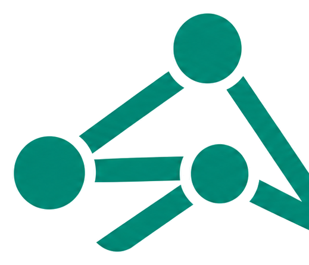

<!DOCTYPE html>
<html lang="en"><head><meta http-equiv="Content-Type" content="text/html; charset=UTF-8">

<meta name="viewport" content="width=device-width, initial-scale=1.0">
<meta name="description" content="Arc — clinical education scheduling intelligence and reconciliation platform.">
<title>Arc | Clinical Scheduling Intelligence</title>
<link rel="icon" href="data:image/svg+xml,%3Csvg xmlns=&#39;http://www.w3.org/2000/svg&#39; viewBox=&#39;0 0 100 100&#39;%3E%3Crect width=&#39;100&#39; height=&#39;100&#39; rx=&#39;22&#39; fill=&#39;%230E6E63&#39;/%3E%3Cpath d=&#39;M26 64 L44 30 L62 64 M34 52 H54&#39; stroke=&#39;white&#39; stroke-width=&#39;7&#39; fill=&#39;none&#39; stroke-linecap=&#39;round&#39; stroke-linejoin=&#39;round&#39;/%3E%3C/svg%3E">
<link rel="preconnect" href="https://fonts.googleapis.com/">
<link rel="preconnect" href="https://fonts.gstatic.com/" crossorigin="">
<link href="https://fonts.googleapis.com/css2?family=IBM+Plex+Mono:wght@400;500;600&amp;family=IBM+Plex+Sans:wght@400;500;600;700&amp;display=swap" rel="stylesheet">
<style>
  :root{
    --ink:#10231F; --teal:#0E6E63; --teal-deep:#0B4F47; --teal-soft:#E7F1EF;
    --paper:#F4F6F5; --hair:#E2E8E6; --muted:#64748B; --muted2:#94A3B8; --line:#EEF1F0; --top-h:88px; --top-h-mobile:76px;
  }
  *{box-sizing:border-box;}
  html,body{margin:0;background:var(--paper);}
  body{font-family:"IBM Plex Sans",ui-sans-serif,system-ui,-apple-system,Segoe UI,Roboto,sans-serif;color:var(--ink);-webkit-font-smoothing:antialiased;line-height:1.45;}
  .mono{font-family:"IBM Plex Mono",ui-monospace,SFMono-Regular,Menlo,monospace;font-variant-numeric:tabular-nums;}
  button{font-family:inherit;cursor:pointer;border:none;background:none;color:inherit;}
  select{font-family:inherit;}
  h1{font-size:24px;font-weight:700;letter-spacing:-.02em;margin:0;}
  h2{font-size:15px;font-weight:700;margin:0;}
  ::-webkit-scrollbar{width:10px;height:10px;}
  ::-webkit-scrollbar-thumb{background:#cfd8d5;border-radius:8px;border:2px solid var(--paper);}
  *:focus-visible{outline:2px solid var(--teal);outline-offset:2px;border-radius:4px;}

  .top{position:sticky;top:0;z-index:30;border-bottom:1px solid var(--hair);background:rgba(255,255,255,.9);backdrop-filter:blur(6px);}
  .top-in{display:flex;align-items:center;gap:14px;padding:0 20px;height:var(--top-h);}
  .brand{display:flex;align-items:center;gap:12px;flex-shrink:0;min-width:max-content;}
  .logo{display:grid;place-items:center;width:30px;height:30px;border-radius:9px;background:var(--teal);}
  .brand b{font-weight:700;letter-spacing:-.01em;font-size:15px;}
  .brand small{display:block;font-size:11px;color:var(--muted);margin-top:-2px;}
  .brand-home{display:inline-flex;align-items:center;border-radius:10px;padding:4px 2px;background:transparent;cursor:pointer;}
  .brand-home:hover{background:rgba(15,110,86,.05);}
  .ctx{font-size:12px;color:var(--muted2);margin-left:6px;}
  .top-actions{margin-left:8px;display:flex;align-items:center;gap:8px;}
  .chip-demo{border-radius:999px;background:#FFFBEB;color:#B45309;font-size:11px;font-weight:600;padding:4px 10px;border:1px solid #FDE68A;}
  .tbtn{display:inline-flex;align-items:center;gap:6px;border:1px solid var(--hair);border-radius:9px;padding:7px 10px;font-size:13px;color:var(--muted);background:#fff;}
  .tbtn:hover{background:var(--paper);}

  .shell{display:flex;}
  .rail{width:236px;flex-shrink:0;border-right:1px solid var(--hair);background:#fff;padding:16px 12px;display:flex;flex-direction:column;gap:2px;min-height:calc(100vh - var(--top-h));}
  .nav{display:flex;align-items:center;gap:10px;border-radius:9px;padding:9px 11px;font-size:13.5px;color:var(--muted);text-align:left;width:100%;}
  .nav:hover{background:var(--paper);}
  .nav.active{background:var(--teal-soft);color:var(--teal-deep);font-weight:600;}
  .nav .nico{color:var(--muted2);display:flex;}
  .nav.active .nico{color:var(--teal);}
  .nav .lbl{flex:1;}
  .nav .badge{font-size:11px;border-radius:999px;padding:1px 7px;background:#E5EAE8;color:#5a6b66;}
  .nav.active .badge{background:var(--teal);color:#fff;}
  .rail-foot{margin-top:auto;padding:14px 8px 0;font-size:11px;color:var(--muted2);line-height:1.6;}

  main{flex:1;min-width:0;padding:26px 22px;max-width:1080px;}
  .sub{color:var(--muted);font-size:14px;margin:4px 0 0;}
  .eyebrow{font-size:12px;color:var(--muted2);text-transform:uppercase;letter-spacing:.16em;}
  .stack>*+*{margin-top:26px;}

  .gate{border-radius:18px;border:1px solid;padding:20px;}
  .gate-row{display:flex;align-items:flex-start;gap:16px;}
  .gate-ic{display:grid;place-items:center;width:46px;height:46px;border-radius:12px;background:rgba(255,255,255,.7);flex-shrink:0;}
  .gate h3{margin:0;font-size:18px;font-weight:700;}
  .gate p{margin:2px 0 0;font-size:13.5px;color:#475569;}
  .gate-cta{margin-left:auto;display:inline-flex;align-items:center;gap:6px;border-radius:10px;padding:9px 14px;font-size:13px;font-weight:600;}
  .gate-cta.on{background:var(--teal);color:#fff;}
  .gate-cta.on:hover{background:var(--teal-deep);}
  .gate-cta.off{background:rgba(255,255,255,.6);color:var(--muted2);border:1px solid var(--hair);cursor:not-allowed;}
  .gate-stats{display:grid;grid-template-columns:repeat(3,1fr);gap:10px;margin-top:18px;}
  .gstat{border-radius:12px;background:rgba(255,255,255,.7);padding:12px 14px;}
  .gstat .n{font-size:26px;font-weight:700;}
  .gstat .l{font-size:12px;color:var(--muted);font-weight:500;}

  .card{border:1px solid var(--hair);background:#fff;border-radius:14px;}
  .sec-head{margin-bottom:12px;}
  .sec-head .ttl{display:flex;align-items:baseline;gap:8px;}
  .sec-head .cnt{font-size:12px;color:var(--muted2);}
  .sec-head .hint{font-size:12.5px;color:var(--muted);margin:2px 0 0;}

  .issue{border:1px solid var(--hair);background:#fff;border-radius:13px;padding:14px;display:flex;gap:12px;align-items:flex-start;}
  .issue:hover{border-color:#cbd5d2;}
  .issue .body{flex:1;min-width:0;}
  .issue .it-top{display:flex;align-items:center;gap:8px;flex-wrap:wrap;}
  .issue .it-name{font-weight:600;font-size:14px;}
  .issue .desc{font-size:13px;color:#475569;margin:5px 0 0;}
  .issue .act{font-size:12.5px;color:var(--muted);margin:6px 0 0;display:flex;align-items:center;gap:6px;}
  .issue .right{display:flex;flex-direction:column;gap:6px;flex-shrink:0;}

  .linkbtn{color:var(--teal-deep);font-weight:500;font-size:13px;}
  .linkbtn:hover{text-decoration:underline;}
  .mini{display:inline-flex;align-items:center;gap:5px;border:1px solid var(--hair);border-radius:9px;padding:6px 10px;font-size:12px;color:var(--muted);background:#fff;}
  .mini:hover{background:var(--paper);}
  .mini.go{border:none;color:var(--teal-deep);font-weight:500;background:transparent;}
  .mini.go:hover{background:var(--teal-soft);}

  .badge-st{display:inline-flex;align-items:center;gap:6px;border-radius:999px;font-weight:500;padding:5px 10px;font-size:12px;}
  .badge-st.sm{padding:2px 8px;font-size:11px;}
  .dot{width:6px;height:6px;border-radius:999px;}
  .sev{border-radius:5px;padding:2px 6px;font-size:11px;font-weight:600;text-transform:uppercase;letter-spacing:.04em;}
  .pill{border-radius:5px;padding:2px 6px;font-size:11px;font-weight:500;color:#475569;background:#EEF1F0;}
  .pill.teal{color:var(--teal-deep);background:#E1EFEC;}

  .avatar{display:inline-flex;align-items:center;justify-content:center;border-radius:999px;font-weight:600;color:var(--teal-deep);background:#D8E9E5;flex-shrink:0;}

  .rowlist{border:1px solid var(--hair);background:#fff;border-radius:14px;overflow:hidden;}
  .row{display:flex;align-items:center;gap:12px;padding:12px 16px;width:100%;text-align:left;}
  .row+.row{border-top:1px solid var(--hair);}
  .row.clk:hover{background:var(--paper);}
  .row .grow{flex:1;min-width:0;}
  .row .nm{font-weight:600;font-size:14px;}
  .row .meta{font-size:12.5px;color:var(--muted);display:flex;align-items:center;gap:6px;margin-top:2px;}

  .chips{display:flex;gap:8px;flex-wrap:wrap;}
  .fchip{border-radius:999px;padding:7px 13px;font-size:12.5px;font-weight:500;border:1px solid var(--hair);background:#fff;color:var(--muted);}
  .fchip:hover{background:var(--paper);}
  .fchip.on{background:var(--ink);color:#fff;border-color:var(--ink);}

  .grid2{display:grid;grid-template-columns:repeat(2,1fr);gap:12px;}
  .grid4{display:grid;grid-template-columns:repeat(4,1fr);gap:10px;}
  .kv{border:1px solid var(--hair);background:#fff;border-radius:12px;padding:12px 14px;}
  .kv .k{font-size:11px;color:var(--muted2);font-weight:500;}
  .kv .v{font-size:14px;font-weight:600;margin-top:2px;}

  .sitecard{border:1px solid var(--hair);background:#fff;border-radius:14px;padding:16px;text-align:left;width:100%;}
  .sitecard:hover{border-color:#cbd5d2;}

  .empty{border:1px solid var(--hair);background:#fff;border-radius:14px;padding:32px;text-align:center;}
  .empty .ec{display:inline-grid;place-items:center;width:44px;height:44px;border-radius:999px;background:#ECFDF3;color:#15803D;margin-bottom:8px;}

  .legend{border:1px solid var(--hair);background:#fff;border-radius:14px;padding:14px 16px;}
  .legend .lh{font-size:12px;font-weight:600;color:var(--muted);display:flex;align-items:center;gap:6px;margin-bottom:8px;}
  .legend-grid{display:grid;grid-template-columns:repeat(2,minmax(280px,420px));justify-content:start;gap:6px 20px;}
  .lg-item{display:flex;gap:8px;align-items:flex-start;border-radius:10px;padding:6px 8px;margin-left:-8px;background:transparent;text-align:left;cursor:pointer;transition:background .16s ease,transform .16s ease,box-shadow .16s ease;}
  .lg-item:hover{background:#F7FAF9;transform:translateY(-1px);box-shadow:0 6px 18px rgba(16,35,31,.05);}
  .lg-item .li-ic{color:var(--teal);margin-top:1px;flex-shrink:0;}
  .lg-item .li-t{font-size:13px;font-weight:600;line-height:1.2;}
  .lg-item .li-b{font-size:12px;color:var(--muted);line-height:1.25;margin-top:1px;}
  .li-more{display:block;font-size:11px;color:var(--teal);margin-top:4px;font-weight:600;}

  .note{font-size:12.5px;color:var(--muted2);}
  .dash{border:1px dashed var(--hair);background:rgba(244,246,245,.6);border-radius:14px;padding:16px;display:flex;gap:12px;align-items:center;}

  .scrim{position:fixed;inset:0;z-index:40;background:rgba(16,35,31,.32);animation:fade .2s ease;}
  .drawer{position:fixed;top:0;right:0;height:100%;width:100%;max-width:460px;background:#fff;border-left:1px solid var(--hair);overflow-y:auto;z-index:41;animation:slide .26s cubic-bezier(.22,.61,.36,1);}
  .dhead{position:sticky;top:0;background:#fff;border-bottom:1px solid var(--hair);padding:16px 20px;display:flex;align-items:flex-start;gap:12px;z-index:2;}
  .dbody{padding:18px 20px;}
  .dbody>*+*{margin-top:20px;}
  .lbl-mini{font-size:11px;color:var(--muted2);font-weight:500;text-transform:uppercase;letter-spacing:.05em;}
  .check{border:1px solid var(--hair);border-radius:13px;padding:14px;}
  select.reassign{width:100%;border:1px solid var(--hair);background:#fff;border-radius:10px;padding:9px 11px;font-size:13.5px;color:var(--ink);}
  select.reassign:focus{border-color:var(--teal);}

  .modal-wrap{position:fixed;inset:0;z-index:50;display:flex;align-items:center;justify-content:center;padding:16px;isolation:isolate;}
  .modal{position:relative;z-index:2;width:100%;max-width:560px;background:#fff;border:1px solid var(--hair);border-radius:18px;padding:26px;max-height:88vh;overflow-y:auto;animation:pop .22s cubic-bezier(.22,.61,.36,1);pointer-events:auto;}
  .modal .close{position:absolute;top:12px;right:12px;z-index:20;width:38px;height:38px;display:grid;place-items:center;border:2px solid var(--teal);border-radius:9px;background:#fff;color:var(--teal-deep);box-shadow:0 3px 10px rgba(16,35,31,.10);cursor:pointer;}
  .modal .close:hover{background:var(--teal-soft);color:var(--teal-deep);transform:translateY(-1px);}
  .modal .close:active{transform:translateY(0);}
  .modal .close svg{pointer-events:none;}
  .scope-grid{display:grid;grid-template-columns:1fr 1fr;gap:18px;margin-top:18px;}
  .scope h4{font-size:12px;font-weight:600;text-transform:uppercase;letter-spacing:.05em;margin:0 0 8px;}
  .scope li{font-size:12.5px;color:#475569;display:flex;gap:6px;margin-bottom:7px;list-style:none;}
  .scope ul{margin:0;padding:0;}

  .toast{position:fixed;bottom:20px;left:50%;transform:translateX(-50%);z-index:60;display:flex;align-items:center;gap:8px;background:var(--ink);color:#fff;font-size:13px;padding:11px 16px;border-radius:12px;box-shadow:0 10px 30px rgba(0,0,0,.18);animation:pop .22s ease;}

  .tlscroll{overflow-x:auto;border:1px solid var(--hair);background:#fff;border-radius:14px;}
  .tlinner{min-width:980px;}
  .tlgrid{display:grid;grid-template-columns:158px repeat(31,minmax(26px,1fr));}
  .tlcorner{grid-column:1;grid-row:1;position:sticky;left:0;z-index:5;background:#fff;border-right:1px solid var(--hair);border-bottom:1px solid var(--hair);padding:8px 12px;display:flex;align-items:flex-end;font-size:11px;font-weight:600;color:var(--muted);}
  .tlhc{grid-row:1;text-align:center;padding:6px 0;border-left:1px solid var(--line);border-bottom:1px solid var(--hair);}
  .tlhc.we{background:#FAFBFB;} .tlhc.mon{border-left:1px solid #d4dbd9;}
  .tlhc .wd{display:block;font-size:9px;color:var(--muted2);text-transform:uppercase;letter-spacing:.04em;}
  .tlhc .dn{display:block;font-size:11px;color:var(--muted);}
  .tllabel{grid-column:1;grid-row:1;position:sticky;left:0;z-index:4;background:#fff;border-right:1px solid var(--hair);padding:7px 12px;display:flex;align-items:center;gap:9px;}
  .tllabel .nm{font-size:12.5px;font-weight:600;line-height:1.15;}
  .tllabel .mt{font-size:10.5px;color:var(--muted2);}
  .tlcell{grid-row:1;min-height:50px;border-left:1px solid var(--line);}
  .tlcell.we{background:#FAFBFB;} .tlcell.mon{border-left:1px solid #d4dbd9;}
  .tlrow:nth-child(even) .tlcell{background:#FBFCFC;} .tlrow:nth-child(even) .tlcell.we{background:#F6F8F8;}
  .tlrow{border-top:1px solid var(--line);}
  .tlbar{grid-row:1;align-self:center;margin:7px 2px;border-radius:7px;padding:5px 8px;font-size:11px;font-weight:500;border:1px solid;border-left-width:3px;overflow:hidden;white-space:nowrap;text-overflow:ellipsis;text-align:left;z-index:2;line-height:1.25;}
  .tlbar:hover{filter:brightness(.97);}
  .tlbar b{font-weight:600;}
  .tlpip{grid-row:1;align-self:end;justify-self:center;width:8px;height:8px;border-radius:99px;margin-bottom:7px;z-index:4;box-shadow:0 0 0 2px #fff;}
  .tllane .tlcell{min-height:34px;}
  .tlblock{grid-row:1;align-self:center;margin:5px 2px;border-radius:6px;padding:3px 7px;font-size:10.5px;font-weight:600;overflow:hidden;white-space:nowrap;text-overflow:ellipsis;z-index:2;line-height:1.2;}
  .tllegend{display:flex;flex-wrap:wrap;gap:14px;align-items:center;font-size:12px;color:var(--muted);}
  .tllegend .lk{display:inline-flex;align-items:center;gap:6px;}
  .tlsw{width:16px;height:11px;border-radius:3px;border:1px solid;border-left-width:3px;}
  .seg{display:inline-flex;background:#EAEEED;border-radius:10px;padding:3px;gap:2px;}
  .seg button{font-size:12.5px;padding:6px 11px;border-radius:8px;color:var(--muted);font-weight:500;display:inline-flex;align-items:center;gap:6px;white-space:nowrap;}
  .seg button.on{background:#fff;color:var(--ink);box-shadow:0 1px 2px rgba(0,0,0,.07);}
  .seg button .sgi{display:flex;color:var(--muted2);} .seg button.on .sgi{color:var(--teal);}
  .rolesel{border:1px solid var(--hair);background:#fff;border-radius:9px;padding:6px 9px;font-size:12.5px;color:var(--ink);font-family:inherit;max-width:230px;}
  .tofield{border:1px solid var(--hair);border-radius:9px;padding:8px 9px;font-size:13px;font-family:inherit;color:var(--ink);background:#fff;}
  .tofield:focus{border-color:var(--teal);outline:none;}
  .codeblock{background:#0E2A27;color:#C7E6DF;border:1px solid #14403a;border-radius:12px;padding:13px 15px;font-size:12px;line-height:1.6;overflow-x:auto;}

  /* Arc OV Iteration 01 — Ryan-driven visual polish */
  .top{box-shadow:0 1px 0 rgba(16,35,31,.03);}
  .top-in{width:100%;max-width:none;margin:0;padding-left:12px;padding-right:12px;}
  .logo{box-shadow:0 6px 16px rgba(14,110,99,.22);}
  .rail{box-shadow:inset -1px 0 0 rgba(16,35,31,.02);}
  .nav{transition:background .16s ease,color .16s ease,transform .16s ease;}
  .nav:hover{transform:translateX(1px);}
  .card,.rowlist,.legend,.sitecard,.issue,.gate{box-shadow:0 1px 2px rgba(16,35,31,.035),0 8px 24px rgba(16,35,31,.025);}
  .issue{transition:border-color .16s ease,box-shadow .16s ease,transform .16s ease;}
  .issue:hover{transform:translateY(-1px);box-shadow:0 8px 24px rgba(16,35,31,.07);}
  .sitecard{transition:border-color .16s ease,box-shadow .16s ease,transform .16s ease;}
  .sitecard:hover{transform:translateY(-1px);box-shadow:0 8px 24px rgba(16,35,31,.07);}
  .student-sitecard{min-height:150px;display:flex;flex-direction:column;justify-content:space-between;}
  .student-sitecard .student-card-head{display:flex;align-items:center;gap:8px;}
  .student-sitecard .student-meta{font-size:12px;color:var(--muted);}
  .student-sitecard .student-summary{display:flex;justify-content:space-between;align-items:center;margin-top:10px;gap:10px;}
  .student-sitecard .student-assign{font-size:12px;color:var(--muted2);}

  .reason-label{display:inline-flex;align-items:center;gap:5px;font-size:10.5px;font-weight:700;letter-spacing:.08em;text-transform:uppercase;color:#B91C1C;margin-top:8px;}
  .source-chip{display:inline-flex;align-items:center;gap:5px;border:1px solid #BFDBFE;background:#EFF6FF;color:#1D4ED8;border-radius:999px;padding:5px 9px;font-size:11px;font-weight:600;}
  .attention-note{border-left:3px solid #DC2626;padding-left:10px;}
  .mini,.tbtn,.gate-cta,.fchip{transition:background .16s ease,border-color .16s ease,box-shadow .16s ease,transform .16s ease;}
  .mini:hover,.tbtn:hover,.gate-cta.on:hover{transform:translateY(-1px);}
  .brand-wordmark{display:block;height:68px;width:auto;border-radius:8px;background:transparent;padding:0;box-shadow:none;object-fit:contain;}
  .kpi-drill-card{width:100%;text-align:left;cursor:pointer;transition:transform .16s ease,box-shadow .16s ease,border-color .16s ease;}
  .kpi-drill-card:hover{transform:translateY(-1px);box-shadow:0 8px 20px rgba(16,35,31,.06);border-color:#cbd5d2;}
  .kpi-next-card{width:100%;text-align:left;border:1px dashed #cbd5d2;border-radius:14px;padding:14px 16px;background:#FCFEFD;display:flex;align-items:center;justify-content:space-between;gap:12px;cursor:pointer;transition:transform .16s ease,box-shadow .16s ease,border-color .16s ease,background .16s ease;}
  .kpi-next-card:hover{transform:translateY(-1px);box-shadow:0 8px 20px rgba(16,35,31,.06);border-color:#9fb7b0;background:#fff;}
  .kpi-next-card{border-style:solid;border-width:2px;background:#fff;}
  .kpi-next-card::after{content:"Open";font-size:12px;font-weight:700;color:var(--teal);margin-left:10px;}
  .kpi-item-card{cursor:pointer;transition:transform .16s ease,box-shadow .16s ease,border-color .16s ease,background .16s ease;}
  .kpi-item-card:hover{transform:translateY(-1px);box-shadow:0 8px 20px rgba(16,35,31,.06);border-color:#cbd5d2;background:#fff;}
  .ai-box-btn{display:block;width:100%;text-align:left;cursor:pointer;border-radius:9px;transition:transform .16s ease,box-shadow .16s ease,border-color .16s ease,background .16s ease;}
  .ai-box-btn:hover{transform:translateY(-1px);box-shadow:0 8px 18px rgba(124,58,237,.10);border-color:#c4b5fd;background:#FAF7FF;}

  .kpi-next-copy{display:flex;flex-direction:column;gap:4px;}
  .kpi-hint{font-size:12px;color:var(--muted);margin-top:10px;}


  .student-card{display:block;width:100%;text-align:left;background:#fff;}
  .student-card:hover{background:var(--paper);}
  .student-section-label{font-size:11px;color:var(--muted2);text-transform:uppercase;letter-spacing:.04em;font-weight:600;margin-top:8px;}
  .student-assignment-line{font-size:12.5px;color:#475569;margin-top:4px;display:flex;align-items:center;gap:6px;flex-wrap:wrap;}
  .student-flags{display:flex;gap:6px;flex-wrap:wrap;margin-top:6px;}
  .student-card.compact{display:flex !important;padding:5px 10px !important;gap:8px !important;align-items:flex-start !important;min-height:0 !important;}
  .student-card.compact .avatar{width:30px !important;height:30px !important;font-size:12px !important;margin-top:1px;}
  .student-main-head{font-size:13.5px;font-weight:500;line-height:1.02;}
  .student-main-sub{font-size:12px;color:var(--muted);margin-top:0;line-height:1.05;}
  .student-card.compact .student-section-label{margin-top:3px;font-size:9.5px;line-height:1;}
  .student-card.compact .student-assignment-line{margin-top:1px;font-size:11px;line-height:1.05;gap:4px;}
  .student-card.compact .student-flags{margin-top:2px;gap:4px;}
  .student-card.compact .chips{margin-top:4px !important;gap:3px;}
  .student-card.compact .pill{padding:2px 5px;font-size:10px;}
  .student-card.compact .student-side{display:flex;flex-direction:column;align-items:flex-end;justify-content:center;gap:3px;min-width:82px;padding-top:0;align-self:center;}
  .student-card.compact .student-side .mono{font-size:10.5px !important;line-height:1.0;}
  .student-card.compact .badge-st.sm{padding:2px 6px;font-size:10px;}
  .rowlist .student-card.compact + .student-card.compact{border-top:1px solid var(--hair);}

  .student-flag-chip{display:inline-flex;align-items:center;gap:5px;padding:4px 8px;border-radius:999px;font-size:11px;font-weight:600;}
  .student-flag-chip.clear{background:#DCFCE7;color:#15803D;}
  .student-flag-chip.warn{background:#FEF3C7;color:#92400E;}
  .student-flag-chip.high{background:#FEE2E2;color:#B91C1C;}


  /* Arc OV Iteration 02 — command-center landing page */
  body{background:#F5F7F9;}
  main{max-width:none;width:100%;padding:16px 18px 22px;}
  .shell{min-height:calc(100vh - var(--top-h));}
  .rail{position:sticky;top:var(--top-h);height:calc(100vh - var(--top-h));min-height:0;}
  .cc{display:flex;flex-direction:column;gap:12px;min-width:0;}
  .cc-focus{border:3px solid #DC2626;border-radius:16px;padding:14px;background:linear-gradient(180deg,#FFFDFD 0%,#FFFFFF 100%);box-shadow:0 0 0 4px rgba(220,38,38,.055),0 10px 30px rgba(127,29,29,.10);display:flex;flex-direction:column;gap:12px;width:50%;max-width:760px;min-width:620px;align-self:flex-start;}
  .cc-focus:hover{box-shadow:0 0 0 5px rgba(220,38,38,.07),0 14px 34px rgba(127,29,29,.13);}
  .cc-toolbar{display:flex;align-items:flex-start;justify-content:space-between;gap:12px;flex-wrap:wrap;}
  .cc-title h1{font-size:20px;}
  .cc-title p{margin:2px 0 0;color:var(--muted);font-size:12px;}
  .cc-tools{display:flex;gap:7px;align-items:center;flex-wrap:wrap;justify-content:flex-end;}
  .cc-kpis{display:grid;grid-template-columns:repeat(2,minmax(220px,1fr));gap:10px;}
  .cc-kpi{background:#fff;border:1px solid var(--hair);border-radius:12px;padding:12px 13px;display:flex;gap:10px;align-items:center;min-height:78px;box-shadow:0 3px 12px rgba(16,35,31,.035);width:100%;text-align:left;transition:transform .16s ease,box-shadow .16s ease,border-color .16s ease;}
  .cc-kpi:hover{transform:translateY(-2px);box-shadow:0 10px 24px rgba(16,35,31,.09);border-color:#cbd5d2;}
  .cc-kpi:after{content:"›";margin-left:auto;color:var(--muted2);font-size:20px;}
  .cc-kpi-ic{width:36px;height:36px;border-radius:10px;display:grid;place-items:center;flex:0 0 auto;}
  .cc-kpi .lab{font-size:11px;font-weight:600;color:#334155;white-space:nowrap;}
  .cc-kpi .num{font-size:24px;font-weight:700;line-height:1.05;margin-top:2px;}
  .cc-kpi .delta{font-size:9.5px;color:var(--muted2);margin-top:4px;}
  .cc-grid{display:grid;grid-template-columns:minmax(0,3fr) minmax(290px,1fr);gap:12px;align-items:start;}
  .cc-left,.cc-right{display:flex;flex-direction:column;gap:12px;min-width:0;}
  .cc-panel{background:#fff;border:1px solid var(--hair);border-radius:12px;box-shadow:0 3px 12px rgba(16,35,31,.035);overflow:hidden;}
  .cc-panel-head{display:flex;align-items:center;justify-content:space-between;gap:10px;padding:11px 13px;border-bottom:1px solid var(--hair);}
  .cc-panel-title{display:flex;align-items:center;gap:7px;font-size:12.5px;font-weight:700;}
  .cc-panel-tools{display:flex;align-items:center;gap:8px;flex-wrap:wrap;}
  .cc-legend{display:flex;gap:12px;align-items:center;flex-wrap:wrap;font-size:9.5px;color:var(--muted);}
  .cc-legend span{display:inline-flex;align-items:center;gap:5px;}
  .cc-swatch{width:9px;height:9px;border-radius:2px;display:inline-block;}
  .week-wrap{overflow:auto;}
  .week-grid{min-width:820px;display:grid;grid-template-columns:145px repeat(14,minmax(46px,1fr));font-size:9px;}
  .wg-corner,.wg-day,.wg-site,.wg-cell{border-right:1px solid #E8ECEB;border-bottom:1px solid #E8ECEB;}
  .wg-corner{padding:10px 11px;font-weight:700;color:#475569;background:#FAFBFC;}
  .wg-day{padding:7px 2px;text-align:center;background:#FAFBFC;color:#64748B;line-height:1.25;}
  .wg-day b{display:block;color:#334155;font-size:9.5px;}
  .wg-site{padding:8px 10px;background:#fff;min-height:45px;display:flex;flex-direction:column;justify-content:center;}
  .wg-site b{font-size:9.5px;color:#334155;}
  .wg-site small{color:#94A3B8;margin-top:2px;}
  .wg-cell{padding:4px;background:#fff;min-height:45px;display:flex;align-items:center;justify-content:center;}
  .shift{width:100%;min-height:34px;border-radius:5px;padding:5px 3px;display:flex;align-items:center;justify-content:center;text-align:center;font-weight:600;line-height:1.2;border:1px solid;}
  .shift.assigned{background:#ECFDF3;border-color:#BBF7D0;color:#15803D;}
  .shift.conflict{background:#FEF2F2;border-color:#FECACA;color:#DC2626;}
  .shift.pto{background:#F5F3FF;border-color:#DDD6FE;color:#7C3AED;}
  .shift.oncall{background:#FFF7ED;border-color:#FED7AA;color:#C2410C;}
  .shift.unavail{background:#F1F5F9;border-color:#E2E8F0;color:#64748B;}
  .cc-alert{display:flex;gap:8px;padding:9px 12px;border-bottom:1px solid #EEF1F0;align-items:flex-start;}
  .cc-alert:last-child{border-bottom:none;}
  .cc-alert .grow{min-width:0;}
  .cc-alert b{font-size:10.5px;display:block;color:#334155;}
  .cc-alert p{font-size:9.5px;color:var(--muted);margin:1px 0 0;}
  .cc-tag{margin-left:auto;border-radius:4px;padding:3px 6px;font-size:8.5px;font-weight:600;white-space:nowrap;}
  .cc-person{display:flex;align-items:center;gap:8px;padding:7px 12px;}
  .cc-person .grow{min-width:0;}
  .cc-person b{font-size:10px;display:block;}
  .cc-person small{font-size:8.5px;color:var(--muted2);display:block;}
  .cc-status{font-size:8.5px;font-weight:600;margin-left:auto;white-space:nowrap;}
  .cc-bottom{display:grid;grid-template-columns:1.2fr 1.45fr 1fr .85fr;gap:10px;}
  .mini-list{padding:5px 12px 10px;}
  .mini-row{display:flex;align-items:center;gap:7px;padding:7px 0;border-bottom:1px solid #EEF1F0;font-size:9.5px;}
  .mini-row:last-child{border-bottom:none;}
  .mini-row .val{margin-left:auto;font-weight:700;white-space:nowrap;}
  .mini-metrics{display:grid;grid-template-columns:repeat(3,1fr);border-bottom:1px solid var(--hair);}
  .mini-metric{text-align:center;padding:9px 4px;border-right:1px solid var(--hair);}
  .mini-metric:last-child{border-right:none;}
  .mini-metric b{display:block;font-size:16px;}
  .mini-metric small{font-size:8.5px;color:var(--muted);}
  .ai-box{margin:8px 10px;padding:8px;border-radius:7px;background:#F8FAFC;border:1px solid #E2E8F0;font-size:9.5px;}
  .donut{width:78px;height:78px;border-radius:50%;background:conic-gradient(#10B981 0 82%,#F59E0B 82% 89%,#EF4444 89% 100%);display:grid;place-items:center;margin:10px auto;}
  .donut:after{content:'168';width:48px;height:48px;border-radius:50%;background:#fff;display:grid;place-items:center;font-size:13px;font-weight:700;color:#334155;}
  .cc-link{font-size:9.5px;color:#2563EB;font-weight:600;}
  @media (max-width:1180px){.cc-focus{width:64%;min-width:560px}.cc-kpis{grid-template-columns:repeat(2,1fr)}.cc-grid{grid-template-columns:1fr}.cc-right{display:grid;grid-template-columns:1fr 1fr}.cc-bottom{grid-template-columns:1fr 1fr}}
  @media (max-width:820px){.cc-focus{width:100%;max-width:none;min-width:0}.cc-toolbar{align-items:flex-start;flex-direction:column}.cc-tools{justify-content:flex-start}.cc-kpis{grid-template-columns:repeat(2,1fr)}.cc-right{display:flex}.cc-bottom{grid-template-columns:1fr}.rail{height:auto}.week-grid{min-width:760px}}

  /* Calendar restrained refinements */
  .calendar-summary{display:flex;align-items:center;gap:8px;flex-wrap:wrap;margin-top:10px;}
  .calendar-summary .sum-pill{display:inline-flex;align-items:center;gap:6px;border:1px solid var(--hair);background:#fff;border-radius:999px;padding:6px 10px;font-size:12px;color:var(--muted);box-shadow:0 1px 2px rgba(16,35,31,.03);}
  .calendar-summary .sum-pill b{color:var(--ink);font-size:13px;}
  .tlhc.today{background:#F0F7F5;box-shadow:inset 2px 0 0 rgba(14,110,99,.45),inset -1px 0 0 rgba(14,110,99,.12);}
  .tlhc.today .wd,.tlhc.today .dn{color:var(--teal-deep);font-weight:700;}
  .tlcell.today{background:#F7FBFA;box-shadow:inset 2px 0 0 rgba(14,110,99,.24);}
  .today-tag{display:inline-flex;align-items:center;border-radius:999px;background:var(--teal-soft);color:var(--teal-deep);font-size:10px;font-weight:700;padding:2px 6px;margin-left:5px;vertical-align:middle;}

  .coverage-summary{display:flex;align-items:center;gap:8px;flex-wrap:wrap;margin-top:10px;}
  .coverage-chip{display:inline-flex;align-items:center;gap:6px;border:1px solid var(--hair);background:#fff;border-radius:999px;padding:6px 10px;font-size:11px;font-weight:600;color:#475569;box-shadow:0 1px 2px rgba(16,35,31,.025);}
  .coverage-chip strong{font-size:12px;color:var(--ink);}
  .coverage-gap-label{display:inline-flex;align-items:center;justify-content:center;gap:4px;}
  .coverage-toggle{border:1px solid var(--hair);border-radius:9px;background:#fff;padding:6px 10px;font-size:11px;font-weight:600;color:var(--muted);display:inline-flex;align-items:center;gap:6px;}
  .coverage-toggle.on{background:#FEF2F2;color:#B91C1C;border-color:#FECACA;}
  .coverage-toggle:hover{background:#F8FAFC;}
  @keyframes slide{from{transform:translateX(24px);opacity:0;}to{transform:translateX(0);opacity:1;}}
  @keyframes fade{from{opacity:0;}to{opacity:1;}}
  @keyframes pop{from{transform:scale(.97);opacity:.4;}to{transform:scale(1);opacity:1;}}
  @media (prefers-reduced-motion:reduce){*{animation:none!important;}}
  @media (max-width:820px){
  body{overflow-x:hidden;}

  .top{z-index:40;}
  .top-in{
    height:auto;
    min-height:var(--top-h-mobile);
    padding:6px 12px;
    gap:8px;
    overflow-x:auto;
    -webkit-overflow-scrolling:touch;
  }
  .brand{flex:0 0 auto;}
  .brand-wordmark{height:62px;}
  .seg{
    flex:0 0 auto;
    overflow-x:auto;
    max-width:72vw;
  }
  .seg button{font-size:12px;padding:6px 9px;}
  .top-actions{display:none;}
  .ctx{display:none;}

  .shell{display:block;}

  .rail{
    display:flex !important;
    flex-direction:row;
    align-items:center;
    gap:6px;
    width:100%;
    min-height:auto;
    overflow-x:auto;
    overflow-y:hidden;
    -webkit-overflow-scrolling:touch;
    border-right:none;
    border-bottom:1px solid var(--hair);
    background:#fff;
    padding:8px 10px;
    position:sticky;
    top:var(--top-h-mobile);
    z-index:35;
    box-shadow:0 2px 8px rgba(16,35,31,.06);
  }

  .rail-foot{display:none;}

  .nav{
    flex:0 0 auto;
    width:auto;
    white-space:nowrap;
    padding:8px 10px;
    font-size:12.5px;
  }

  .nav .lbl{flex:0 0 auto;}
  .nav .badge{margin-left:2px;}

  main{
    max-width:none;
    padding:18px 14px;
  }

  .gate-row{flex-direction:column;align-items:stretch;}
  .gate-cta{margin-left:0;justify-content:center;}
  .gate-stats{grid-template-columns:repeat(3,minmax(0,1fr));}
  .issue{flex-direction:column;}
  .issue .right{flex-direction:row;align-self:stretch;}
  .grid2,.legend-grid,.scope-grid{grid-template-columns:1fr;}
  .grid4{grid-template-columns:repeat(2,1fr);}
}

  .demo-card-grid{display:grid;grid-template-columns:repeat(3,minmax(0,1fr));gap:14px;}
  .demo-work-card{border:1px solid var(--hair);border-top:4px solid var(--tone);border-radius:14px;background:#fff;padding:16px;display:flex;flex-direction:column;min-height:330px;box-shadow:0 1px 2px rgba(16,35,31,.035),0 8px 24px rgba(16,35,31,.025);}
  .demo-work-card h3{font-size:19px;line-height:1.28;margin:10px 0 6px;}
  button.demo-work-card{font-family:inherit;color:inherit;text-align:left;width:100%;cursor:pointer;}
  button.demo-work-card:focus-visible{outline:3px solid rgba(14,110,99,.32);outline-offset:3px;}
  button.demo-work-card .demo-owner{display:block;text-align:center;}
  .demo-status{display:inline-flex;align-items:center;gap:6px;width:max-content;padding:5px 10px;border-radius:999px;font-size:12px;font-weight:800;background:var(--tonebg);color:var(--tone);}
  .demo-badges{display:flex;align-items:center;gap:8px;flex-wrap:wrap;width:max-content;}
  .steel-thread-pill{display:inline-flex;align-items:center;padding:5px 11px;border-radius:999px;background:linear-gradient(180deg,#0F8A78 0%,#0B6F63 100%);color:#fff;font-size:12px;font-weight:800;letter-spacing:.01em;border:1px solid rgba(6,95,84,.28);box-shadow:0 3px 8px rgba(14,110,99,.20);}

  .demo-field{margin-top:14px}.demo-field b{display:block;font-size:11px;text-transform:uppercase;letter-spacing:.08em;color:var(--muted2);margin-bottom:5px}.demo-field p{font-size:14px;line-height:1.5;color:#475569;margin:0;}
  .demo-time{margin-top:auto;padding-top:16px;font-size:14px;font-weight:700;color:var(--tone);}
  .demo-owner{margin-top:12px;border:0;border-radius:9px;background:var(--tone);color:#fff;padding:12px 14px;font-size:14px;font-weight:700;width:100%;}
  .demo-detail-grid{display:grid;grid-template-columns:1fr 1fr;gap:12px;margin-top:16px}.demo-detail{border:1px solid var(--hair);border-radius:12px;padding:12px;background:#FCFEFD}.demo-detail b{display:block;font-size:10px;text-transform:uppercase;letter-spacing:.08em;color:var(--muted2);margin-bottom:5px}.demo-detail p{margin:0;font-size:13px;line-height:1.45;color:#334155}
  .demo-actions{display:grid;grid-template-columns:1fr 1fr;gap:9px;margin-top:16px}.demo-action{border:1px solid var(--hair);border-radius:9px;background:#fff;padding:10px 12px;text-align:left;font-size:12.5px;font-weight:600;color:#334155}.demo-action.primary{background:var(--teal);color:#fff;border-color:var(--teal)}.demo-action[disabled]{opacity:.45;cursor:not-allowed;background:#F1F5F9}
  
  .second-level-card{width:100%;display:flex;align-items:center;justify-content:space-between;gap:16px;text-align:left;padding:16px 18px;margin-top:16px;border:1px solid color-mix(in srgb,var(--tone,#0F766E) 28%,#dbe7e3);border-left:4px solid var(--tone,#0F766E);border-radius:14px;background:#fff;box-shadow:0 5px 16px rgba(15,23,42,.06);cursor:pointer;transition:.18s ease}
  .second-level-card:hover{transform:translateY(-1px);box-shadow:0 9px 22px rgba(15,23,42,.10);border-color:var(--tone,#0F766E)}
  .second-level-card:focus-visible{outline:3px solid color-mix(in srgb,var(--tone,#0F766E) 30%,transparent);outline-offset:2px}
  /* Command-center modal interaction fix: the backdrop must remain behind both detail levels. */
  .modal-wrap > .scrim{z-index:0 !important;pointer-events:auto;}
  .modal-wrap > .modal{z-index:2 !important;pointer-events:auto;}
  .modal-wrap .second-level-card{position:relative;z-index:3;pointer-events:auto;}
  .modal-wrap .second-level-card *{pointer-events:none;}
  .modal-wrap .second-level-card:active{transform:translateY(0) scale(.995);}

  .cc-kpi{cursor:pointer;}
  .cc-kpi:focus-visible,.second-level-card:focus-visible{outline:3px solid rgba(15,118,110,.28);outline-offset:3px;}
  button[data-act],.row.clk,.sitecard,.student-work-card,.demo-work-card,.kpi-item-card,.kpi-next-card,.second-level-card{cursor:pointer;}
  .modal-wrap .modal{padding-top:30px;}
  .second-level-copy{display:flex;flex-direction:column;gap:4px;min-width:0}
  .second-level-kicker{font-size:11px;font-weight:800;letter-spacing:.09em;text-transform:uppercase;color:var(--tone,#0F766E)}
  .second-level-title{font-size:14px;font-weight:700;color:var(--ink)}
  .second-level-desc{font-size:12.5px;color:var(--muted);line-height:1.45}
.demo-note{margin-top:16px;border-left:4px solid var(--teal);background:#F0FDF8;border-radius:0 10px 10px 0;padding:12px 14px;font-size:13px;line-height:1.45;color:#334155}
  @media(max-width:980px){.demo-card-grid{grid-template-columns:1fr}.demo-work-card{min-height:0}.demo-detail-grid,.demo-actions{grid-template-columns:1fr}}


  /* AtlasFlow footer */
  .atlas-footer{
    min-height:63px;
    background:#0B0B0B;
    color:#D1D5DB;
    border-bottom:2px solid #A7B500;
    display:grid;
    grid-template-columns:1fr auto 1fr;
    align-items:center;
    gap:18px;
    padding:0 12px;
    font-size:14px;
    font-weight:700;
    letter-spacing:-.01em;
  }
  .atlas-footer .footer-center{text-align:center;}
  .atlas-footer .footer-right{text-align:right;}
  @media (max-width:640px){
    .atlas-footer{grid-template-columns:1fr;gap:4px;text-align:center;padding:12px;}
    .atlas-footer .footer-right,.atlas-footer .footer-center{text-align:center;}
  }

  /* Arc OV Iteration 03 — denser operational dashboard */
  .ops-top{display:grid;grid-template-columns:minmax(0,1.35fr) minmax(340px,1fr);gap:16px;align-items:stretch;}
  .ops-top .cc-focus{width:100%;max-width:none;min-width:0;align-self:stretch;border:1px solid var(--hair);box-shadow:0 4px 18px rgba(16,35,31,.055);padding:18px;}
  .ops-top .cc-kpis{gap:12px;}
  .ops-top .cc-kpi{min-height:92px;padding:15px;}
  .ops-top .cc-kpi-ic{width:42px;height:42px;}
  .ops-top .cc-kpi .num{font-size:28px;}
  .weekly-brief{background:#fff;border:1px solid var(--hair);border-radius:16px;padding:18px;box-shadow:0 4px 18px rgba(16,35,31,.055);display:flex;flex-direction:column;gap:15px;}
  .brief-head{display:flex;align-items:flex-start;justify-content:space-between;gap:12px;padding-bottom:12px;border-bottom:1px solid var(--hair);}
  .brief-title{font-size:16px;font-weight:800;} .brief-sub{font-size:11.5px;color:var(--muted);margin-top:2px;}
  .sync-pill{font-size:10.5px;font-weight:700;color:#0F766E;background:#ECFDF5;border:1px solid #A7F3D0;padding:5px 8px;border-radius:999px;white-space:nowrap;}
  .brief-stats{display:grid;grid-template-columns:repeat(2,1fr);gap:8px;}
  .brief-stat{border:1px solid var(--hair);background:#FAFCFB;border-radius:10px;padding:10px 11px;}
  .brief-stat b{display:block;font-size:20px;line-height:1.1;} .brief-stat span{font-size:10.5px;color:var(--muted);}
  .brief-block{padding-top:2px;} .brief-label{font-size:10px;text-transform:uppercase;letter-spacing:.09em;font-weight:800;color:var(--muted2);margin-bottom:6px;}
  .brief-risk{border-left:4px solid #DC2626;background:#FFF7F7;border-radius:0 10px 10px 0;padding:10px 12px;}
  .brief-risk b{font-size:13px;display:block;} .brief-risk span{font-size:11.5px;color:#64748B;display:block;margin-top:3px;}
  .brief-focus{margin:0;padding-left:18px;font-size:11.5px;color:#334155;line-height:1.75;}
  .queue-summary{display:flex;align-items:center;gap:10px;flex-wrap:wrap;border:1px solid var(--hair);background:#fff;border-radius:12px;padding:10px 13px;margin:10px 0 14px;box-shadow:0 2px 10px rgba(16,35,31,.035);}
  .queue-summary strong{font-size:12.5px;margin-right:4px;} .queue-chip{display:inline-flex;align-items:center;gap:5px;font-size:11px;font-weight:700;padding:5px 8px;border-radius:999px;}
  .demo-meta{display:grid;grid-template-columns:repeat(2,minmax(0,1fr));gap:7px 10px;margin-top:12px;padding:10px;border-radius:10px;background:#F8FAFC;border:1px solid #E8ECEF;}
  .demo-meta-item b{display:block;font-size:9px;letter-spacing:.07em;text-transform:uppercase;color:var(--muted2);margin-bottom:2px;} .demo-meta-item span{font-size:11px;color:#334155;font-weight:600;}
  .demo-live{margin-top:10px;font-size:11px;color:var(--muted);font-weight:600;}
  .readiness-proof{border:1px solid var(--hair);background:#fff;border-radius:14px;padding:16px;box-shadow:0 3px 14px rgba(16,35,31,.04);}
  .proof-head{display:flex;justify-content:space-between;align-items:flex-start;gap:12px;margin-bottom:12px;} .proof-head h2{font-size:16px;} .proof-head p{font-size:11.5px;color:var(--muted);margin:3px 0 0;}
  .proof-grid{display:grid;grid-template-columns:repeat(3,1fr);gap:10px;} .proof-tile{border:1px solid var(--hair);border-radius:11px;padding:12px;background:#FCFEFD;display:flex;gap:10px;align-items:center;}
  .proof-icon{width:32px;height:32px;border-radius:9px;display:grid;place-items:center;background:var(--teal-soft);color:var(--teal);flex:0 0 auto;} .proof-name{display:block;font-size:11px;color:var(--muted);font-weight:600;} .proof-result{display:block;font-size:13px;font-weight:800;margin-top:2px;}
  .ops-lower{display:grid;grid-template-columns:1.1fr 1fr 1fr;gap:14px;} .ops-panel{background:#fff;border:1px solid var(--hair);border-radius:14px;padding:15px;box-shadow:0 3px 14px rgba(16,35,31,.04);}
  .ops-panel h2{font-size:14px;margin-bottom:3px;} .ops-panel>p{font-size:11px;color:var(--muted);margin:0 0 11px;} .ops-line{display:flex;align-items:center;gap:8px;padding:8px 0;border-top:1px solid #EEF1F0;font-size:11px;} .ops-line:first-of-type{border-top:none;} .ops-line b{margin-left:auto;font-size:12px;}
  @media(max-width:1100px){.ops-top{grid-template-columns:1fr}.proof-grid{grid-template-columns:repeat(2,1fr)}.ops-lower{grid-template-columns:1fr 1fr}}
  @media(max-width:760px){.brief-stats,.proof-grid,.ops-lower{grid-template-columns:1fr}.demo-meta{grid-template-columns:1fr}.queue-summary{align-items:flex-start}.ops-top .cc-kpis{grid-template-columns:1fr}}


  /* Assignment workspace — restrained operational upgrade */
  .assign-summary{display:flex;align-items:center;gap:16px;flex-wrap:wrap;padding:12px 14px;border:1px solid var(--hair);background:#fff;border-radius:12px;box-shadow:0 1px 2px rgba(16,35,31,.03)}
  .assign-summary strong{font-size:13px}.assign-summary span{font-size:12px;color:var(--muted)}
  .assign-summary .alert{color:#B45309;font-weight:600}.assign-summary .ok{color:#15803D;font-weight:600}
  .assign-tools{display:flex;align-items:center;justify-content:space-between;gap:12px;flex-wrap:wrap}
  .week-head{display:flex;align-items:end;justify-content:space-between;gap:12px;margin-bottom:8px}
  .week-head .eyebrow{margin:0}.week-count{font-size:11.5px;color:var(--muted)}
  .assignment-row{display:grid;grid-template-columns:minmax(260px,1.25fr) minmax(280px,1.1fr) auto;align-items:center;gap:18px;padding:13px 16px;width:100%;text-align:left}
  .assignment-row+.assignment-row{border-top:1px solid var(--hair)}
  .assignment-row:hover{background:#FAFCFB}
  .assignment-main{display:flex;align-items:center;gap:11px;min-width:0}
  .assignment-main .grow{min-width:0}
  .assignment-name{display:flex;align-items:center;gap:7px;flex-wrap:wrap}
  .assignment-context{font-size:12px;color:var(--muted);margin-top:3px;display:flex;align-items:center;gap:5px;flex-wrap:wrap}
  .assignment-signal{min-width:0}
  .assignment-issue{font-size:12.5px;font-weight:650;color:#334155;white-space:nowrap;overflow:hidden;text-overflow:ellipsis}
  .assignment-action{font-size:11.5px;color:var(--muted);margin-top:3px;white-space:nowrap;overflow:hidden;text-overflow:ellipsis}
  .assignment-side{display:flex;align-items:center;justify-content:flex-end;gap:10px;min-width:max-content}
  .readiness-score{font-size:11px;font-weight:700;color:#475569;border:1px solid var(--hair);border-radius:999px;padding:3px 7px;background:#fff}
  .assignment-meta{font-size:10.5px;color:var(--muted2);text-align:right;line-height:1.35}
  @media(max-width:1050px){.assignment-row{grid-template-columns:minmax(240px,1fr) minmax(220px,1fr)}.assignment-side{grid-column:1/-1;justify-content:flex-start;padding-left:45px}.assignment-meta{text-align:left}}
  @media(max-width:720px){.assignment-row{display:flex;flex-direction:column;align-items:stretch;gap:10px}.assignment-side{padding-left:0;justify-content:flex-start;flex-wrap:wrap}.assignment-issue,.assignment-action{white-space:normal}.week-head{align-items:flex-start;flex-direction:column;gap:3px}}

  /* Clinical sites — restrained capacity enhancement */
  .site-summary{display:flex;gap:8px;flex-wrap:wrap;margin-top:12px}.site-summary .pill{padding:6px 10px;border-radius:999px;background:#fff;border:1px solid var(--hair);font-size:11.5px}.site-controls{display:flex;gap:8px;flex-wrap:wrap;margin-top:14px}.site-filter{border:1px solid var(--hair);background:#fff;color:var(--muted);border-radius:999px;padding:7px 12px;font-size:12px;font-weight:600}.site-filter.on{background:var(--ink);border-color:var(--ink);color:#fff}.site-util{margin-top:11px}.site-util-head{display:flex;align-items:center;justify-content:space-between;gap:10px;font-size:11.5px;color:var(--muted)}.site-util-head b{color:#334155;font-weight:600}.site-bar{height:5px;background:#EEF2F1;border-radius:999px;overflow:hidden;margin-top:6px}.site-bar span{display:block;height:100%;border-radius:999px;background:var(--teal)}.site-bar.warn span{background:#F59E0B}.site-bar.full span{background:#DC2626}.site-state{display:inline-flex;align-items:center;border-radius:999px;padding:4px 8px;font-size:10.5px;font-weight:700}.site-state.available{background:#DCFCE7;color:#15803D}.site-state.near{background:#FEF3C7;color:#92400E}.site-state.full{background:#FEE2E2;color:#B91C1C}.site-state.restricted{background:#EEF2FF;color:#4338CA}


/* Arc Students — enhanced readiness workspace */
.student-overview{display:flex;gap:10px;flex-wrap:wrap;margin-top:12px}
.student-overview .sov{display:inline-flex;align-items:center;gap:8px;border:1px solid var(--hair);background:#fff;border-radius:11px;padding:9px 13px;font-size:12px;font-weight:700;box-shadow:0 3px 12px rgba(16,35,31,.035)}
.student-work-grid{display:grid;grid-template-columns:repeat(2,minmax(0,1fr));gap:14px}
.student-work-card{position:relative;border:1px solid var(--hair);background:#fff;border-radius:15px;padding:15px;box-shadow:0 2px 4px rgba(16,35,31,.035),0 12px 28px rgba(16,35,31,.035);text-align:left;width:100%;transition:transform .16s ease,box-shadow .16s ease,border-color .16s ease;overflow:hidden}
.student-work-card:hover{transform:translateY(-1px);box-shadow:0 10px 28px rgba(16,35,31,.08);border-color:#cbd5d2}
.student-work-card:before{content:"";position:absolute;inset:0 auto 0 0;width:4px;background:var(--accent,#0E6E63)}
.student-topline{display:flex;align-items:flex-start;gap:10px}
.student-ident{flex:1;min-width:0}.student-name{font-size:16px;font-weight:700;line-height:1.15}.student-sub{font-size:11.5px;color:var(--muted);margin-top:2px}
.student-status{display:inline-flex;align-items:center;gap:5px;border-radius:999px;padding:5px 9px;font-size:10.5px;font-weight:800;background:var(--status-bg);color:var(--status-fg);white-space:nowrap}
.student-assignment{display:flex;align-items:center;gap:6px;flex-wrap:wrap;margin-top:12px}.student-assignment .label,.student-allow .label{font-size:9.5px;text-transform:uppercase;letter-spacing:.08em;color:var(--muted2);font-weight:700;margin-right:2px}
.student-core{display:grid;grid-template-columns:minmax(0,1fr) 132px;gap:14px;margin-top:12px}
.student-signal{border:1px solid var(--signal-border);background:var(--signal-bg);border-radius:11px;padding:10px 11px;display:grid;grid-template-columns:1fr 1fr;gap:12px}
.student-signal .k{font-size:9.5px;font-weight:800;color:#475569;margin-bottom:3px}.student-signal .v{font-size:11.5px;line-height:1.35;color:#334155}.student-signal .v strong{color:var(--accent)}
.student-meta-panel{border-left:1px solid var(--hair);padding-left:13px;display:flex;flex-direction:column;gap:9px}
.readiness-ring{display:flex;align-items:center;gap:8px}.readiness-ring .ring{width:42px;height:42px;border-radius:50%;display:grid;place-items:center;background:conic-gradient(var(--accent) calc(var(--score)*1%),#E8EEEC 0);position:relative}.readiness-ring .ring:after{content:"";position:absolute;width:31px;height:31px;border-radius:50%;background:#fff}.readiness-ring .ring b{position:relative;z-index:1;font-size:12px}.readiness-ring small{font-size:9px;color:var(--muted2)}
.queue-table{width:100%;border-collapse:collapse;font-size:13px;}
.queue-table thead th{text-align:left;font-size:10px;text-transform:uppercase;letter-spacing:.06em;color:var(--muted2);font-weight:700;padding:10px 20px;border-bottom:1px solid var(--hair);background:var(--paper);}
.queue-table tbody td{padding:12px 20px;border-bottom:1px solid var(--line);vertical-align:middle;}
.queue-table tbody tr:last-child td{border-bottom:none;}
.queue-row{cursor:pointer;}
.queue-row:hover{background:var(--paper);}
.queue-row.is-active{background:var(--teal-soft);}
.queue-dot{display:inline-block;width:7px;height:7px;border-radius:50%;margin-right:8px;}
.readiness-ring.ring-sm .ring{width:34px;height:34px;}
.readiness-ring.ring-sm .ring:after{width:24px;height:24px;}
.readiness-ring.ring-sm b{font-size:10.5px;}
.readiness-ring-lg{display:block;text-align:center;}
.readiness-ring-lg .ring{width:86px;height:86px;border-radius:50%;display:grid;place-items:center;background:conic-gradient(var(--accent) calc(var(--score)*1%),#E8EEEC 0);position:relative;margin:0 auto;}
.readiness-ring-lg .ring:after{content:"";position:absolute;width:64px;height:64px;border-radius:50%;background:#fff;}
.readiness-ring-lg .ring b{position:relative;z-index:1;font-size:26px;font-weight:800;}
.queue-detail{margin-top:18px;padding:20px 22px;}
.queue-detail-head{display:flex;align-items:center;justify-content:space-between;gap:12px;flex-wrap:wrap;}
.queue-detail-head h2{display:flex;align-items:center;gap:10px;font-size:19px;}
.queue-detail-actions{display:flex;gap:8px;}
.queue-detail-grid{display:grid;grid-template-columns:repeat(4,minmax(0,1fr));gap:18px;margin-top:18px;}
.raw-request-box{border:1px solid var(--hair);background:var(--paper);border-radius:10px;padding:12px 14px;font-size:13px;line-height:1.5;color:#334155;margin-top:8px;}
.kv-line{display:flex;gap:8px;align-items:flex-start;margin-top:12px;}
.kv-line .k{font-size:10px;text-transform:uppercase;letter-spacing:.06em;color:var(--muted2);font-weight:700;}
.kv-line .v{font-size:13px;font-weight:600;color:#334155;margin-top:2px;}
.next-action-box{display:flex;gap:10px;align-items:flex-start;margin-top:8px;}
.next-action-box b{font-size:14px;}
.next-action-box p{font-size:12.5px;color:var(--muted);margin:4px 0 0;}
.next-action-ic{display:grid;place-items:center;width:30px;height:30px;border-radius:9px;background:var(--teal-soft);color:var(--teal-deep);flex-shrink:0;}
@media (max-width:900px){.queue-detail-grid{grid-template-columns:repeat(2,1fr);}.queue-table{display:block;overflow-x:auto;}}
.student-meta-line{display:flex;gap:6px;align-items:flex-start;font-size:10px;color:var(--muted)}.student-meta-line b{display:block;color:#334155;font-weight:600}
.student-allow{margin-top:11px}.student-allow .chips{margin-top:5px}.student-allow .pill{background:#F1F5F4}
.student-card-foot{display:flex;justify-content:flex-end;margin-top:10px}.student-card-foot .linkbtn{font-weight:700}
@media(max-width:1050px){.student-work-grid{grid-template-columns:1fr}.student-core{grid-template-columns:minmax(0,1fr) 150px}}
@media(max-width:620px){.student-core{grid-template-columns:1fr}.student-meta-panel{border-left:0;border-top:1px solid var(--hair);padding-left:0;padding-top:10px}.student-signal{grid-template-columns:1fr}}


  /* Primary workflow navigation and capture placement label */
  .nav-group{padding:14px 11px 6px;font-size:9.5px;font-weight:800;letter-spacing:.14em;text-transform:uppercase;color:var(--muted2);}
  .nav-group:first-child{padding-top:3px;}
  .placement-note{display:inline-flex;align-items:center;gap:7px;width:fit-content;border:1px solid #CFE2DE;background:#F2F8F6;color:var(--teal-deep);border-radius:999px;padding:6px 10px;font-size:10.5px;font-weight:700;letter-spacing:.02em;}

  /* ================================================================
     CAPTURE FOUNDATION VIEW
     Replicates Ada's proven three-part Capture experience for Arc:
     optional structured entry, preserved unstructured request,
     animated extraction, and a trusted structured schedule-change record.
     ================================================================ */
  .capture-page{display:flex;flex-direction:column;gap:10px;}
  .capture-hero{position:relative;overflow:hidden;border:1px solid var(--hair);border-radius:24px;background:#fff;box-shadow:0 16px 44px rgba(16,35,31,.09);}
  .capture-head{padding:26px 28px 22px;border-bottom:1px solid var(--hair);background:linear-gradient(180deg,#fff 0%,#F7FAF9 100%);}
  .capture-kicker{font-size:10.5px;font-weight:850;letter-spacing:.14em;text-transform:uppercase;color:var(--teal);}
  .capture-head h1{font-size:clamp(30px,3.3vw,46px);line-height:1.07;letter-spacing:-.045em;margin:8px 0 0;max-width:900px;}
  .capture-head p{max-width:920px;margin:14px 0 0;color:var(--muted);font-size:15px;line-height:1.55;}
  .capture-flow{position:relative;display:grid;grid-template-columns:minmax(0,1fr) 190px minmax(0,1.08fr);gap:16px;align-items:stretch;padding:22px;--capture-progress:0%;}
  .capture-panel{border:1px solid var(--hair);border-radius:16px;background:#fff;min-width:0;overflow:hidden;}
  .capture-progress{position:absolute;left:38px;right:38px;bottom:10px;height:3px;border-radius:999px;background:rgba(14,110,99,.09);overflow:hidden;pointer-events:none;z-index:0;}
  .capture-progress-bar{display:block;height:100%;width:var(--capture-progress);border-radius:inherit;background:linear-gradient(90deg,rgba(14,110,99,.12) 0%,rgba(14,110,99,.82) 55%,var(--teal-deep) 100%);box-shadow:0 0 10px rgba(14,110,99,.20);transition:width .34s ease;}
  .capture-progress-bar::after{content:"";display:block;float:right;width:10px;height:10px;margin-top:-3.5px;border-radius:50%;background:#fff;box-shadow:0 0 0 2px var(--teal),0 0 0 8px rgba(14,110,99,.12);}
  .capture-panel-head{display:flex;align-items:center;justify-content:space-between;gap:10px;padding:12px 14px;border-bottom:1px solid var(--hair);background:#FAFCFB;}
  .capture-panel-head b{font-size:12px;}
  .capture-input-body{display:flex;flex-direction:column;min-height:100%;}
  .capture-structured-entry{padding:14px 16px 12px;background:linear-gradient(180deg,#fff,#FCFEFD);}
  .capture-entry-label{display:flex;align-items:center;justify-content:space-between;gap:10px;margin-bottom:9px;}
  .capture-entry-label strong{font-size:11px;color:#263B36;}
  .capture-entry-label span{font-size:9px;color:var(--muted);font-weight:800;text-transform:uppercase;letter-spacing:.07em;}
  .capture-entry-grid{display:grid;grid-template-columns:1fr 1fr;gap:7px;}
  .capture-entry-field{border:1px solid var(--hair);border-radius:10px;background:#fff;padding:8px 9px;min-width:0;}
  .capture-entry-field .k{display:block;font-size:8px;color:#4B8B80;font-weight:850;text-transform:uppercase;letter-spacing:.08em;margin-bottom:3px;}
  .capture-entry-field .v{display:block;font-size:11px;color:#334155;font-weight:700;white-space:nowrap;overflow:hidden;text-overflow:ellipsis;}
  .capture-or{display:flex;align-items:center;gap:9px;padding:0 16px;color:#4B8B80;font-size:9px;font-weight:850;text-transform:uppercase;letter-spacing:.08em;}
  .capture-or::before,.capture-or::after{content:"";height:1px;background:var(--hair);flex:1;}
  .capture-unstructured{padding-top:10px;}
  .capture-unstructured-label{padding:0 18px 3px;font-size:10px;color:#47635D;font-weight:850;}
  .capture-source{display:inline-flex;align-items:center;gap:5px;border:1px solid #DBEAFE;background:#EFF6FF;color:#1D4ED8;border-radius:999px;padding:4px 8px;font-size:9.5px;font-weight:750;}
  .capture-source svg{width:12px;height:12px;}
  .capture-captured-pill{transition:transform .24s ease,box-shadow .24s ease,filter .24s ease;}
  .capture-captured-pill.is-complete{transform:translateY(-2px) scale(1.03);box-shadow:0 14px 28px rgba(14,110,99,.18);filter:saturate(1.14);animation:captureCompletePulse .8s ease 1;}
  .capture-message{padding:18px;font-size:15px;line-height:1.65;color:#334155;}
  .capture-token{display:inline;background:#DDF4EE;color:#0B4F47;border-radius:4px;padding:1px 3px;box-decoration-break:clone;-webkit-box-decoration-break:clone;transition:background .22s ease,box-shadow .22s ease,color .22s ease;}
  .capture-token.is-active{background:#A9E2D3;color:#073F39;box-shadow:0 0 0 4px rgba(14,110,99,.14);}
  .capture-origin{display:flex;gap:6px;flex-wrap:wrap;padding:0 18px 18px;}
  .capture-origin span{font-size:10px;color:var(--muted);border:1px solid var(--hair);border-radius:999px;padding:4px 7px;background:#fff;}
  .capture-engine{position:relative;border:1px solid #A9D4C8;border-radius:17px;background:linear-gradient(180deg,#EAF5F2,#fff);display:flex;flex-direction:column;align-items:center;justify-content:center;text-align:center;padding:18px 14px;min-height:320px;}
  .capture-engine-icon{width:62px;height:62px;border-radius:18px;background:linear-gradient(135deg,var(--teal),var(--teal-deep));color:#fff;display:grid;place-items:center;box-shadow:0 12px 28px rgba(14,110,99,.24);}
  .capture-engine-icon svg{width:30px;height:30px;}
  .capture-engine h2{font-size:20px;margin:14px 0 0;color:var(--teal-deep);}
  .capture-engine p{font-size:11.5px;color:var(--muted);line-height:1.45;margin:7px 0 0;}
  .capture-engine-list{margin-top:13px;display:flex;flex-direction:column;gap:6px;width:100%;}
  .capture-engine-list span{font-size:10.5px;font-weight:750;color:#365B54;background:rgba(255,255,255,.82);border:1px solid #D6E8E3;border-radius:999px;padding:5px 7px;transition:background .22s ease,border-color .22s ease,color .22s ease,transform .22s ease,box-shadow .22s ease;}
  .capture-engine-list span.is-active{background:linear-gradient(135deg,var(--teal),var(--teal-deep));border-color:transparent;color:#fff;transform:translateY(-1px);box-shadow:0 10px 24px rgba(14,110,99,.18);}
  .capture-arrow{position:absolute;right:-17px;top:50%;transform:translateY(-50%);width:34px;height:34px;border-radius:999px;background:var(--teal);color:#fff;display:grid;place-items:center;z-index:2;box-shadow:0 6px 16px rgba(14,110,99,.24);overflow:hidden;transition:background .22s ease,box-shadow .22s ease;}
  .capture-arrow>span{grid-area:1/1;display:grid;place-items:center}.capture-arrow svg{width:17px;height:17px;transition:opacity .22s ease,transform .22s ease;}
  .capture-arrow-check{opacity:0;transform:scale(.72);}
  .capture-hero.is-complete .capture-arrow{background:#15803D;box-shadow:0 8px 20px rgba(21,128,61,.20);}
  .capture-hero.is-complete .capture-arrow-icon{opacity:0;transform:scale(.72);}
  .capture-hero.is-complete .capture-arrow-check{opacity:1;transform:scale(1);}
  .capture-fields{padding:14px;display:grid;grid-template-columns:repeat(2,minmax(0,1fr));gap:9px;}
  .capture-field{border:1px solid var(--hair);border-radius:10px;padding:9px 10px;background:#FCFEFD;min-width:0;transition:transform .22s ease,background .22s ease,border-color .22s ease,box-shadow .22s ease;}
  .capture-field .k{display:block;font-size:9px;letter-spacing:.07em;text-transform:uppercase;color:#4B8B80;font-weight:850;}
  .capture-field .v{display:block;font-size:12px;line-height:1.35;color:#334155;font-weight:650;margin-top:3px;}
  .capture-field.is-active{background:#E7F4F0;border-color:#78BFAE;transform:translateY(-2px);box-shadow:0 10px 22px rgba(14,110,99,.10);}
  .capture-field.missing{background:#FFF8EB;border-color:#FDE1A6;}
  .capture-field.missing .k,.capture-field.missing .v{color:#92400E;}
  .capture-ready{margin:0 14px 14px;border-radius:11px;background:#ECFDF5;border:1px solid #A7F3D0;color:#047857;padding:10px 12px;font-size:11.5px;font-weight:800;display:flex;align-items:center;gap:7px;transition:transform .24s ease,box-shadow .24s ease,background .24s ease,border-color .24s ease;}
  .capture-ready.is-complete{background:#DCFCE7;border-color:#4ADE80;transform:translateY(-2px) scale(1.01);box-shadow:0 16px 34px rgba(21,128,61,.16);animation:captureCompletePulse .8s ease 1;}
  .capture-footer{display:flex;align-items:center;justify-content:space-between;gap:14px;padding:16px 22px;border-top:1px solid var(--hair);background:#FAFCFB;}
  .capture-footer p{margin:0;font-size:12.5px;color:var(--muted);line-height:1.45;}
  .capture-replay{flex:0 0 auto;background:linear-gradient(135deg,var(--teal),var(--teal-deep));color:#fff;border-radius:10px;padding:10px 13px;font-size:11.5px;font-weight:800;box-shadow:0 8px 18px rgba(14,110,99,.18);}
  .capture-replay:hover{transform:translateY(-1px);}
  .capture-replay[disabled]{opacity:.72;cursor:default;transform:none;}
  .capture-hero.is-capturing .capture-engine-icon{animation:captureEnginePulse .9s ease both;}
  @keyframes captureEnginePulse{0%{transform:scale(.94)}50%{transform:scale(1.06);box-shadow:0 0 0 12px rgba(14,110,99,.10),0 12px 28px rgba(14,110,99,.24)}100%{transform:scale(1)}}
  @keyframes captureCompletePulse{0%{box-shadow:0 0 0 0 rgba(21,128,61,0)}35%{box-shadow:0 0 0 10px rgba(21,128,61,.12)}100%{box-shadow:0 0 0 0 rgba(21,128,61,0)}}
  @media(max-width:1050px){.capture-flow{grid-template-columns:1fr 170px 1fr}.capture-fields{grid-template-columns:1fr}.capture-engine{min-height:370px}.capture-progress{left:24px;right:24px}}
  @media(max-width:820px){.capture-flow{grid-template-columns:1fr}.capture-engine{min-height:0;padding:20px}.capture-arrow{right:50%;top:auto;bottom:-17px;transform:translateX(50%) rotate(90deg)}.capture-fields{grid-template-columns:repeat(2,minmax(0,1fr))}.capture-progress{display:none}}
  @media(max-width:560px){.capture-head{padding:22px 18px}.capture-flow{padding:14px}.capture-fields,.capture-entry-grid{grid-template-columns:1fr}.capture-footer{align-items:flex-start;flex-direction:column}.capture-replay{width:100%}}
  @media(prefers-reduced-motion:reduce){.capture-hero.is-capturing *{animation:none!important}.capture-progress-bar,.capture-token,.capture-field,.capture-engine-list span,.capture-ready,.capture-captured-pill,.capture-arrow svg{transition:none!important}}


  .prototype-banner{display:flex;align-items:flex-start;gap:10px;border:1px solid #BFDBFE;background:#EFF6FF;color:#1E3A8A;border-radius:12px;padding:10px 12px;font-size:12px;line-height:1.45;margin-bottom:12px}
  .prototype-banner b{display:block;color:#1E40AF;margin-bottom:1px}
  .next-action-hero{display:flex;align-items:center;justify-content:space-between;gap:16px;border:2px solid var(--teal);background:linear-gradient(180deg,#F0FDFA 0%,#FFFFFF 100%);border-radius:14px;padding:14px 16px;box-shadow:0 8px 22px rgba(14,110,99,.08)}
  .next-action-hero .k{font-size:10px;font-weight:800;letter-spacing:.1em;text-transform:uppercase;color:var(--teal)}
  .next-action-hero .v{font-size:14px;font-weight:800;color:var(--ink);margin-top:3px}
  .next-action-hero .s{font-size:11.5px;color:var(--muted);margin-top:2px}
  .next-action-hero .next-action-cta{background:var(--teal);color:#fff;border-radius:9px;padding:9px 12px;font-size:12px;font-weight:800;white-space:nowrap}
  .next-action-hero:hover .next-action-cta{background:var(--teal-deep)}
  .release-status{display:inline-flex;align-items:center;gap:7px;border:1px solid #FECACA;background:#FEF2F2;color:#B91C1C;border-radius:999px;padding:6px 10px;font-size:11px;font-weight:800}
  .source-label{display:inline-flex;align-items:center;gap:5px;border:1px solid #DBEAFE;background:#EFF6FF;color:#1D4ED8;border-radius:999px;padding:3px 7px;font-size:9.5px;font-weight:700}
  @media(max-width:760px){.next-action-hero{align-items:flex-start;flex-direction:column}.next-action-cta{width:100%}}

  .next-action-hero{font-family:inherit;color:inherit;text-align:left;width:100%;}
  .next-action-cta{display:inline-flex;align-items:center;justify-content:center;background:var(--teal);color:#fff;border-radius:9px;padding:9px 12px;font-size:12px;font-weight:800;white-space:nowrap;}
  .next-action-hero:hover .next-action-cta{background:var(--teal-deep);}
  .cc-focus .cc-toolbar{order:1}.cc-focus .cc-kpis{order:2}.cc-focus .next-action-hero{order:3}
  body.overlay-open{overflow:hidden;}
  @media(max-width:760px){.cc-focus .next-action-hero{order:2}.cc-focus .cc-kpis{order:3}}


  /* Arc coherence pass — one Priya steel thread, decision-first hierarchy, self-contained assets */
  .brand-lockup{display:flex;align-items:center;gap:11px;min-width:max-content;padding:2px 4px}
  .brand-name{font-size:31px;line-height:1;font-weight:800;letter-spacing:-.055em;color:var(--ink)}
  .brand-divider{width:1px;height:28px;background:var(--hair)}
  .brand-platform{font-size:11px;line-height:1.2;font-weight:650;color:var(--muted);max-width:80px;text-align:left}
  .cc-focus .cc-toolbar{order:1}.cc-focus .next-action-hero{order:2}.cc-focus .cc-kpis{order:3}
  .weekly-brief{gap:13px}
  .brief-change-list{display:grid;grid-template-columns:repeat(2,minmax(0,1fr));gap:8px}
  .brief-change{border:1px solid var(--hair);background:#FAFCFB;border-radius:10px;padding:10px 11px;display:flex;align-items:flex-start;gap:8px}
  .brief-change .bc-num{font-size:18px;font-weight:800;line-height:1;color:var(--ink)}
  .brief-change .bc-copy{font-size:10.5px;line-height:1.35;color:var(--muted)}
  .attention-heading{font-size:20px;letter-spacing:-.02em}
  .demo-work-card{min-height:260px;padding:14px}
  .demo-work-card h3{font-size:17px;margin:9px 0 4px}
  .demo-work-card .demo-meta,.demo-work-card .demo-live{display:none}
  .demo-work-card .demo-field{margin-top:10px}
  .demo-work-card .demo-field p{font-size:12.5px;line-height:1.42}
  .demo-work-card .demo-time{padding-top:12px;font-size:12px}
  .demo-work-card .demo-owner{margin-top:9px;padding:10px 12px;font-size:12.5px}
  .operator-image-button{cursor:zoom-in;padding:18px}
  .operator-map{width:100%;max-width:1080px;margin:0 auto;padding:22px;border-radius:18px;background:radial-gradient(circle at 50% 0%,rgba(14,110,99,.12),transparent 42%),linear-gradient(180deg,#F8FCFB,#FFFFFF);border:1px solid #DCE8E5}
  .operator-orchestrator{max-width:430px;margin:0 auto;border:2px solid var(--teal);border-radius:16px;padding:16px 18px;background:#fff;box-shadow:0 12px 28px rgba(14,110,99,.12);text-align:center}
  .operator-orchestrator small,.operator-output small{display:block;font-size:9.5px;text-transform:uppercase;letter-spacing:.12em;font-weight:850;color:var(--teal);margin-bottom:4px}
  .operator-orchestrator b{display:block;font-size:19px}.operator-orchestrator span{display:block;font-size:12px;color:var(--muted);margin-top:4px}
  .operator-spine{height:34px;width:2px;background:linear-gradient(var(--teal),#9BCBC1);margin:0 auto;position:relative}
  .operator-spine:after{content:"";position:absolute;bottom:-1px;left:50%;transform:translateX(-50%);border-left:6px solid transparent;border-right:6px solid transparent;border-top:8px solid #9BCBC1}
  .operator-team{display:grid;grid-template-columns:repeat(4,1fr);gap:10px}
  .operator-node{border:1px solid var(--hair);border-top:4px solid var(--teal);border-radius:13px;padding:13px;background:#fff;text-align:left;min-height:112px;box-shadow:0 5px 14px rgba(16,35,31,.045)}
  .operator-node .on-role{font-size:10px;text-transform:uppercase;letter-spacing:.08em;font-weight:800;color:var(--teal)}
  .operator-node b{display:block;font-size:15px;margin-top:4px}.operator-node span{display:block;font-size:11px;line-height:1.4;color:var(--muted);margin-top:5px}
  .operator-converge{height:34px;margin:0 12.5%;border-bottom:2px solid #9BCBC1;border-left:2px solid #9BCBC1;border-right:2px solid #9BCBC1}
  .operator-output{max-width:600px;margin:14px auto 0;border-radius:14px;padding:14px 18px;background:#0B4F47;color:#fff;text-align:center;box-shadow:0 12px 26px rgba(11,79,71,.18)}
  .operator-output b{font-size:16px}.operator-output span{display:block;font-size:11.5px;color:#CDEAE4;margin-top:3px}
  .operator-model-frame .operator-map{width:min(1180px,92vw);max-width:none;margin:0}
  .operator-model-modal .operator-model-frame{padding:18px}
  @media(max-width:820px){.brief-change-list{grid-template-columns:1fr}.operator-team{grid-template-columns:1fr 1fr}.operator-converge{margin:0 25%}.brand-name{font-size:27px}.brand-platform{display:none}.brand-divider{display:none}}
  @media(max-width:520px){.operator-team{grid-template-columns:1fr}.operator-converge{display:none}.operator-node{min-height:0}.operator-spine{height:24px}}

</style>

<style>
  /* Pending human review workspace */
  .review-workspace{margin-top:18px;display:flex;flex-direction:column;gap:14px}
  .review-status-grid{display:grid;grid-template-columns:repeat(2,minmax(0,1fr));gap:10px}
  .review-status-card{border:1px solid var(--hair);border-radius:12px;padding:12px 13px;background:#FCFEFD}
  .review-status-card .rk{font-size:10px;text-transform:uppercase;letter-spacing:.08em;color:var(--muted2);font-weight:800;margin-bottom:5px}
  .review-status-card .rv{font-size:13.5px;font-weight:700;color:#334155;line-height:1.35}
  .review-status-card .rs{font-size:11.5px;color:var(--muted);margin-top:3px;line-height:1.4}
  .review-status-card.pending{border-color:#FCD34D;background:#FFFBEB}
  .review-status-card.clear{border-color:#A7F3D0;background:#F0FDF4}
  .review-status-card.risk{border-color:#FECACA;background:#FEF2F2}
  .review-decision{border-left:4px solid #D97706;border-radius:0 12px 12px 0;background:#FFF7E6;padding:14px 15px}
  .review-decision.critical{border-left-color:#DC2626;background:#FFF1F2}
  .review-decision.success{border-left-color:#16A34A;background:#F0FDF4}
  .review-decision .rk{font-size:10px;text-transform:uppercase;letter-spacing:.09em;color:#B45309;font-weight:900;margin-bottom:6px}
  .review-decision.critical .rk{color:#B91C1C}
  .review-decision.success .rk{color:#15803D}
  .review-decision strong{display:block;font-size:15px;color:#10231F;line-height:1.4}
  .review-decision p{margin:5px 0 0;font-size:12.5px;color:#64748B;line-height:1.5}
  .review-sequence{border:1px solid var(--hair);border-radius:12px;background:#fff;padding:13px 15px}
  .review-sequence-title{font-size:11px;text-transform:uppercase;letter-spacing:.08em;color:var(--muted2);font-weight:800;margin-bottom:8px}
  .review-step{display:grid;grid-template-columns:24px 1fr;gap:9px;align-items:start;padding:7px 0;border-top:1px solid #EEF1F0}
  .review-step:first-of-type{border-top:0;padding-top:0}
  .review-step:last-child{padding-bottom:0}
  .review-step-num{width:22px;height:22px;border-radius:999px;background:#E7F1EF;color:#0E6E63;display:grid;place-items:center;font-size:11px;font-weight:800}
  .review-step b{display:block;font-size:12.5px;color:#334155}
  .review-step span{display:block;font-size:11.5px;color:var(--muted);margin-top:2px;line-height:1.4}
  .review-actions{display:grid;grid-template-columns:repeat(2,minmax(0,1fr));gap:9px}
  .review-action{border:1px solid var(--hair);border-radius:10px;background:#fff;padding:11px 12px;text-align:left;font-size:12.5px;font-weight:700;color:#334155;display:flex;align-items:center;justify-content:space-between;gap:10px;transition:transform .16s ease,box-shadow .16s ease,border-color .16s ease,background .16s ease}
  .review-action:hover{transform:translateY(-1px);box-shadow:0 8px 18px rgba(16,35,31,.08);border-color:#9fb7b0}
  .review-action.primary{background:#0E6E63;color:#fff;border-color:#0E6E63}
  .review-action.primary:hover{background:#0B4F47;border-color:#0B4F47}
  .review-action .action-meta{font-size:10px;font-weight:600;opacity:.76;white-space:nowrap}
  .primary-click-card{cursor:pointer;user-select:none;transition:transform .16s ease,box-shadow .16s ease,border-color .16s ease}
  .primary-click-card:hover{transform:translateY(-2px);box-shadow:0 12px 28px rgba(16,35,31,.10)}
  .primary-click-card:focus-visible{outline:3px solid rgba(14,110,99,.30);outline-offset:3px}
  @media(max-width:640px){.review-status-grid,.review-actions{grid-template-columns:1fr}}

#overlay{position:relative;z-index:1000;}#overlay:empty{display:none;}
</style>
<style>
  /* Arc logo replacement — supplied teal Arc lockup */
  .brand-home{padding:0 2px;overflow:visible}
  .brand-wordmark-attached{
    display:block;
    height:66px;
    width:auto;
    max-width:220px;
    object-fit:contain;
    object-position:left center;
    border:0;
    border-radius:0;
    padding:0;
    background:transparent;
    box-shadow:none;
  }
  @media(max-width:820px){
    .brand-wordmark-attached{height:56px;max-width:185px}
  }
</style>

<style id="arc-vitals-monitor-styles">
  .arc-vitals-monitor{
    flex:1 1 auto;
    width:auto;
    max-width:none;
    min-width:420px;
    height:58px;
    margin-left:6px;
    display:grid;
    grid-template-columns:minmax(260px,1fr) auto;
    align-items:stretch;
    overflow:hidden;
    border-radius:12px;
    border:1px solid rgba(255,255,255,.18);
    background:linear-gradient(180deg,#0F7A6E 0%,#0A5C54 100%);
    box-shadow:0 9px 24px rgba(14,110,99,.22),inset 0 1px 0 rgba(255,255,255,.12);
    color:#fff;
    cursor:pointer;
    user-select:none;
  }
  .arc-vitals-monitor:hover{
    box-shadow:0 11px 28px rgba(14,110,99,.30),inset 0 1px 0 rgba(255,255,255,.16);
  }
  .arc-vitals-monitor:focus-visible{
    outline:3px solid rgba(14,110,99,.30);
    outline-offset:3px;
  }
  .arc-vitals-wave{
    position:relative;
    min-width:0;
    padding:6px 11px 5px 12px;
    border-right:1px solid rgba(255,255,255,.16);
    overflow:hidden;
  }
  .arc-vitals-label{
    position:absolute;
    top:6px;
    left:12px;
    z-index:2;
    color:rgba(231,255,249,.72);
    font-size:8px;
    font-weight:600;
    letter-spacing:.14em;
    pointer-events:none;
  }
  .arc-vitals-wave svg{
    display:block;
    width:100%;
    height:100%;
    overflow:hidden;
  }
  .arc-vitals-line{
    fill:none;
    stroke:#A8FFDA;
    stroke-width:2.25;
    stroke-linecap:round;
    stroke-linejoin:round;
    vector-effect:non-scaling-stroke;
    filter:drop-shadow(0 0 4px rgba(168,255,218,.72));
  }
  .arc-vitals-readings{
    display:grid;
    grid-template-columns:repeat(3,auto);
    align-items:center;
    gap:12px;
    padding:7px 13px 6px 12px;
    background:rgba(3,45,40,.17);
  }
  .arc-vitals-readings div{
    min-width:34px;
    text-align:right;
  }
  .arc-vitals-readings span{
    display:block;
    color:rgba(226,255,248,.65);
    font-size:7px;
    font-weight:600;
    letter-spacing:.08em;
    line-height:1;
  }
  .arc-vitals-readings strong{
    display:block;
    margin-top:4px;
    color:#E8FFF7;
    font-size:18px;
    line-height:1;
    font-weight:600;
    text-shadow:0 0 8px rgba(159,255,216,.26);
  }
  @media(max-width:1100px){
    .arc-vitals-monitor{min-width:320px}
    .arc-vitals-readings{gap:8px;padding-left:9px;padding-right:10px}
    .arc-vitals-readings strong{font-size:16px}
  }
  @media(max-width:820px){
    .arc-vitals-monitor{
      min-width:320px;
      height:54px;
      margin-left:4px;
      grid-template-columns:minmax(190px,1fr) auto;
    }
    .arc-vitals-readings{gap:8px}
  }

  /* Arc steel-thread completion — student request to reconciled schedule */
  .lifecycle{display:grid;grid-template-columns:repeat(6,minmax(0,1fr));gap:0;margin:14px 0 2px;border:1px solid var(--hair);border-radius:12px;overflow:hidden;background:#fff}
  .life-step{position:relative;padding:10px 8px;text-align:center;border-right:1px solid var(--hair);font-size:10px;font-weight:700;color:var(--muted2);background:#FAFCFB}
  .life-step:last-child{border-right:none}
  .life-step.done{color:#047857;background:#ECFDF5}
  .life-step.current{color:#92400E;background:#FFFBEB;box-shadow:inset 0 -3px 0 #D97706}
  .life-step.denied{color:#B91C1C;background:#FEF2F2}
  .life-step .life-dot{display:grid;place-items:center;width:22px;height:22px;border-radius:999px;margin:0 auto 5px;background:#E2E8F0;color:#64748B;font-size:10px}
  .life-step.done .life-dot{background:#10B981;color:#fff}
  .life-step.current .life-dot{background:#F59E0B;color:#fff}
  .life-step.denied .life-dot{background:#EF4444;color:#fff}
  .steel-thread-card{border:2px solid #0F766E!important;box-shadow:0 0 0 4px rgba(15,118,110,.06),0 12px 30px rgba(15,118,110,.10)!important}
  .request-hero{border:2px solid var(--teal);background:linear-gradient(135deg,#FFFFFF 0%,#F0FDFA 100%);border-radius:16px;padding:18px;box-shadow:0 10px 28px rgba(14,110,99,.09)}
  .request-hero-head{display:flex;align-items:flex-start;justify-content:space-between;gap:14px;flex-wrap:wrap}
  .request-hero h2{font-size:20px;margin:4px 0 3px}
  .request-hero p{font-size:12.5px;color:var(--muted);margin:0}
  .request-context-grid{display:grid;grid-template-columns:repeat(4,minmax(0,1fr));gap:9px;margin-top:13px}
  .request-context{border:1px solid var(--hair);border-radius:10px;background:#fff;padding:10px}
  .request-context .k{font-size:9px;text-transform:uppercase;letter-spacing:.08em;color:var(--muted2);font-weight:750}
  .request-context .v{font-size:12px;font-weight:700;color:#334155;margin-top:3px}
  .request-row{display:grid;grid-template-columns:auto minmax(0,1fr) auto auto auto;align-items:center;gap:12px;padding:12px 16px}
  .request-row+.request-row{border-top:1px solid var(--hair)}
  .request-row.is-steel{background:#FBFFFE}
  .request-form{border:2px solid var(--teal);border-radius:16px;padding:18px;background:linear-gradient(180deg,#FFFFFF,#F7FCFA);box-shadow:0 10px 28px rgba(14,110,99,.08)}
  .request-form-head{display:flex;align-items:flex-start;justify-content:space-between;gap:12px;margin-bottom:14px}
  .request-form-head h2{font-size:18px;margin:0}
  .request-form-head p{font-size:12px;color:var(--muted);margin:3px 0 0}
  .request-form-grid{display:grid;grid-template-columns:repeat(2,minmax(0,1fr));gap:12px}
  .request-form-field{display:flex;flex-direction:column;gap:5px}
  .request-form-field.full{grid-column:1/-1}
  .request-form-field label{font-size:10px;text-transform:uppercase;letter-spacing:.08em;color:var(--muted2);font-weight:750}
  .request-form-field input,.request-form-field select,.request-form-field textarea{width:100%;border:1px solid var(--hair);background:#fff;border-radius:9px;padding:9px 10px;font:inherit;font-size:13px;color:var(--ink)}
  .request-form-field textarea{min-height:76px;resize:vertical}
  .request-form-actions{display:flex;align-items:center;justify-content:space-between;gap:12px;flex-wrap:wrap;margin-top:14px}
  .decision-complete{border:1px solid #A7F3D0;background:#ECFDF5;border-radius:12px;padding:16px;color:#065F46}
  .decision-complete strong{display:block;font-size:16px}
  .decision-complete p{margin:5px 0 0;font-size:12.5px;line-height:1.5}
  .review-action[disabled]{opacity:.42;cursor:not-allowed;transform:none!important}
  .nav-group{margin:12px 10px 5px;font-size:9px;font-weight:800;letter-spacing:.11em;text-transform:uppercase;color:var(--muted2)}
  @media(max-width:900px){
    .lifecycle{grid-template-columns:repeat(3,1fr)}
    .life-step:nth-child(3){border-right:none}
    .life-step:nth-child(-n+3){border-bottom:1px solid var(--hair)}
    .request-context-grid{grid-template-columns:repeat(2,1fr)}
    .request-row{grid-template-columns:auto minmax(0,1fr);align-items:flex-start}
    .request-row>*:nth-child(n+3){grid-column:2}
  }
  @media(max-width:620px){
    .request-form-grid,.request-context-grid{grid-template-columns:1fr}
    .request-form-field.full{grid-column:auto}
    .lifecycle{grid-template-columns:repeat(2,1fr)}
    .life-step:nth-child(odd){border-right:1px solid var(--hair)}
    .life-step:nth-child(even){border-right:none}
    .life-step:nth-child(-n+4){border-bottom:1px solid var(--hair)}
  }

</style>


<style>
  /* Arc Operations Review — primetime main view */
  .ops-prime{display:flex;flex-direction:column;gap:18px;min-width:0;}
  .ops-header{display:flex;align-items:flex-start;justify-content:space-between;gap:14px;flex-wrap:wrap;}
  .ops-title p{margin:5px 0 0;font-size:13px;color:var(--muted);max-width:720px;}
  .ops-controls{display:flex;gap:8px;flex-wrap:wrap;align-items:center;}
  .ops-overview-grid{display:grid;grid-template-columns:minmax(0,1.6fr) minmax(320px,1fr);gap:14px;align-items:stretch;}
  .ops-hero-card,.ops-health-card,.ops-section-card,.ops-focus-band,.ops-support-panel{background:#fff;border:1px solid var(--hair);border-radius:16px;box-shadow:0 3px 14px rgba(16,35,31,.045);}
  .ops-hero-card{padding:18px;display:flex;flex-direction:column;gap:14px;}
  .ops-kicker{display:inline-flex;align-items:center;gap:6px;border-radius:999px;padding:5px 10px;font-size:11px;font-weight:700;letter-spacing:.03em;width:max-content;background:#ECFDF5;color:#0F766E;border:1px solid #A7F3D0;}
  .ops-hero-main{display:flex;align-items:flex-start;justify-content:space-between;gap:14px;flex-wrap:wrap;}
  .ops-hero-main h2{font-size:24px;line-height:1.2;margin:0 0 6px;max-width:720px;}
  .ops-hero-main p{margin:0;font-size:13.5px;color:#475569;max-width:740px;}
  .ops-hero-action{display:flex;flex-wrap:wrap;gap:10px;align-items:center;}
  .ops-hero-action .gate-cta{margin-left:0;}
  .ops-kpi-row{display:grid;grid-template-columns:repeat(4,minmax(0,1fr));gap:10px;}
  .ops-kpi{display:flex;align-items:flex-start;gap:10px;text-align:left;padding:13px 14px;border:1px solid var(--hair);border-radius:13px;background:#FCFEFD;box-shadow:0 1px 2px rgba(16,35,31,.03);cursor:pointer;transition:transform .16s ease,box-shadow .16s ease,border-color .16s ease;}
  .ops-kpi:hover{transform:translateY(-1px);box-shadow:0 8px 20px rgba(16,35,31,.07);border-color:#cbd5d2;}
  .ops-kpi-ic{width:38px;height:38px;border-radius:11px;display:grid;place-items:center;flex:0 0 auto;}
  .ops-kpi-copy{min-width:0;}
  .ops-kpi-copy .lab{font-size:11px;font-weight:700;color:#334155;line-height:1.3;}
  .ops-kpi-copy .num{font-size:24px;font-weight:800;line-height:1.05;margin-top:4px;}
  .ops-kpi-copy .delta{font-size:11px;color:var(--muted);margin-top:4px;}
  .ops-health-card{padding:18px;display:flex;flex-direction:column;gap:14px;}
  .ops-panel-top{display:flex;align-items:flex-start;justify-content:space-between;gap:10px;}
  .ops-panel-top h3{margin:0;font-size:16px;}
  .ops-panel-top p{margin:4px 0 0;font-size:12px;color:var(--muted);}
  .ops-health-meter{display:flex;align-items:center;gap:16px;}
  .ops-health-donut{--pct:82;position:relative;width:98px;height:98px;border-radius:50%;background:conic-gradient(var(--teal) calc(var(--pct) * 1%), #E5E7EB 0);display:grid;place-items:center;flex:0 0 auto;}
  .ops-health-donut::after{content:"";position:absolute;inset:12px;border-radius:50%;background:#fff;box-shadow:inset 0 0 0 1px #EEF1F0;}
  .ops-health-donut .val{position:relative;z-index:1;font-size:23px;font-weight:800;color:var(--ink);}
  .ops-health-summary strong{display:block;font-size:15px;}
  .ops-health-summary span{display:block;font-size:12px;color:var(--muted);margin-top:4px;}
  .ops-trend{display:flex;align-items:flex-end;gap:7px;height:76px;padding-top:4px;}
  .ops-trend-col{display:flex;flex-direction:column;align-items:center;gap:6px;flex:1;min-width:0;}
  .ops-trend-bar{width:100%;max-width:32px;border-radius:9px 9px 4px 4px;background:linear-gradient(180deg,#A7F3D0 0%, #0E6E63 100%);min-height:14px;}
  .ops-trend-col small{font-size:10px;color:var(--muted2);}
  .ops-focus-band{padding:16px 18px;display:grid;grid-template-columns:minmax(180px,.8fr) minmax(0,2fr) auto;gap:14px;align-items:center;}
  .ops-focus-band h3{margin:0;font-size:16px;}
  .ops-focus-band p{margin:4px 0 0;font-size:12.5px;color:var(--muted);}
  .focus-steps{display:grid;grid-template-columns:repeat(3,minmax(0,1fr));gap:10px;}
  .focus-step{border:1px solid var(--hair);background:#F8FAFC;border-radius:12px;padding:12px;}
  .focus-step .n{display:inline-grid;place-items:center;width:22px;height:22px;border-radius:999px;background:var(--teal-soft);color:var(--teal-deep);font-size:11px;font-weight:800;margin-bottom:8px;}
  .focus-step b{display:block;font-size:12.5px;line-height:1.3;}
  .focus-step span{display:block;font-size:11.5px;color:var(--muted);margin-top:4px;line-height:1.4;}
  .ops-main-grid{display:grid;grid-template-columns:repeat(3,minmax(0,1fr));gap:14px;align-items:start;}
  .ops-section-card{padding:16px;}
  .ops-section-head{display:flex;align-items:flex-start;justify-content:space-between;gap:10px;margin-bottom:12px;}
  .ops-section-head h3{margin:0;font-size:16px;}
  .ops-section-head p{margin:4px 0 0;font-size:12px;color:var(--muted);}
  .ops-pill{display:inline-flex;align-items:center;gap:6px;border-radius:999px;padding:5px 9px;font-size:11px;font-weight:700;background:#F8FAFC;color:#475569;border:1px solid var(--hair);white-space:nowrap;}
  .ops-mini-list{display:flex;flex-direction:column;gap:10px;}
  .ops-mini-row{display:flex;align-items:flex-start;gap:10px;border:1px solid var(--hair);border-radius:12px;padding:11px 12px;background:#FCFEFD;}
  .ops-mini-row .grow{min-width:0;}
  .ops-mini-row .ttl{font-size:13px;font-weight:700;line-height:1.3;}
  .ops-mini-row .meta{font-size:11.5px;color:var(--muted);margin-top:3px;line-height:1.4;}
  .ops-mini-row .sub{font-size:12px;color:#475569;margin-top:6px;line-height:1.45;}
  .ops-mini-row .tail{display:flex;flex-direction:column;align-items:flex-end;gap:7px;flex-shrink:0;}
  .ops-mini-row .tail .mono{font-size:10.5px;color:var(--muted2);}
  .ops-inline-actions{display:flex;gap:8px;flex-wrap:wrap;margin-top:12px;}
  .ops-support-grid{display:grid;grid-template-columns:repeat(3,minmax(0,1fr));gap:14px;}
  .ops-support-panel{padding:15px;}
  .ops-support-panel h3{margin:0 0 3px;font-size:14px;}
  .ops-support-panel p{margin:0 0 10px;font-size:11.5px;color:var(--muted);}
  .ops-support-line{display:flex;align-items:center;gap:8px;padding:8px 0;border-top:1px solid #EEF1F0;font-size:11.5px;}
  .ops-support-line:first-of-type{border-top:none;}
  .ops-support-line b{margin-left:auto;font-size:12px;}
  .ops-note{font-size:11.5px;color:var(--muted2);}
  @media (max-width:1180px){
    .ops-overview-grid,.ops-main-grid,.ops-support-grid{grid-template-columns:1fr;}
    .ops-kpi-row{grid-template-columns:repeat(2,minmax(0,1fr));}
    .ops-focus-band{grid-template-columns:1fr;}
  }
  @media (max-width:760px){
    .ops-kpi-row,.focus-steps{grid-template-columns:1fr;}
    .ops-health-meter{flex-direction:column;align-items:flex-start;}
    .ops-hero-main{flex-direction:column;}
  }

  .ops-kpi.is-open{border-color:#9CCBC3;box-shadow:0 8px 20px rgba(16,35,31,.08);background:#F7FCFB;}
  .ops-kpi-inline{margin-top:12px;border:1px solid var(--hair);border-radius:14px;background:#F8FCFB;box-shadow:0 4px 14px rgba(16,35,31,.05);overflow:hidden;}
  .ops-kpi-inline-head{display:flex;align-items:flex-start;justify-content:space-between;gap:12px;padding:16px 16px 12px;border-bottom:1px solid #E7EFED;}
  .ops-kpi-inline-id{display:flex;align-items:center;gap:10px;color:var(--ink);}
  .ops-kpi-inline-id .ico{display:grid;place-items:center;width:36px;height:36px;border-radius:11px;flex:0 0 auto;}
  .ops-kpi-inline-id .eyebrow{font-size:11px;font-weight:700;letter-spacing:.04em;text-transform:uppercase;color:var(--muted2);}
  .ops-kpi-inline-id h4{margin:3px 0 0;font-size:18px;line-height:1.25;}
  .ops-kpi-inline-sub{margin:5px 0 0;font-size:12.5px;color:var(--muted);max-width:760px;}
  .ops-kpi-inline-close{border:none;background:transparent;color:var(--muted2);cursor:pointer;display:grid;place-items:center;width:34px;height:34px;border-radius:10px;}
  .ops-kpi-inline-close:hover{background:#EEF6F4;color:var(--ink);}
  .ops-kpi-inline-body{padding:14px 16px 16px;display:flex;flex-direction:column;gap:14px;}
  .ops-kpi-inline-stats{display:grid;grid-template-columns:repeat(4,minmax(0,1fr));gap:10px;}
  .ops-kpi-inline-stat{border:1px solid var(--hair);border-radius:12px;background:#fff;padding:12px;}
  .ops-kpi-inline-stat .num{font-size:22px;font-weight:800;line-height:1.05;}
  .ops-kpi-inline-stat .lab{font-size:11px;font-weight:700;color:#334155;margin-top:5px;}
  .ops-kpi-inline-stat .sub{font-size:11px;color:var(--muted);margin-top:4px;line-height:1.35;}
  .ops-kpi-inline-list{display:flex;flex-direction:column;gap:10px;}
  .ops-kpi-inline-row{display:flex;align-items:flex-start;gap:10px;padding:12px;border:1px solid var(--hair);border-radius:12px;background:#fff;}
  .ops-kpi-inline-row .grow{min-width:0;}
  .ops-kpi-inline-row .ttl{font-size:13px;font-weight:700;line-height:1.3;}
  .ops-kpi-inline-row .meta{font-size:11.5px;color:var(--muted);margin-top:3px;line-height:1.35;}
  .ops-kpi-inline-row .sub{font-size:12px;color:#475569;margin-top:6px;line-height:1.45;}
  .ops-kpi-inline-row .tail{display:flex;flex-direction:column;align-items:flex-end;gap:8px;flex-shrink:0;}
  .ops-kpi-inline-foot{display:flex;justify-content:flex-end;gap:10px;flex-wrap:wrap;}
  @media (max-width:900px){.ops-kpi-inline-stats{grid-template-columns:repeat(2,minmax(0,1fr));}}
  @media (max-width:640px){.ops-kpi-inline-stats{grid-template-columns:1fr;}.ops-kpi-inline-head,.ops-kpi-inline-row{flex-direction:column;}.ops-kpi-inline-row .tail{align-items:flex-start;}}

  /* Arc money view — daily operating value first */
  .money-view{background:#fff;border:1px solid var(--hair);border-radius:18px;padding:18px;box-shadow:0 5px 20px rgba(16,35,31,.055);display:flex;flex-direction:column;gap:14px;}
  .money-view-head{display:flex;align-items:flex-start;justify-content:space-between;gap:14px;flex-wrap:wrap;}
  .money-view-head h2{font-size:19px;margin:0;}
  .money-view-head p{margin:4px 0 0;font-size:12.5px;color:var(--muted);max-width:720px;}
  .money-view-tag{display:inline-flex;align-items:center;gap:6px;border-radius:999px;padding:6px 10px;background:#ECFDF5;color:#0F766E;border:1px solid #A7F3D0;font-size:10.5px;font-weight:800;letter-spacing:.03em;white-space:nowrap;}
  .money-grid{display:grid;grid-template-columns:minmax(0,1.55fr) minmax(330px,.95fr);gap:14px;align-items:stretch;}
  .money-health-card{border:1px solid #DCE8E5;border-radius:15px;background:linear-gradient(145deg,#F7FCFA 0%,#FFFFFF 58%);padding:17px;display:flex;flex-direction:column;gap:14px;}
  .money-card-head{display:flex;align-items:flex-start;justify-content:space-between;gap:10px;}
  .money-card-head h3{font-size:15px;margin:0;}
  .money-card-head p{font-size:11.5px;color:var(--muted);margin:3px 0 0;}
  .money-health-main{display:flex;align-items:center;gap:18px;}
  .money-health-copy strong{display:block;font-size:18px;line-height:1.2;}
  .money-health-copy span{display:block;font-size:12px;color:var(--muted);line-height:1.45;margin-top:5px;max-width:360px;}
  .money-health-note{display:flex;align-items:center;gap:8px;border-top:1px solid #E6EFED;padding-top:12px;font-size:11.5px;color:#475569;}
  .money-health-note b{color:var(--ink);}
  .money-right{display:flex;flex-direction:column;gap:12px;min-width:0;}
  .money-kpi-grid{display:grid;grid-template-columns:repeat(4,minmax(0,1fr));gap:10px;}
  .money-kpi{display:flex;flex-direction:column;align-items:flex-start;gap:8px;text-align:left;border:1px solid var(--hair);border-radius:13px;padding:13px;background:#FCFEFD;min-height:112px;transition:transform .16s ease,box-shadow .16s ease,border-color .16s ease;}
  .money-kpi:hover{transform:translateY(-1px);box-shadow:0 8px 20px rgba(16,35,31,.07);border-color:#B9CBC7;}
  .money-kpi.is-open{border-color:#7CB9AE;background:#F3FBF9;box-shadow:0 8px 20px rgba(14,110,99,.09);}
  .money-kpi-top{display:flex;align-items:center;justify-content:space-between;width:100%;gap:8px;}
  .money-kpi-ic{width:34px;height:34px;border-radius:10px;display:grid;place-items:center;}
  .money-kpi .value{font-size:24px;font-weight:800;line-height:1;}
  .money-kpi .label{font-size:11px;font-weight:750;color:#334155;line-height:1.25;}
  .money-kpi .detail{font-size:10.5px;color:var(--muted);line-height:1.35;}
  .money-attention-card{display:grid;grid-template-columns:minmax(0,1fr) auto;gap:14px;align-items:center;border:1px solid #FED7AA;border-left:4px solid #F97316;border-radius:13px;background:#FFFBF5;padding:14px 15px;}
  .money-attention-card .eyebrow{font-size:9.5px;letter-spacing:.1em;color:#C2410C;font-weight:800;}
  .money-attention-card h3{font-size:15px;line-height:1.3;margin:4px 0 0;}
  .money-attention-card p{font-size:11.5px;color:var(--muted);margin:4px 0 0;line-height:1.45;}
  .money-attention-actions{display:flex;align-items:center;gap:8px;flex-wrap:wrap;justify-content:flex-end;}
  .money-activity-strip{display:grid;grid-template-columns:repeat(4,minmax(0,1fr));border:1px solid var(--hair);border-radius:12px;background:#F8FAFC;overflow:hidden;}
  .money-activity-item{padding:10px 12px;border-right:1px solid var(--hair);}
  .money-activity-item:last-child{border-right:none;}
  .money-activity-item b{display:block;font-size:12px;color:#334155;}
  .money-activity-item span{display:block;font-size:10.5px;color:var(--muted);margin-top:2px;}
  .money-queue{border:1px solid var(--hair);background:#fff;border-radius:16px;padding:16px;box-shadow:0 3px 14px rgba(16,35,31,.04);}
  .money-queue .stack{gap:14px;display:flex;flex-direction:column;}
  .money-queue .queue-summary{margin:0;}
  .money-queue .demo-card-grid{margin-top:0;}
  @media(max-width:1180px){
    .money-grid{grid-template-columns:1fr;}
    .money-kpi-grid{grid-template-columns:repeat(2,minmax(0,1fr));}
  }
  @media(max-width:760px){
    .money-kpi-grid,.money-activity-strip{grid-template-columns:1fr;}
    .money-activity-item{border-right:none;border-bottom:1px solid var(--hair);}
    .money-activity-item:last-child{border-bottom:none;}
    .money-attention-card{grid-template-columns:1fr;}
    .money-attention-actions{justify-content:flex-start;}
    .money-health-main{align-items:flex-start;flex-direction:column;}
  }

</style>

<style>

  /* Attention queue — multi-step operational workflows */
  .demo-flow-progress{display:grid;grid-template-columns:repeat(4,minmax(0,1fr));gap:8px;margin:16px 0 18px;}
  .demo-flow-step{position:relative;border:1px solid var(--hair);border-radius:10px;background:#F8FAFC;padding:9px 10px;font-size:10.5px;color:var(--muted);font-weight:650;}
  .demo-flow-step b{display:inline-grid;place-items:center;width:20px;height:20px;border-radius:999px;background:#E2E8F0;color:#64748B;margin-right:6px;font-size:10px;}
  .demo-flow-step.active{border-color:var(--tone);background:var(--tonebg);color:var(--tone);}
  .demo-flow-step.active b,.demo-flow-step.done b{background:var(--tone);color:#fff;}
  .demo-flow-step.done{color:#0F766E;background:#F0FDF8;border-color:#A7F3D0;}
  .demo-form-card{border:1px solid var(--hair);border-radius:14px;background:#FCFEFD;padding:16px;margin-top:14px;}
  .demo-form-card h3{margin:0;font-size:15px;}
  .demo-form-card>p{margin:4px 0 0;font-size:12.5px;color:var(--muted);}
  .demo-form-grid{display:grid;grid-template-columns:repeat(2,minmax(0,1fr));gap:10px;margin-top:14px;}
  .demo-form-field{display:flex;flex-direction:column;gap:6px;}
  .demo-form-field.full{grid-column:1/-1;}
  .demo-form-field label{font-size:10.5px;font-weight:750;letter-spacing:.06em;text-transform:uppercase;color:var(--muted2);}
  .demo-form-field input,.demo-form-field select,.demo-form-field textarea{width:100%;border:1px solid var(--hair);border-radius:10px;background:#fff;color:var(--ink);font:inherit;font-size:13px;padding:10px 11px;outline:none;}
  .demo-form-field textarea{min-height:96px;resize:vertical;line-height:1.45;}
  .demo-form-field input:focus,.demo-form-field select:focus,.demo-form-field textarea:focus{border-color:var(--teal);box-shadow:0 0 0 3px rgba(14,110,99,.09);}
  .demo-option-grid{display:grid;grid-template-columns:repeat(3,minmax(0,1fr));gap:10px;margin-top:14px;}
  .demo-option{border:1px solid var(--hair);border-radius:13px;background:#fff;padding:13px;text-align:left;cursor:pointer;transition:.16s ease;}
  .demo-option:hover{transform:translateY(-1px);box-shadow:0 8px 20px rgba(16,35,31,.07);border-color:#B7C8C4;}
  .demo-option.selected{border:2px solid var(--teal);background:#F0FDF8;box-shadow:0 0 0 3px rgba(14,110,99,.07);}
  .demo-option .option-tag{display:inline-flex;border-radius:999px;padding:3px 7px;font-size:9.5px;font-weight:750;background:#ECFDF5;color:#047857;margin-bottom:8px;}
  .demo-option h4{margin:0;font-size:13.5px;}
  .demo-option p{margin:5px 0 0;font-size:11.5px;color:var(--muted);line-height:1.4;}
  .demo-option .option-meta{display:flex;gap:6px;flex-wrap:wrap;margin-top:10px;}
  .demo-compare{display:grid;grid-template-columns:1fr auto 1fr;gap:12px;align-items:stretch;margin-top:14px;}
  .demo-compare-card{border:1px solid var(--hair);border-radius:13px;background:#fff;padding:14px;}
  .demo-compare-card .k{font-size:10px;text-transform:uppercase;letter-spacing:.08em;font-weight:750;color:var(--muted2);}
  .demo-compare-card .v{font-size:14px;font-weight:700;margin-top:6px;}
  .demo-compare-card .s{font-size:11.5px;color:var(--muted);margin-top:4px;line-height:1.4;}
  .demo-compare-arrow{display:grid;place-items:center;color:var(--teal);}
  .demo-timeline{border-left:2px solid #DCE8E5;margin:15px 0 0 9px;padding-left:18px;display:flex;flex-direction:column;gap:13px;}
  .demo-timeline-item{position:relative;}
  .demo-timeline-item:before{content:"";position:absolute;width:10px;height:10px;border-radius:50%;background:#fff;border:3px solid var(--teal);left:-24px;top:3px;}
  .demo-timeline-item.pending:before{border-color:#F59E0B;}
  .demo-timeline-item b{display:block;font-size:12.5px;}
  .demo-timeline-item span{display:block;font-size:11.5px;color:var(--muted);margin-top:2px;}
  .demo-recipients{display:flex;flex-direction:column;gap:8px;margin-top:12px;}
  .demo-recipient{display:flex;align-items:center;gap:10px;border:1px solid var(--hair);background:#fff;border-radius:10px;padding:10px 11px;}
  .demo-recipient .grow{min-width:0;}
  .demo-recipient b{font-size:12.5px;display:block;}
  .demo-recipient span{font-size:11px;color:var(--muted);display:block;margin-top:2px;}
  .demo-recipient .checkmark{margin-left:auto;display:grid;place-items:center;width:22px;height:22px;border-radius:999px;background:#DCFCE7;color:#15803D;}
  .demo-success{border:1px solid #A7F3D0;background:linear-gradient(135deg,#F0FDF8,#fff);border-radius:15px;padding:18px;margin-top:14px;}
  .demo-success-head{display:flex;align-items:flex-start;gap:12px;}
  .demo-success-icon{display:grid;place-items:center;width:42px;height:42px;border-radius:12px;background:#16A34A;color:#fff;flex:0 0 auto;}
  .demo-success h3{font-size:17px;margin:0;}
  .demo-success p{font-size:12.5px;color:#475569;margin:5px 0 0;line-height:1.5;}
  .demo-flow-actions{display:flex;justify-content:space-between;align-items:center;gap:10px;flex-wrap:wrap;margin-top:18px;}
  .demo-flow-actions .left,.demo-flow-actions .right{display:flex;gap:9px;flex-wrap:wrap;}
  .demo-danger{background:#B91C1C!important;color:#fff!important;border-color:#B91C1C!important;}
  .demo-muted-callout{border-left:4px solid #94A3B8;background:#F8FAFC;border-radius:0 10px 10px 0;padding:11px 13px;margin-top:14px;font-size:12px;color:#475569;line-height:1.45;}
  @media(max-width:780px){.demo-flow-progress,.demo-option-grid,.demo-form-grid{grid-template-columns:1fr}.demo-compare{grid-template-columns:1fr}.demo-compare-arrow{transform:rotate(90deg)}.demo-form-field.full{grid-column:auto}}

</style>
</head>
<body>
<!-- Arc operational workspace. Capture now sits directly beneath Operations Review in the primary workflow. -->
<div id="app"></div>
<div id="overlay" aria-live="polite"></div>
<script>
"use strict";

var P = {
  shield:'<path d="M20 13c0 5-3.5 7.5-7.66 8.95a1 1 0 0 1-.67-.01C7.5 20.5 4 18 4 13V6a1 1 0 0 1 1-1c2 0 4.5-1.2 6.24-2.72a1.17 1.17 0 0 1 1.52 0C14.51 3.81 17 5 19 5a1 1 0 0 1 1 1z"/><path d="m9 12 2 2 4-4"/>',
  layers:'<path d="m12 2 9 5-9 5-9-5 9-5Z"/><path d="m3 12 9 5 9-5"/><path d="m3 17 9 5 9-5"/>',
  users:'<path d="M16 21v-2a4 4 0 0 0-4-4H6a4 4 0 0 0-4 4v2"/><circle cx="9" cy="7" r="4"/><path d="M22 21v-2a4 4 0 0 0-3-3.87"/><path d="M16 3.13a4 4 0 0 1 0 7.75"/>',
  building:'<path d="M6 22V4a2 2 0 0 1 2-2h8a2 2 0 0 1 2 2v18Z"/><path d="M6 12H4a2 2 0 0 0-2 2v6a2 2 0 0 0 2 2h2"/><path d="M18 9h2a2 2 0 0 1 2 2v9a2 2 0 0 1-2 2h-2"/><path d="M10 6h4M10 10h4M10 14h4M10 18h4"/>',
  calendar:'<rect x="3" y="4" width="18" height="18" rx="2"/><path d="M16 2v4M8 2v4M3 10h18"/>',
  inbox:'<path d="M22 12h-6l-2 3h-4l-2-3H2"/><path d="M5.45 5.11 2 12v6a2 2 0 0 0 2 2h16a2 2 0 0 0 2-2v-6l-3.45-6.89A2 2 0 0 0 16.76 4H7.24a2 2 0 0 0-1.79 1.11z"/>',
  alert:'<path d="M10.29 3.86 1.82 18a2 2 0 0 0 1.71 3h16.94a2 2 0 0 0 1.71-3L13.71 3.86a2 2 0 0 0-3.42 0z"/><path d="M12 9v4M12 17h.01"/>',
  check:'<path d="M20 6 9 17l-5-5"/>',
  checkc:'<circle cx="12" cy="12" r="10"/><path d="m9 12 2 2 4-4"/>',
  clock:'<circle cx="12" cy="12" r="10"/><path d="M12 6v6l4 2"/>',
  x:'<path d="M18 6 6 18M6 6l12 12"/>',
  chevr:'<path d="m9 18 6-6-6-6"/>',
  arrowr:'<path d="M5 12h14M12 5l7 7-7 7"/>',
  send:'<path d="M14.5 21.7a.5.5 0 0 0 .94-.02l6.5-19a.5.5 0 0 0-.64-.64l-19 6.5a.5.5 0 0 0-.02.94l7.93 3.18a2 2 0 0 1 1.11 1.11z"/><path d="m21.85 2.15-10.94 10.94"/>',
  pin:'<path d="M20 10c0 6-8 12-8 12s-8-6-8-12a8 8 0 0 1 16 0Z"/><circle cx="12" cy="10" r="3"/>',
  reset:'<path d="M3 12a9 9 0 1 0 9-9 9.75 9.75 0 0 0-6.74 2.74L3 8"/><path d="M3 3v5h5"/>',
  info:'<circle cx="12" cy="12" r="10"/><path d="M12 16v-4M12 8h.01"/>',
  cap:'<path d="M22 10v6M2 10l10-5 10 5-10 5z"/><path d="M6 12v5c3 3 9 3 12 0v-5"/>',
  spark:'<path d="M12 3v3M12 18v3M3 12h3M18 12h3M5.6 5.6l2.1 2.1M16.3 16.3l2.1 2.1M5.6 18.4l2.1-2.1M16.3 7.7l2.1-2.1"/>',
  back:'<path d="m15 18-6-6 6-6"/>',
  logo:'<path d="M5 19 12 5l7 14M8 14h8"/>'
};
function ic(name, size, color, sw){
  size = size||18; sw = sw||1.75;
  return '<svg width="'+size+'" height="'+size+'" viewBox="0 0 24 24" fill="none" stroke="'+(color||'currentColor')+'" stroke-width="'+sw+'" stroke-linecap="round" stroke-linejoin="round">'+P[name]+'</svg>';
}

var MONTHS=['Jan','Feb','Mar','Apr','May','Jun','Jul','Aug','Sep','Oct','Nov','Dec'];
function dt(iso){return new Date(iso+'T12:00:00');}
function fmtShort(iso){var x=dt(iso);return MONTHS[x.getMonth()]+' '+x.getDate();}
function fmtFull(iso){var x=dt(iso);return MONTHS[x.getMonth()]+' '+x.getDate()+', '+x.getFullYear();}
function fmtRange(s,e){var a=dt(s),b=dt(e);if(a.getMonth()===b.getMonth())return MONTHS[a.getMonth()]+' '+a.getDate()+'\u2013'+b.getDate();return fmtShort(s)+' \u2013 '+fmtShort(e);}
function overlaps(aS,aE,bS,bE){return aS<=bE&&bS<=aE;}
function overlapDays(aS,aE,bS,bE){var s=aS>bS?aS:bS,e=aE<bE?aE:bE;if(s>e)return 0;return Math.round((dt(e)-dt(s))/86400000)+1;}
function initials(n){return n.split(' ').map(function(w){return w[0];}).slice(0,2).join('');}
function esc(s){return (''+s).replace(/&/g,'&amp;').replace(/</g,'&lt;').replace(/>/g,'&gt;').replace(/"/g,'&quot;').replace(/'/g,'&#39;');}
function avatar(name,size){size=size||32;return '<span class="avatar" style="width:'+size+'px;height:'+size+'px;font-size:'+Math.round(size*.36)+'px">'+esc(initials(name))+'</span>';}

function seed(){return {
  students:[
    {id:'s1',name:'Emily Parker',cohort:'Cohort C',level:'Senior',region:'North',active:true},
    {id:'s2',name:'Marcus Hill',cohort:'Cohort C',level:'Senior',region:'North',active:true},
    {id:'s3',name:'Sarah Collins',cohort:'Cohort A',level:'Senior',region:'Central',active:true},
    {id:'s4',name:'Daniel Brooks',cohort:'Cohort B',level:'Junior',region:'North',active:true},
    {id:'s5',name:'Priya Shah',cohort:'Cohort B',level:'Senior',region:'West',active:true}
  ],
  sites:[
    {id:'site1',name:'Evanston Hospital',city:'Evanston',miles:8,cap:3,levels:['Junior','Senior'],specialties:['General'],coordinator:'Linda Chen',notes:'High-volume general OR.'},
    {id:'site2',name:'Highland Park Hospital',city:'Highland Park',miles:19,cap:2,levels:['Senior'],specialties:['OB'],coordinator:'Robert Hayes',notes:'Senior-only OB service.'},
    {id:'site3',name:"Children's Rotation Site",city:'Chicago',miles:14,cap:2,levels:['Senior'],specialties:['Peds'],coordinator:'Diane Walsh',notes:'Pediatric anesthesia.'},
    {id:'site4',name:'Glenbrook Hospital',city:'Glenview',miles:11,cap:4,levels:['Junior','Senior'],specialties:['General'],coordinator:'Karen Doyle',notes:'Junior-friendly general placement.'},
    {id:'site5',name:"Skokie Women's Center",city:'Skokie',miles:12,cap:2,levels:['Junior','Senior'],specialties:['OB','General'],coordinator:'Paul Estrada',notes:'OB rotation open to all levels.'},
    {id:'site6',name:'Northwestern Cardiac Institute',city:'Chicago',miles:22,cap:2,levels:['Senior'],specialties:['Cardiac'],coordinator:'Anita Rao',notes:'Senior-only heart rotation (CV).'},
    {id:'site7',name:'Riverside Regional Center',city:'Oak Park',miles:28,cap:3,levels:['Junior','Senior'],specialties:['Regional','General'],coordinator:'Tom Becker',notes:'Regional anesthesia block experience.'}
  ],
  assignments:[
    {id:'a1',aid:'ASN-001',studentId:'s1',siteId:'site1',start:'2026-07-01',end:'2026-07-07',rotation:'General',notes:'Demo assignment; expected time-off conflict on Jul 3.'},
    {id:'a2',aid:'ASN-002',studentId:'s2',siteId:'site2',start:'2026-07-01',end:'2026-07-07',rotation:'OB',notes:'Senior specialty placement; DNP day overlaps the week.'},
    {id:'a3',aid:'ASN-003',studentId:'s3',siteId:'site3',start:'2026-07-01',end:'2026-07-07',rotation:'Peds',notes:'Pediatric rotation; Cohort A class day overlaps.'},
    {id:'a4',aid:'ASN-004',studentId:'s4',siteId:'site2',start:'2026-07-08',end:'2026-07-14',rotation:'OB',notes:'Intentional level mismatch \u2014 junior at a senior-only site.'},
    {id:'a5',aid:'ASN-005',studentId:'s5',siteId:'site2',start:'2026-07-06',end:'2026-07-10',rotation:'OB',preceptorConfirmed:false,notes:'Priya requested moving this Highland Park OB rotation to Jul 13–17; preceptor confirmation is pending.'}
  ],
  requests:[
    {id:'rq1',rid:'REQ-001',studentId:'s1',type:'ATO',status:'Approved',start:'2026-07-15',end:'2026-07-15',notes:'Allowable time off.'},
    {id:'rq2',rid:'REQ-002',studentId:'s2',type:'DNP',status:'Approved',start:'2026-07-06',end:'2026-07-06',notes:'DNP project day.'},
    {id:'rq3',rid:'REQ-003',studentId:'s5',assignmentId:'a5',type:'MOVE',status:'Needs Review',start:'2026-07-13',end:'2026-07-17',reason:'Personal scheduling conflict',source:'Student portal',submittedAt:'2026-07-28T09:14:00',originalText:'I need to move my Highland Park OB rotation from July 6–10 to July 13–17. My preceptor may be different, and I am not sure whether the site has capacity.',notes:'Move Highland Park OB rotation from Jul 6–10 to Jul 13–17; preceptor confirmation pending.'},
    {id:'rq4',rid:'REQ-004',studentId:'s4',type:'MTG',status:'Requested',start:'2026-07-20',end:'2026-07-21',notes:'Professional meeting.'},
    {id:'rq5',rid:'REQ-005',studentId:'s1',type:'ATO',status:'Approved',start:'2026-06-08',end:'2026-06-12',notes:'Spring vacation week.'},
    {id:'rq6',rid:'REQ-006',studentId:'s3',type:'ATO',status:'Approved',start:'2026-06-22',end:'2026-06-26',notes:'Vacation.'},
    {id:'rq7',rid:'REQ-007',studentId:'s2',type:'ATO',status:'Approved',start:'2026-06-15',end:'2026-06-16',notes:'Long weekend.'},
    {id:'rq8',rid:'REQ-008',studentId:'s4',type:'DNP',status:'Approved',start:'2026-06-03',end:'2026-06-03',notes:'DNP project day.'},
    {id:'rq9',rid:'REQ-009',studentId:'s5',type:'ATO',status:'Approved',start:'2026-06-29',end:'2026-06-30',notes:'Vacation.'},
    {id:'rq10',rid:'REQ-010',studentId:'s2',type:'SWAP',status:'Requested',start:'2026-07-20',end:'2026-07-24',source:'Program request',submittedAt:'2026-07-31T14:20:00',originalText:'Requesting a swap with a peer for the week of July 20-24.',notes:'Swap requested with a peer for the week of Jul 20–24.'},
    {id:'rq11',rid:'REQ-011',studentId:'s3',type:'ADD',status:'Requested',start:'2026-08-03',end:'2026-08-07',source:'Coordinator request',submittedAt:'2026-08-01T08:05:00',originalText:'Please add a new clinical assignment for the week of August 3-7.',notes:'Add a new clinical assignment for the week of Aug 3–7.'},
    {id:'rq12',rid:'REQ-012',studentId:'s1',type:'MTG',status:'Needs Review',start:'2026-08-04',end:'2026-08-04',source:'Student portal',submittedAt:'2026-08-01T16:40:00',originalText:'I have a professional meeting on August 4 that I need approved.',notes:'Professional meeting day requested.'}
  ],
  blocks:[
    {id:'cb1',bid:'CAL-001',type:'Class Day',cohort:'Cohort A',start:'2026-07-02',end:'2026-07-02',clinicalAllowed:false,notes:'Cohort A didactic day \u2014 no clinical.'},
    {id:'cb2',bid:'CAL-002',type:'Conference',cohort:'All cohorts',start:'2026-07-24',end:'2026-07-25',clinicalAllowed:false,notes:'Program-wide conference.'},
    {id:'cb3',bid:'CAL-003',type:'Exam',cohort:'Cohort B',start:'2026-07-30',end:'2026-07-30',clinicalAllowed:false,notes:'Cohort B comprehensive exam.'}
  ]
};}

var CHECK_TYPES=[
  {type:'Time-Off Conflict',icon:'clock',blurb:'Approved time off overlaps a clinical week.'},
  {type:'School Calendar Conflict',icon:'calendar',blurb:'A class, research, exam, or no-clinical block overlaps.'},
  {type:'Level Mismatch',icon:'cap',blurb:'Student level does not fit the site rule.'},
  {type:'Specialty Mismatch',icon:'layers',blurb:'Rotation type is not tagged at the site.'},
  {type:'Site Capacity',icon:'building',blurb:'More students than the site allows that week.'},
  {type:'Missing Data',icon:'alert',blurb:'A required scheduling field is blank.'}
];
function generateChecks(state){
  var out=[];
  function stOf(id){return state.students.filter(function(s){return s.id===id;})[0];}
  function siOf(id){return state.sites.filter(function(s){return s.id===id;})[0];}
  function push(a,type,sev,sum,act,src){out.push({key:a.id+'|'+type+'|'+(src||''),assignmentId:a.id,aid:a.aid,type:type,severity:sev,summary:sum,action:act});}
  state.assignments.forEach(function(a){
    var st=stOf(a.studentId), si=siOf(a.siteId);
    if(!st||['Junior','Senior'].indexOf(st.level)<0)return;
    if(!si||!a.start||!a.end||!a.rotation){push(a,'Missing Data','High','A required field (site, dates, or rotation) is blank.','Complete the assignment record before review.','missing');return;}
    if(a.preceptorConfirmed===false)
      push(a,'Missing Data','Medium','Preceptor confirmation is still missing for the requested rotation dates.','Confirm the preceptor before approving or publishing the move.','preceptor');
    if(si.levels.indexOf(st.level)<0)
      push(a,'Level Mismatch','High',st.level+' student placed at '+si.name+', which is '+si.levels.join('/')+'-only.','Reassign '+st.name.split(' ')[0]+' to a '+st.level+'-eligible site.','level');
    if(si.specialties.indexOf(a.rotation)<0)
      push(a,'Specialty Mismatch','High',a.rotation+' rotation at '+si.name+', tagged for '+si.specialties.join(', ')+'.','Move to a '+a.rotation+'-tagged site or update the site tags.','specialty');
    state.requests.filter(function(r){return r.studentId===a.studentId&&r.status==='Approved';}).forEach(function(r){
      if(overlaps(a.start,a.end,r.start,r.end)){
        var od=overlapDays(a.start,a.end,r.start,r.end), sev=od>=2?'High':'Medium';
        var when=r.start===r.end?fmtShort(r.start):fmtRange(r.start,r.end);
        push(a,'Time-Off Conflict',sev,'Approved '+r.type+' on '+when+' overlaps the clinical week ('+fmtRange(a.start,a.end)+').','Confirm coverage for those days, or shift the assignment.','req-'+r.id);
      }
    });
    state.blocks.filter(function(b){return !b.clinicalAllowed&&(b.cohort===st.cohort||b.cohort==='All cohorts');}).forEach(function(b){
      if(overlaps(a.start,a.end,b.start,b.end)){
        var when=b.start===b.end?fmtShort(b.start):fmtRange(b.start,b.end);
        push(a,'School Calendar Conflict','High',b.type+' on '+when+' ('+b.cohort+') overlaps \u2014 student is in class, not clinical.','Remove the clinical day on '+when+'.','blk-'+b.id);
      }
    });
    var same=state.assignments.filter(function(x){return x.siteId===a.siteId&&overlaps(a.start,a.end,x.start,x.end);});
    if(same.length>si.cap)
      push(a,'Site Capacity','Medium',same.length+' students at '+si.name+' that week; capacity is '+si.cap+'.','Move a student to another week or site.','cap');
  });
  return out;
}

var STATUS={
  'Ready':{text:'#15803D',bg:'#DCFCE7',dot:'#16A34A'},
  'Needs Review':{text:'#92400E',bg:'#FEF3C7',dot:'#D97706'},
  'Not Checked':{text:'#475569',bg:'#EAEEED',dot:'#94A3B8'}
};
var SEV={High:{text:'#B91C1C',bg:'#FEE2E2'},Medium:{text:'#92400E',bg:'#FEF3C7'},Low:{text:'#475569',bg:'#EAEEED'}};
var RQS={'Approved':{text:'#15803D',bg:'#DCFCE7'},'Requested':{text:'#475569',bg:'#EAEEED'},'Returned':{text:'#92400E',bg:'#FEF3C7'},'Denied':{text:'#B91C1C',bg:'#FEE2E2'},'Needs Review':{text:'#92400E',bg:'#FEF3C7'}};
var SPEC={
  'General':{code:'GEN',text:'#475569',bg:'#EEF1F0'},
  'OB':{code:'OB',text:'#9d174d',bg:'#fce7f0'},
  'Peds':{code:'PED',text:'#0e7490',bg:'#cffafe'},
  'Cardiac':{code:'CV',text:'#b91c1c',bg:'#fee2e2'},
  'Regional':{code:'REG',text:'#6d28d9',bg:'#ede9fe'}
};
function specPill(s){var c=SPEC[s]||SPEC['General'];return '<span class="pill" style="color:'+c.text+';background:'+c.bg+'" title="'+esc(s)+'">'+c.code+'</span>';}
var ALLOW={ATO:35,DNP:3,MTG:2,STDY:2};
var TYPE_LABEL={ATO:'ATO (vacation)',DNP:'DNP project day',MTG:'Meeting day',STDY:'Study day',MOVE:'Move assignment',SWAP:'Swap assignment',CANCEL:'Cancel assignment',ADD:'Add assignment'};
function reqDays(r){return overlapDays(r.start,r.end,r.start,r.end);}
function bankFor(studentId){
  var used={ATO:0,DNP:0,MTG:0,STDY:0};
  ST.data.requests.filter(function(r){return r.studentId===studentId&&r.status==='Approved';}).forEach(function(r){
    if(used[r.type]!=null)used[r.type]+=reqDays(r);
  });
  return Object.keys(ALLOW).map(function(k){return {type:k,used:used[k],allow:ALLOW[k],left:ALLOW[k]-used[k]};});
}
function badgeSt(s,sm){var c=STATUS[s]||STATUS['Not Checked'];return '<span class="badge-st'+(sm?' sm':'')+'" style="color:'+c.text+';background:'+c.bg+'"><span class="dot" style="background:'+c.dot+'"></span>'+s+'</span>';}
function sevBadge(s){var c=SEV[s]||SEV.Low;return '<span class="sev" style="color:'+c.text+';background:'+c.bg+'">'+s+'</span>';}

var ST={data:seed(),view:'dashboard',openId:null,openStudentId:null,requestFocus:null,siteFocus:null,reviewed:[],filter:'All',about:false,kpi:null,kpiDeep:null,aiInsight:null,readinessInfo:null,coverageView:null,coverageSub:false,coverageGapOnly:false,calendarCell:null,demoCard:null,demoStage:1,tlBy:'student',siteFilter:'all',role:'leader',asStudent:'s5',asHospital:'site4',queueFocus:null};
var lastFocusedElement=null;

function demoFlow(){
  if(!ST.demoFlow){
    ST.demoFlow={
      review:{sent:false,received:false,outcome:null,message:'Hi Melissa — can you confirm availability to precept Priya Shah for the Highland Park OB rotation July 13–17? Please reply by 3:00 PM today so the revised schedule can be finalized.',sentAt:null},
      blocked:{siteId:null,reassigned:false,notified:false,note:'Move Daniel to a junior-eligible placement before the schedule is released.'},
      ready:{approved:false,notified:false,closed:false,note:'DNP-day coverage and replacement clinical time are documented. Approve the reconciliation and notify the student and site.'}
    };
  }
  return ST.demoFlow;
}
function demoProgress(active,labels){
  labels=labels||['Record detail','Decision','Execute','Complete'];
  return '<div class="demo-flow-progress">'+labels.map(function(label,i){var n=i+1,cls=n<active?' done':(n===active?' active':'');return '<div class="demo-flow-step'+cls+'"><b>'+(n<active?ic('check',10,'#fff'):n)+'</b>'+esc(label)+'</div>';}).join('')+'</div>';
}


function openChecks(){var all=generateChecks(ST.data),rv=ST.reviewed;return all.filter(function(c){return rv.indexOf(c.key)<0;});}
function checksFor(id){return openChecks().filter(function(c){return c.assignmentId===id;});}
function statusOf(id){var cs=checksFor(id);if(cs.length)return 'Needs Review';return 'Ready';}
function rows(){return ST.data.assignments.map(function(a){
  var st=ST.data.students.filter(function(s){return s.id===a.studentId;})[0];
  var si=ST.data.sites.filter(function(s){return s.id===a.siteId;})[0];
  var o={};for(var k in a)o[k]=a[k];o.student=st;o.site=si;o.status=statusOf(a.id);o.open=checksFor(a.id);return o;
});}
function counts(){var r=rows();return {ready:r.filter(function(x){return x.status==='Ready';}).length,review:r.filter(function(x){return x.status==='Needs Review';}).length};}
function pendingReq(){return ST.data.requests.filter(function(r){return r.status==='Requested'||r.status==='Needs Review';});}

function requestById(id){return ST.data.requests.filter(function(r){return r.id===id;})[0]||null;}
function assignmentById(id){return ST.data.assignments.filter(function(a){return a.id===id;})[0]||null;}
function priyaRequest(){return ST.data.requests.filter(function(r){return r.studentId==='s5'&&r.type==='MOVE';})[0]||null;}
function priyaAssignment(){return ST.data.assignments.filter(function(a){return a.id==='a5';})[0]||null;}
function requestTone(status){return RQS[status]||RQS.Requested;}
function requestStatusText(rq){
  if(!rq)return 'Not submitted';
  if(rq.status==='Approved'&&rq.published)return 'Approved · Published';
  if(rq.status==='Returned')return 'Returned to student';
  if(rq.status==='Denied')return 'Denied';
  if(rq.status==='Needs Review')return 'Needs review';
  return rq.status;
}
function lifecycleHtml(rq){
  var asg=priyaAssignment();
  var submitted=!!rq;
  var structured=!!rq;
  var checked=!!rq;
  var confirmed=!!(asg&&asg.preceptorConfirmed);
  var approved=!!(rq&&rq.status==='Approved');
  var published=!!(rq&&rq.published);
  var denied=!!(rq&&(rq.status==='Denied'||rq.status==='Returned'));
  var states=[submitted,structured,checked,confirmed,approved,published];
  var labels=['Submitted','Structured','Checked','Confirmed','Approved','Published'];
  var firstOpen=states.indexOf(false);
  return '<div class="lifecycle" aria-label="Request lifecycle">'+labels.map(function(label,i){
    var cls=states[i]?' done':(!denied&&i===firstOpen?' current':'');
    if(denied&&!states[i]&&i===firstOpen)cls=' denied';
    return '<div class="life-step'+cls+'"><span class="life-dot">'+(states[i]?ic('check',11,'#fff'):(i+1))+'</span>'+label+'</div>';
  }).join('')+'</div>';
}

function secHead(title,hint,cnt){return '<div class="sec-head"><div class="ttl"><h2>'+esc(title)+'</h2>'+(cnt!=null?'<span class="cnt mono">'+cnt+'</span>':'')+'</div>'+(hint?'<p class="hint">'+esc(hint)+'</p>':'')+'</div>';}
function emptyState(t,b){return '<div class="empty"><span class="ec">'+ic('checkc',22)+'</span><div style="font-weight:600;font-size:14px">'+esc(t)+'</div><div style="font-size:13px;color:var(--muted);margin-top:2px">'+esc(b)+'</div></div>';}
function legend(){
  var results=[
    ['Time-Off Conflict','clock','1 detected','#DC2626'],
    ['School Calendar Conflict','calendar','1 detected','#DC2626'],
    ['Level Mismatch','cap','1 detected','#DC2626'],
    ['Specialty Mismatch','layers','None','#16A34A'],
    ['Site Capacity','building','Within limit','#16A34A'],
    ['Missing Data','alert','1 confirmation','#D97706']
  ];
  var items=results.map(function(c){return '<button class="proof-tile" data-act="checkinfo" data-key="'+esc(c[0])+'"><span class="proof-icon">'+ic(c[1],16)+'</span><span><span class="proof-name">'+esc(c[0])+'</span><span class="proof-result" style="color:'+c[3]+'">'+esc(c[2])+'</span></span></button>';}).join('');
  return '<div class="readiness-proof"><div class="proof-head"><div><h2>Readiness engine activity</h2><p>Checks Arc ran across the same assignments and change requests shown in this review.</p></div></div><div class="proof-grid">'+items+'</div></div>';
}


function renderOpsKpiPanel(){
  if(ST.kpi===null) return '';
  var rws=rows(), c=counts(), oc=openChecks(), pr=pendingReq();
  var rq=priyaRequest(), asg=priyaAssignment();
  var confirmed=!!(asg&&asg.preceptorConfirmed);
  var complete=!!(rq&&rq.status==='Approved'&&rq.published);
  var cfg={tone:'#0F766E',icon:'shield',title:'Command-center detail',summary:'',stats:[],rows:'',cta:'',view:'dashboard'};
  function stat(num,lab,sub){return '<div class="ops-kpi-inline-stat"><div class="num">'+num+'</div><div class="lab">'+lab+'</div><div class="sub">'+sub+'</div></div>';}
  if(ST.kpi===1){
    cfg={tone:'#EF4444',icon:'alert',title:'Today\'s Schedule Impact',summary:'Expanded detail for the current command-center week. This stays anchored beneath the KPI row so the operator can explore detail without losing context.',cta:'View coverage calendar',view:'calendar2'};
    cfg.stats=[
      stat(complete?0:1,'Open gaps',complete?'Coverage is reconciled':'Highland Park OB week'),
      stat(3,'Sites tracked','Current network view'),
      stat(complete?3:0,'Notifications',complete?'Queued to send':'Held until publish'),
      stat(complete?96:(confirmed?88:74),'Health score',complete?'Stable week':(confirmed?'Ready for decision':'Attention required'))
    ].join('');
    cfg.rows=''+
      '<div class="ops-kpi-inline-row"><span style="display:grid;place-items:center;width:34px;height:34px;border-radius:10px;background:'+(complete?'#DCFCE7':'#FEE2E2')+';color:'+(complete?'#15803D':'#B91C1C')+'">'+ic('alert',16,complete?'#15803D':'#B91C1C')+'</span><div class="grow"><div class="ttl">Highland Park OB week</div><div class="meta">Jul 13–17 · primary schedule impact</div><div class="sub">'+(complete?'Coverage is reconciled and Priya’s reassignment has been published.':'A requested move exposes one coverage gap until the leader confirms and publishes the updated assignment.')+'</div></div><div class="tail"><span class="ops-pill" style="background:'+(complete?'#ECFDF5':'#FEF2F2')+';color:'+(complete?'#15803D':'#B91C1C')+';border-color:'+(complete?'#BBF7D0':'#FECACA')+'">'+(complete?'Resolved':'1 open gap')+'</span></div></div>'+
      '<div class="ops-kpi-inline-row"><span style="display:grid;place-items:center;width:34px;height:34px;border-radius:10px;background:#EFF6FF;color:#2563EB">'+ic('building',16,'#2563EB')+'</span><div class="grow"><div class="ttl">Network capacity</div><div class="meta">Same weekly network view</div><div class="sub">Highland Park is running at <b>'+(complete?'8 / 10':'9 / 10')+'</b> utilized, while Evanston and Children\'s remain within planned capacity.</div></div><div class="tail"><span class="ops-pill">3 sites tracked</span></div></div>'+
      '<div class="ops-kpi-inline-row"><span style="display:grid;place-items:center;width:34px;height:34px;border-radius:10px;background:#FFF7ED;color:#C2410C">'+ic('send',16,'#C2410C')+'</span><div class="grow"><div class="ttl">Downstream communications</div><div class="meta">What happens after the decision</div><div class="sub">'+(complete?'Three stakeholder notifications are queued from the approved move.':'Notifications remain on hold until the human decision is recorded and the schedule is published.')+'</div></div><div class="tail"><span class="ops-pill">'+(complete?'3 queued':'Awaiting publish')+'</span></div></div>';
  } else if(ST.kpi===3){
    var awaitingReview=pr.filter(function(x){return x.status==='Needs Review';}).length;
    var requested=pr.filter(function(x){return x.status==='Requested';}).length;
    cfg={tone:'#8B5CF6',icon:'inbox',title:'Recent Change Requests',summary:'A simple queue for change requests and approvals. Open one from here, then return to the dashboard without losing your place.',cta:'Open request queue',view:'requests'};
    cfg.stats=[
      stat(pr.length,'Pending','Requests awaiting action'),
      stat(requested,'Requested','New items in queue'),
      stat(awaitingReview,'Needs review','Require a judgment call'),
      stat(pr.filter(function(rq){return rws.some(function(a){return a.studentId===rq.studentId&&overlaps(a.start,a.end,rq.start,rq.end);});}).length,'Schedule impact','Would touch an active assignment')
    ].join('');
    cfg.rows=pr.slice(0,3).map(function(req){
      var st=ST.data.students.filter(function(s){return s.id===req.studentId;})[0];
      var tone=requestTone(req.status);
      var impacted=rws.filter(function(a){return a.studentId===req.studentId&&overlaps(a.start,a.end,req.start,req.end);}).length;
      return '<div class="ops-kpi-inline-row">'+avatar(st.name,34)+'<div class="grow"><div class="ttl">'+esc(st.name)+' — '+esc(TYPE_LABEL[req.type]||req.type)+'</div><div class="meta">'+(req.start===req.end?fmtFull(req.start):fmtRange(req.start,req.end))+'</div><div class="sub">'+esc(req.notes||'No additional context supplied.')+'</div></div><div class="tail"><span class="badge-st sm" style="color:'+tone.text+';background:'+tone.bg+'">'+requestStatusText(req)+'</span><span class="ops-note">'+(impacted?('Touches '+impacted+' active assignment'+(impacted>1?'s':'')):'No active-assignment overlap')+'</span><button class="mini" data-act="requestopen" data-id="'+req.id+'">Open request</button></div></div>';
    }).join('');
  } else if(ST.kpi===0){
    cfg={tone:'#1683E8',icon:'layers',title:'Assignment Readiness',summary:'Readiness rolls up what is clear and what still needs human judgment before the schedule should go out.',cta:'Open readiness workspace',view:'assignments'};
    cfg.stats=[
      stat(rws.length,'Assignments','Visible in this review'),
      stat(c.ready,'Ready','Clear to move forward'),
      stat(c.review,'Need review','Carry open reasons'),
      stat(oc.length,'Open reasons','Underlying readiness issues')
    ].join('');
    cfg.rows=rws.slice().sort(function(a,b){ if(a.status!==b.status) return a.status==='Needs Review'?-1:1; return b.open.length-a.open.length;}).slice(0,3).map(function(x){
      var first=x.open[0];
      return '<div class="ops-kpi-inline-row">'+avatar(x.student.name,34)+'<div class="grow"><div class="ttl">'+esc(x.student.name)+' <span class="mono" style="font-size:11px;color:var(--muted2)">'+x.aid+'</span></div><div class="meta">'+esc(x.site.name)+' · '+esc(x.rotation)+' · '+fmtRange(x.start,x.end)+'</div><div class="sub">'+esc(first?first.summary:'No open readiness issues.')+'</div></div><div class="tail">'+badgeSt(x.status,true)+'<button class="mini" data-act="open" data-id="'+x.id+'">Open assignment</button></div></div>';
    }).join('');
  } else if(ST.kpi===2){
    var highCount=oc.filter(function(c){return c.severity==='High';}).length;
    var affectedAssignments=(function(){var m={}; oc.forEach(function(ch){m[ch.assignmentId]=1;}); return Object.keys(m).length;})();
    var byType={}; oc.forEach(function(ch){byType[ch.type]=(byType[ch.type]||0)+1;});
    cfg={tone:'#F97316',icon:'shield',title:'Open Readiness Issues',summary:'Each issue explains why it needs attention and what Arc recommends next.',cta:'Review readiness issues',view:'checks'};
    cfg.stats=[
      stat(oc.length,'Open reasons','Total unresolved reasons'),
      stat(highCount,'High severity','Require immediate review'),
      stat(affectedAssignments,'Assignments hit','Records touched by issues'),
      stat(Object.keys(byType).length,'Issue types','Distinct rule categories')
    ].join('');
    cfg.rows=oc.slice(0,4).map(function(ch,idx){
      var row=rws.filter(function(x){return x.id===ch.assignmentId;})[0];
      return '<div class="ops-kpi-inline-row"><span style="display:grid;place-items:center;width:34px;height:34px;border-radius:10px;background:#FFF7ED;color:#F97316">'+ic('alert',16,'#F97316')+'</span><div class="grow"><div class="ttl">'+esc(ch.type)+'</div><div class="meta">'+esc(row.student.name)+' · '+esc(row.site.name)+' · '+fmtRange(row.start,row.end)+'</div><div class="sub">'+esc(ch.summary)+'<br><span style="color:var(--teal)">'+esc(ch.action)+'</span></div></div><div class="tail">'+sevBadge(ch.severity)+'<button class="mini" data-act="open" data-id="'+row.id+'">Open assignment</button></div></div>';
    }).join('');
  }
  return '<div class="ops-kpi-inline">'+
    '<div class="ops-kpi-inline-head"><div><div class="ops-kpi-inline-id"><span class="ico" style="background:'+cfg.tone+'18;color:'+cfg.tone+'">'+ic(cfg.icon,18,cfg.tone)+'</span><div><div class="eyebrow">Inline detail</div><h4>'+cfg.title+'</h4></div></div><p class="ops-kpi-inline-sub">'+cfg.summary+'</p></div><button class="ops-kpi-inline-close" data-act="closekpi" aria-label="Close detail">'+ic('x',16)+'</button></div>'+
    '<div class="ops-kpi-inline-body"><div class="ops-kpi-inline-stats">'+cfg.stats+'</div><div class="ops-kpi-inline-list">'+cfg.rows+'</div><div class="ops-kpi-inline-foot"><button class="mini" data-act="closekpi">Collapse</button><button class="gate-cta on" data-act="kpigoto" data-v="'+cfg.view+'">'+cfg.cta+' '+ic('arrowr',14,'#fff')+'</button></div></div></div>';
}

/* ---- Operating View: generic request queue + detail panel ---- */
var NEXT_ACTION_LABEL={
  'Missing Data':'Reassign to alternate site',
  'Level Mismatch':'Reassign to eligible site',
  'Specialty Mismatch':'Move to tagged site',
  'Site Capacity':'Escalate to coordinator',
  'Time-Off Conflict':'Review site availability',
  'School Calendar Conflict':'Remove conflicting day'
};
function dominantCheck(checks){
  if(!checks||!checks.length)return null;
  var rank={High:0,Medium:1,Low:2};
  return checks.slice().sort(function(a,b){return (rank[a.severity]||9)-(rank[b.severity]||9);})[0];
}
function readinessFromChecks(checks){
  var score=100;
  (checks||[]).forEach(function(c){
    if(c.severity==='High')score-=40;
    else if(c.severity==='Medium')score-=15;
    else score-=5;
  });
  score=Math.max(0,Math.min(100,score));
  var label=score>=80?'Ready':(score>=50?'Needs Review':'Blocked');
  var tone=score>=80?{text:'#15803D',ring:'#16A34A',bg:'#DCFCE7'}:(score>=50?{text:'#92400E',ring:'#D97706',bg:'#FEF3C7'}:{text:'#B91C1C',ring:'#DC2626',bg:'#FEE2E2'});
  return {score:score,label:label,tone:tone};
}
function checksForRequest(rq){
  if(rq.assignmentId)return checksFor(rq.assignmentId);
  return openChecks().filter(function(c){
    var a=assignmentById(c.assignmentId);
    return a&&a.studentId===rq.studentId;
  });
}
function requestSiteRotationLabel(rq){
  var a=rq.assignmentId?assignmentById(rq.assignmentId):null;
  if(a){
    var si=ST.data.sites.filter(function(s){return s.id===a.siteId;})[0];
    return (si?si.name:'Unassigned site')+' / '+a.rotation;
  }
  return TYPE_LABEL[rq.type]||rq.type;
}
function requestTitleLabel(rq,checks){
  var d=dominantCheck(checks);
  if(d){
    if(d.type==='Missing Data'&&/preceptor/i.test(d.summary))return 'Missing Preceptor';
    if(d.type==='Time-Off Conflict')return 'Time Off Conflict';
    if(d.type==='Level Mismatch')return 'Placement Eligibility Issue';
    if(d.type==='Specialty Mismatch')return 'Specialty Mismatch';
    if(d.type==='Site Capacity')return 'Site Capacity Conflict';
    if(d.type==='School Calendar Conflict')return 'School Calendar Conflict';
  }
  if(rq.type==='MOVE')return 'Site Change Request';
  if(rq.type==='SWAP')return 'Swap Request';
  if(rq.type==='ADD')return 'Add Assignment';
  if(rq.type==='CANCEL')return 'Cancel Assignment';
  return TYPE_LABEL[rq.type]||rq.type;
}
function nextActionLabel(checks,rq){
  var d=dominantCheck(checks);
  if(d)return NEXT_ACTION_LABEL[d.type]||'Review request';
  if(rq.type==='SWAP')return 'Approve swap';
  if(rq.type==='ADD')return 'Add to schedule';
  if(rq.type==='MOVE')return 'Approve move';
  return 'Approve request';
}
function requestTimestamp(rq){return rq.submittedAt||(rq.start+'T09:00:00');}
function ageLabel(iso){
  var ms=Date.now()-new Date(iso).getTime();
  if(ms<0)ms=0;
  var hrs=Math.floor(ms/3600000);
  if(hrs<1)return '<1h';
  if(hrs<24)return hrs+'h';
  return Math.floor(hrs/24)+'d';
}
function operatingQueue(){
  return ST.data.requests
    .filter(function(rq){return rq.status==='Requested'||rq.status==='Needs Review'||rq.status==='Returned';})
    .map(function(rq){
      var checks=checksForRequest(rq);
      var d=dominantCheck(checks);
      var readiness=readinessFromChecks(checks);
      return {
        rq:rq,
        student:ST.data.students.filter(function(s){return s.id===rq.studentId;})[0],
        siteRotation:requestSiteRotationLabel(rq),
        title:requestTitleLabel(rq,checks),
        impact:d?d.severity:'Low',
        readiness:readiness,
        nextAction:nextActionLabel(checks,rq),
        checks:checks,
        dominant:d,
        age:ageLabel(requestTimestamp(rq))
      };
    })
    .sort(function(a,b){return a.readiness.score-b.readiness.score;});
}
function requestDetailPanel(row){
  var rq=row.rq,d=row.dominant,readiness=row.readiness;
  var raw=rq.originalText||rq.notes||'No submitted text captured for this request.';
  var issueLine=d?d.summary:'No open readiness issues on this request.';
  var actionLine=d?d.action:'This request is ready for a program decision.';
  var statusPill='<span class="badge-st sm" style="color:'+readiness.tone.text+';background:'+readiness.tone.bg+'">'+readiness.label+'</span>';
  return '<section class="card queue-detail"><div class="queue-detail-head"><h2>'+esc(row.title)+' '+statusPill+'</h2>'+
      '<div class="queue-detail-actions"><button class="tbtn">Actions '+ic('chevr',13)+'</button><button class="gate-cta on" data-act="requestopen" data-id="'+rq.id+'">Take Action</button></div></div>'+
    '<div class="queue-detail-grid">'+
      '<div><div class="lbl-mini">Raw Request</div><div class="raw-request-box">'+esc(raw)+'</div><div class="mono" style="font-size:11px;color:var(--muted2);margin-top:8px">Received '+esc(row.age)+' ago</div></div>'+
      '<div><div class="lbl-mini">Arc Interpretation</div>'+
        '<div class="kv-line"><div><div class="k">Student</div><div class="v">'+esc(row.student?row.student.name:'\u2014')+'</div></div></div>'+
        '<div class="kv-line"><div><div class="k">Site / Rotation</div><div class="v">'+esc(row.siteRotation)+'</div></div></div>'+
        '<div class="kv-line"><div><div class="k">Issue</div><div class="v">'+esc(d?d.type:'None')+'</div></div></div>'+
        '<div class="kv-line"><div><div class="k">Requested Dates</div><div class="v">'+(rq.start===rq.end?fmtFull(rq.start):fmtRange(rq.start,rq.end))+'</div></div></div>'+
      '</div>'+
      '<div style="text-align:center"><div class="lbl-mini">Readiness &amp; Risk</div>'+
        '<div class="readiness-ring-lg" style="margin-top:10px"><span class="ring" style="--score:'+readiness.score+';--accent:'+readiness.tone.ring+'"><b>'+readiness.score+'</b></span></div>'+
        '<div style="font-weight:700;color:'+readiness.tone.text+';margin-top:6px">'+readiness.label+'</div>'+
        '<div class="lbl-mini" style="margin-top:14px;text-align:left">Risk Reason</div><p style="font-size:13px;color:var(--muted);margin:4px 0 0;text-align:left">'+esc(issueLine)+'</p>'+
      '</div>'+
      '<div><div class="lbl-mini">Recommended Next Action</div>'+
        '<div class="next-action-box"><span class="next-action-ic">'+ic('arrowr',15)+'</span><div><b>'+esc(row.nextAction)+'</b><p>'+esc(actionLine)+'</p></div></div>'+
        '<button class="mini go" data-act="goto" data-v="calendar2">View schedule impact '+ic('chevr',13)+'</button>'+
      '</div>'+
    '</div></section>';
}
function viewOperatingView(){
  var queue=operatingQueue();
  var focusRow=queue.filter(function(r){return r.rq.id===ST.queueFocus;})[0]||queue[0];
  var rowsHtml=queue.map(function(r){
    var impactTone=r.impact==='High'?{bg:'#FEE2E2',text:'#B91C1C'}:(r.impact==='Medium'?{bg:'#FEF3C7',text:'#92400E'}:{bg:'#DCFCE7',text:'#15803D'});
    var isActive=focusRow&&r.rq.id===focusRow.rq.id;
    return '<tr class="queue-row'+(isActive?' is-active':'')+'" data-act="queuefocus" data-id="'+r.rq.id+'">'+
      '<td><span class="queue-dot" style="background:'+r.readiness.tone.ring+'"></span><b>'+esc(r.title)+'</b></td>'+
      '<td>'+esc(r.student?r.student.name:'\u2014')+'</td>'+
      '<td>'+esc(r.siteRotation)+'</td>'+
      '<td><span class="pill" style="background:'+impactTone.bg+';color:'+impactTone.text+'">'+(r.impact==='Medium'?'Med':r.impact)+'</span></td>'+
      '<td><span class="readiness-ring ring-sm"><span class="ring" style="--score:'+r.readiness.score+';--accent:'+r.readiness.tone.ring+'"><b>'+r.readiness.score+'</b></span><small style="color:'+r.readiness.tone.text+'">'+r.readiness.label+'</small></span></td>'+
      '<td>'+esc(r.nextAction)+'</td>'+
      '<td class="mono" style="color:var(--muted2)">'+esc(r.age)+'</td>'+
    '</tr>';
  }).join('');
  var table=queue.length?
    '<table class="queue-table"><thead><tr><th>Request</th><th>Student</th><th>Site / Rotation</th><th>Impact</th><th>Readiness</th><th>Recommended Next Action</th><th>Age</th></tr></thead><tbody>'+rowsHtml+'</tbody></table>'
    :'<p class="note" style="padding:16px 20px">No open requests right now.</p>';
  var detail=focusRow?requestDetailPanel(focusRow):'';
  return '<div class="stack">'+
    '<div class="ops-header"><div class="ops-title"><h1>What changed. What&rsquo;s at risk. What to do next.</h1><p>Arc turns schedule changes into clear decisions.</p></div>'+
      '<div class="ops-controls"><button class="tbtn">View: All Open '+ic('chevr',13)+'</button><button class="tbtn" data-act="goto" data-v="capture">New Request</button></div></div>'+
    '<section class="card" style="padding:0"><div style="padding:16px 20px 0"><div class="eyebrow">Request queue</div></div><div style="margin-top:10px">'+table+'</div></section>'+
    detail+
  '</div>';
}

function viewDashboard(){

  var rq=priyaRequest(), asg=priyaAssignment();
  var complete=!!(rq&&rq.status==='Approved'&&rq.published);
  var confirmed=!!(asg&&asg.preceptorConfirmed);
  var rws=rows();
  var c=counts();
  var oc=openChecks();
  var pending=pendingReq();
  var healthScore=complete?96:(confirmed?88:74);
  var healthLabel=complete?'Stable and published':(confirmed?'Ready for decision':'Attention required');
  var coverageOpen=complete?0:1;
  var highlandUtil=complete?'8 / 10':'9 / 10';
  var orderedRequests=ST.data.requests.slice().sort(function(a,b){
    if(a.id==='rq3')return -1;if(b.id==='rq3')return 1;
    var rank={'Needs Review':0,'Requested':1,'Returned':2,'Approved':3,'Denied':4};
    return (rank[a.status]||9)-(rank[b.status]||9) || (a.start<b.start?1:-1);
  }).slice(0,3);
  var requestItems=orderedRequests.map(function(rq){
    var st=ST.data.students.filter(function(s){return s.id===rq.studentId;})[0];
    var tone=requestTone(rq.status);
    var typeLabel=TYPE_LABEL[rq.type]||rq.type;
    return '<div class="ops-mini-row"><span class="avatar" style="width:34px;height:34px">'+esc((st&&st.name)||'?').split(' ').map(function(n){return n[0]||'';}).join('').slice(0,2)+'</span><div class="grow"><div class="ttl">'+esc(st.name)+' — '+esc(typeLabel)+'</div><div class="meta">'+(rq.start===rq.end?fmtFull(rq.start):fmtRange(rq.start,rq.end))+'</div><div class="sub">'+esc(rq.notes||'Program review required.')+'</div></div><div class="tail"><span class="badge-st sm" style="color:'+tone.text+';background:'+tone.bg+'">'+requestStatusText(rq)+'</span><button class="mini go" data-act="requestopen" data-id="'+rq.id+'">Open '+ic('chevr',12)+'</button></div></div>';
  }).join('');
  var readinessRows=rws.slice().sort(function(a,b){
    if(a.status!==b.status)return a.status==='Needs Review'?-1:1;
    return b.open.length-a.open.length;
  }).slice(0,3);
  var readinessItems=readinessRows.map(function(x){
    var first=x.open[0];
    var summary=first?first.summary:'No open readiness issues.';
    return '<div class="ops-mini-row"><span class="avatar" style="width:34px;height:34px">'+esc(x.student.name).split(' ').map(function(n){return n[0]||'';}).join('').slice(0,2)+'</span><div class="grow"><div class="ttl">'+esc(x.student.name)+' <span class="mono" style="font-size:10.5px;color:var(--muted2)">'+x.aid+'</span></div><div class="meta">'+esc(x.site.name)+' · '+specPill(x.rotation)+' · <span class="mono">'+fmtRange(x.start,x.end)+'</span></div><div class="sub">'+esc(summary)+'</div></div><div class="tail">'+badgeSt(x.status,true)+'<button class="mini go" data-act="open" data-id="'+x.id+'">Inspect '+ic('chevr',12)+'</button></div></div>';
  }).join('');
  var impactItems=''+
    '<div class="ops-mini-row"><span style="display:grid;place-items:center;width:34px;height:34px;border-radius:10px;background:'+(complete?'#DCFCE7':'#FEE2E2')+';color:'+(complete?'#15803D':'#B91C1C')+'">'+ic('alert',16,complete?'#15803D':'#B91C1C')+'</span><div class="grow"><div class="ttl">Highland Park OB week</div><div class="meta">Jul 13–17 · primary schedule impact</div><div class="sub">'+(complete?'Coverage is reconciled and Priya’s reassignment has been published.':'A requested move exposes one coverage gap until the leader confirms and publishes the updated assignment.')+'</div></div><div class="tail"><span class="ops-pill" style="background:'+(complete?'#ECFDF5':'#FEF2F2')+';color:'+(complete?'#15803D':'#B91C1C')+';border-color:'+(complete?'#BBF7D0':'#FECACA')+'">'+(complete?'Resolved':'1 open gap')+'</span><button class="mini go" data-act="kpi" data-k="1">Review '+ic('chevr',12)+'</button></div></div>'+
    '<div class="ops-mini-row"><span style="display:grid;place-items:center;width:34px;height:34px;border-radius:10px;background:#EFF6FF;color:#2563EB">'+ic('building',16,'#2563EB')+'</span><div class="grow"><div class="ttl">Network capacity</div><div class="meta">Same weekly network view</div><div class="sub">Highland Park is running at <b>'+highlandUtil+'</b> utilized, while Evanston and Children’s remain within planned capacity.</div></div><div class="tail"><span class="ops-pill">3 sites tracked</span></div></div>'+
    '<div class="ops-mini-row"><span style="display:grid;place-items:center;width:34px;height:34px;border-radius:10px;background:#FFF7ED;color:#C2410C">'+ic('send',16,'#C2410C')+'</span><div class="grow"><div class="ttl">Downstream communications</div><div class="meta">What happens after the decision</div><div class="sub">'+(complete?'Three stakeholder notifications are queued from the approved move.':'Notifications remain on hold until the human decision is recorded and the schedule is published.')+'</div></div><div class="tail"><span class="ops-pill">'+(complete?'3 queued':'Awaiting publish')+'</span></div></div>';
  var trendData=[72,76,79,74,81,84,healthScore];
  var trendHtml=trendData.map(function(v,i){return '<div class="ops-trend-col"><div class="ops-trend-bar" style="height:'+Math.max(16,Math.round(v*0.62))+'px;opacity:'+(i===trendData.length-1?'1':'.72')+'"></div><small>'+(i===trendData.length-1?'Now':'W'+(i+1))+'</small></div>';}).join('');
  var nextActionTitle=complete?'Priya Shah’s OB move is approved, reconciled, and published.':(confirmed?'Approve Priya Shah’s July 13–17 OB move and publish the reconciled schedule.':'Confirm Priya Shah’s OB preceptor before approving the July 13–17 move.');
  var nextActionCopy=complete?'Assignment dates are updated to Jul 13–17, coverage is reconciled, and three notifications are ready to send.':(confirmed?'All automated checks are clear; the final human decision will close the loop and release the updated schedule.':'Site capacity is available, but Arc is still waiting on the final preceptor confirmation before the leader can approve the move.');
  var focusButton=complete?'<button class="gate-cta on" data-act="democard" data-id="review">View completed request '+ic('arrowr',14,'#fff')+'</button>':'<button class="gate-cta on" data-act="democard" data-id="review">'+(confirmed?'Approve change':'Review request')+' '+ic('arrowr',14,'#fff')+'</button>';
  var support=''+
    '<div class="ops-support-grid">'+
      '<section class="ops-support-panel"><h3>Weekly capacity</h3><p>Assignment pressure across the same network view.</p><div class="ops-support-line"><span>Evanston Hospital</span><b>8 / 10</b></div><div class="ops-support-line"><span>Highland Park</span><b style="color:'+(complete?'#15803D':'#D97706')+'">'+highlandUtil+'</b></div><div class="ops-support-line"><span>Children’s Rotation</span><b>8 / 10</b></div></section>'+
      '<section class="ops-support-panel"><h3>System activity</h3><p>What Arc processed for this review.</p><div class="ops-support-line"><span>Checks performed</span><b>168</b></div><div class="ops-support-line"><span>Open readiness reasons</span><b>'+oc.length+'</b></div><div class="ops-support-line"><span>Records shown</span><b>5 of 42</b></div></section>'+
      '<section class="ops-support-panel"><h3>Recent human decisions</h3><p>Latest operator-controlled outcomes.</p><div class="ops-support-line"><span>Approved</span><b style="color:#16A34A">'+(complete?'7':'6')+'</b></div><div class="ops-support-line"><span>Returned for review</span><b style="color:#D97706">2</b></div><div class="ops-support-line"><span>Notifications sent</span><b>'+(complete?'14':'11')+'</b></div></section>'+
    '</div>';

  return '<div class="ops-prime">'+
    '<div class="ops-header"><div class="ops-title"><h1>Operations Review</h1><p>Daily schedule health, coverage pressure, assignment readiness, and the exceptions that require human action.</p></div><div class="ops-controls"><button class="tbtn">'+ic('back',14)+' Jul 6–17, 2026</button><button class="tbtn">Today</button><button class="tbtn">All sites '+ic('chevr',13)+'</button></div></div>'+

    '<section class="money-view">'+
      '<div class="money-view-head"><div><h2>Today&rsquo;s Picture</h2><p>See whether the schedule is stable, where pressure is building, and what needs attention.</p></div><span class="money-view-tag">'+ic('shield',12,'#0F766E')+' Daily command view</span></div>'+
      '<div class="money-grid">'+
        '<div class="money-right">'+
          '<div class="money-attention-card"><div><div class="eyebrow">What requires attention today</div><h3>'+nextActionTitle+'</h3><p>'+nextActionCopy+'</p></div><div class="money-attention-actions">'+focusButton+'<button class="mini" data-act="goto" data-v="requests">Open all changes</button></div></div>'+
          '<div class="money-kpi-grid">'+
            '<button class="money-kpi'+(ST.kpi===1?' is-open':'')+'" data-act="kpi" data-k="1"><div class="money-kpi-top"><span class="money-kpi-ic" style="background:#FEF2F2;color:#EF4444">'+ic('alert',18,'#EF4444')+'</span><span class="ops-pill">Coverage</span></div><div class="value">'+coverageOpen+'</div><div class="label">Open coverage gaps</div><div class="detail">'+(coverageOpen?'Highland Park · Jul 13–17':'No uncovered schedule segments')+'</div></button>'+
            '<button class="money-kpi" data-act="goto" data-v="sites"><div class="money-kpi-top"><span class="money-kpi-ic" style="background:#FFF7ED;color:#F97316">'+ic('building',18,'#F97316')+'</span><span class="ops-pill">Capacity</span></div><div class="value">'+highlandUtil+'</div><div class="label">Highest site utilization</div><div class="detail">Highland Park; other tracked sites remain within plan</div></button>'+
            '<button class="money-kpi'+(ST.kpi===0?' is-open':'')+'" data-act="kpi" data-k="0"><div class="money-kpi-top"><span class="money-kpi-ic" style="background:#EAF4FF;color:#1683E8">'+ic('layers',18,'#1683E8')+'</span><span class="ops-pill">Readiness</span></div><div class="value">'+c.ready+' / '+rws.length+'</div><div class="label">Assignments ready</div><div class="detail">'+c.review+' still require review or confirmation</div></button>'+
            '<button class="money-kpi'+(ST.kpi===2?' is-open':'')+'" data-act="kpi" data-k="2"><div class="money-kpi-top"><span class="money-kpi-ic" style="background:#F5F3FF;color:#8B5CF6">'+ic('shield',18,'#8B5CF6')+'</span><span class="ops-pill">Today</span></div><div class="value">'+oc.length+'</div><div class="label">Items requiring attention</div><div class="detail">Underlying readiness reasons surfaced by Arc</div></button>'+
          '</div>'+
        '</div>'+
        '<article class="money-health-card">'+
          '<div class="money-card-head"><div><h3>Schedule health</h3><p>Current confidence across the review window.</p></div><span class="ops-pill">Updated just now</span></div>'+
          '<div class="money-health-main"><div class="ops-health-donut" style="--pct:'+healthScore+'"><span class="val">'+healthScore+'</span></div><div class="money-health-copy"><strong>'+healthLabel+'</strong><span>'+(complete?'The active schedule is reconciled, published, and stable.':(confirmed?'Automated checks are clear; one human approval remains.':'The schedule is operable, but unresolved readiness issues are lowering confidence.'))+'</span></div></div>'+
          '<div><div class="money-card-head"><div><h3 style="font-size:12px">Seven-week contour</h3><p>Recent schedule-health trend</p></div></div><div class="ops-trend">'+trendHtml+'</div></div>'+
          '<div class="money-health-note">'+ic('checkc',14,'#0F766E')+' <span><b>'+c.ready+' of '+rws.length+' assignments ready</b> · '+coverageOpen+' open coverage gap'+(coverageOpen===1?'':'s')+'</span></div>'+
        '</article>'+
      '</div>'+
      (ST.kpi!==null?renderOpsKpiPanel():'')+
      '<div class="money-activity-strip"><div class="money-activity-item"><b>168 checks run</b><span>Across assignments and requests</span></div><div class="money-activity-item"><b>'+pending.length+' recent changes</b><span>Awaiting review or approval</span></div><div class="money-activity-item"><b>'+(complete?'14':'11')+' notifications sent</b><span>Latest operating cycle</span></div><div class="money-activity-item"><b>'+c.ready+' ready assignments</b><span>'+c.review+' still need judgment</span></div></div>'+
    '</section>'+

    '<section class="money-queue">'+viewChecks()+'</section>'+

    '<section class="ops-focus-band"><div><h3>When an exception needs action</h3><p>The steel thread proves how Arc moves from signal to controlled resolution.</p></div><div class="focus-steps"><div class="focus-step"><span class="n">1</span><b>Understand the impact</b><span>See the affected dates, site capacity, and readiness reason.</span></div><div class="focus-step"><span class="n">2</span><b>Make the human decision</b><span>Confirm, return, deny, or add context without losing the record trail.</span></div><div class="focus-step"><span class="n">3</span><b>Reconcile and publish</b><span>Update the schedule, release notifications, and close the audit trail.</span></div></div><div>'+focusButton+'</div></section>'+

    '<div class="ops-main-grid">'+
      '<section class="ops-section-card"><div class="ops-section-head"><div><h3>Today&rsquo;s Schedule Impact</h3><p>Operational consequences across the active schedule.</p></div><span class="ops-pill" style="background:'+(complete?'#ECFDF5':'#FEF2F2')+';color:'+(complete?'#15803D':'#B91C1C')+';border-color:'+(complete?'#BBF7D0':'#FECACA')+'">'+(complete?'Resolved':'Needs attention')+'</span></div><div class="ops-mini-list">'+impactItems+'</div><div class="ops-inline-actions"><button class="mini" data-act="kpi" data-k="1">Open impact detail</button><button class="mini" data-act="goto" data-v="calendar2">View coverage calendar</button></div></section>'+
      '<section class="ops-section-card"><div class="ops-section-head"><div><h3>Assignment Readiness</h3><p>What is clear versus what still needs judgment.</p></div><span class="ops-pill">'+c.ready+' ready · '+c.review+' review</span></div><div class="ops-mini-list">'+readinessItems+'</div><div class="ops-inline-actions"><button class="mini" data-act="goto" data-v="assignments">Open readiness workspace</button></div></section>'+
      '<section class="ops-section-card"><div class="ops-section-head"><div><h3>Recent Changes & Activity</h3><p>Exceptions are less frequent, but remain fully traceable.</p></div><span class="ops-pill">'+pending.length+' active</span></div><div class="ops-mini-list">'+requestItems+'</div><div class="ops-inline-actions"><button class="mini" data-act="goto" data-v="requests">Open request queue</button></div></section>'+
    '</div>'+
    '<div>'+legend()+'</div>'+
    support+
  '</div>';
}

function viewCalendar2(){
  var rq=priyaRequest(), gapOpen=!(rq&&rq.status==='Approved'&&rq.published);
  var names=['A. Patel','M. Chen','J. Smith','K. Lee','D. Brown','S. Davis','T. Wilson','R. Garcia','E. Johnson','L. Martinez','P. Nguyen','Dr. Carter','Dr. Allen','Dr. Blake'];
  var sites=[
    ['Evanston Hospital','General OR','assigned'],
    ['Highland Park','OB','assigned'],
    ["Children's Rotation",'Peds','conflict'],
    ['Glenbrook Hospital','General OR','assigned'],
    ["Skokie Women's Center",'OB / General','pto'],
    ['Northwestern Cardiac','Cardiac','assigned'],
    ['On-call coverage','System','oncall']
  ];
  var days=['Mon 7/13','Tue 7/14','Wed 7/15','Thu 7/16','Fri 7/17','Sat 7/18','Sun 7/19'];
  var header='<div class="wg-corner">Site / Rotation</div>'+days.map(function(d){return '<div class="wg-day" style="grid-column:span 2"><b>'+d+'</b>AM &nbsp;&nbsp; PM</div>';}).join('');
  var cells='';
  sites.forEach(function(si,r){
    cells+='<div class="wg-site"><b>'+si[0]+'</b><small>'+si[1]+'</small></div>';
    for(var j=0;j<14;j++){
      var type='assigned', text=names[(r*2+j)%names.length];
      if(r===1&&j===5){type=gapOpen?'conflict':'assigned';text=gapOpen?'Coverage gap':'Priya Shah';}
      if(r===4&&(j===5||j===11)){type='pto';text='PTO';}
      if(r===6&&(j%3===1)){type='oncall';text='Dr. Carter';}
      var dayLabel=days[Math.floor(j/2)]+' '+(j%2===0?'AM':'PM');
      var hide=ST.coverageGapOnly&&type!=='conflict';
      var label=type==='conflict'?'<span class="coverage-gap-label">'+ic('alert',11,'#DC2626')+' Coverage gap</span>':text;
      cells+='<div class="wg-cell"><button class="shift '+type+'" style="'+(hide?'opacity:.12;pointer-events:none;':'')+'" data-act="calendarcell" data-name="'+esc(text)+'" data-site="'+esc(si[0])+'" data-rotation="'+esc(si[1])+'" data-when="'+esc(dayLabel)+'" data-type="'+esc(type)+'">'+label+'</button></div>';
    }
  });
  var summary='<div class="coverage-summary"><span class="coverage-chip"><strong>'+(gapOpen?'91':'92')+'</strong> covered shifts</span><span class="coverage-chip" style="color:'+(gapOpen?'#B91C1C':'#15803D')+'"><strong style="color:'+(gapOpen?'#B91C1C':'#15803D')+'">'+(gapOpen?'1':'0')+'</strong> open gap</span><span class="coverage-chip" style="color:#6D28D9"><strong style="color:#6D28D9">2</strong> PTO blocks</span><span class="coverage-chip" style="color:#C2410C"><strong style="color:#C2410C">5</strong> on-call shifts</span></div>';
  return '<div class="stack"><div><h1>Coverage Calendar</h1><p class="sub">Site- and shift-centered coverage with assignments, open gaps, PTO, and on-call coverage.</p>'+summary+'</div>'+ 
    '<div class="cc-panel"><div class="cc-panel-head"><div class="cc-panel-title">'+ic('calendar',15,'#1683E8')+' Coverage Calendar</div><div class="cc-panel-tools"><button class="coverage-toggle'+(ST.coverageGapOnly?' on':'')+'" data-act="coveragetoggle">'+ic('alert',13,ST.coverageGapOnly?'#B91C1C':'#64748B')+' Show gaps only</button><div class="seg"><button class="on">Week</button><button>Day</button></div><div class="cc-legend"><span><i class="cc-swatch" style="background:#86EFAC"></i>Assigned</span><span><i class="cc-swatch" style="background:#FCA5A5"></i>Gap / conflict</span><span><i class="cc-swatch" style="background:#C4B5FD"></i>PTO</span><span><i class="cc-swatch" style="background:#FDBA74"></i>On call</span></div></div></div><div class="week-wrap"><div class="week-grid">'+header+cells+'</div></div></div></div>';
}

function viewAssignments(){
  var r=rows();
  var chips=['All','Needs Review','Ready'];
  var list=ST.filter==='All'?r:r.filter(function(x){return x.status===ST.filter;});
  var weeks=[];list.forEach(function(x){if(weeks.indexOf(x.start)<0)weeks.push(x.start);});weeks.sort();
  var reviewCount=r.filter(function(x){return x.status==='Needs Review';}).length;
  var readyCount=r.filter(function(x){return x.status==='Ready';}).length;
  var affectedSites={};r.filter(function(x){return x.open.length;}).forEach(function(x){affectedSites[x.siteId]=1;});
  var chipHtml=chips.map(function(ch){
    var n=ch==='All'?r.length:r.filter(function(x){return x.status===ch;}).length;
    return '<button class="fchip'+(ST.filter===ch?' on':'')+'" data-act="filter" data-f="'+ch+'">'+ch+' · '+n+'</button>';
  }).join('');
  var weekHtml=weeks.map(function(w){
    var inWeek=list.filter(function(x){return x.start===w;});
    var wkReview=inWeek.filter(function(x){return x.status==='Needs Review';}).length;
    var wkReady=inWeek.filter(function(x){return x.status==='Ready';}).length;
    return '<div><div class="week-head"><div class="eyebrow">Week of '+fmtShort(w)+'</div><div class="week-count">'+inWeek.length+' assignments · '+wkReview+' need review · '+wkReady+' ready</div></div><div class="rowlist">'+
      inWeek.map(function(x,idx){
        var issue=x.open.length?x.open[0]:null;
        var issueText=issue?issue.type:'No open readiness issues';
        var actionText=issue?issue.action:'No action required — assignment is ready.';
        var score=x.status==='Ready'?96:Math.max(54,72-(x.open.length-1)*8);
        var checked=x.status==='Ready'?'5 min ago':(8+idx*3)+' min ago';
        return '<button class="assignment-row" data-act="open" data-id="'+x.id+'">'+
          '<div class="assignment-main">'+avatar(x.student.name,34)+'<div class="grow"><div class="assignment-name"><span class="nm">'+esc(x.student.name)+'</span><span class="mono" style="font-size:10.5px;color:var(--muted2)">'+x.aid+'</span></div><div class="assignment-context">'+ic('building',12,'var(--muted2)')+' '+esc(x.site.name)+' <span>·</span> '+specPill(x.rotation)+' <span>·</span> <span class="mono">'+fmtRange(x.start,x.end)+'</span></div></div></div>'+
          '<div class="assignment-signal"><div class="assignment-issue">'+esc(issueText)+'</div><div class="assignment-action">Next: '+esc(actionText)+'</div></div>'+
          '<div class="assignment-side"><span class="readiness-score">Readiness '+score+'/100</span>'+badgeSt(x.status,true)+'<div class="assignment-meta">Ryan<br>Checked '+checked+'</div>'+ic('chevr',16,'#cbd5d2')+'</div></button>';
      }).join('')+'</div></div>';
  }).join('');
  return '<div class="stack">'+
    '<div><h1>Schedule assignments</h1><p class="sub">The master clinical schedule, prioritized by readiness and required action.</p></div>'+
    '<div class="assign-summary"><strong>'+r.length+' assignments</strong><span class="alert">'+reviewCount+' need review</span><span class="ok">'+readyCount+' ready</span><span>'+Object.keys(affectedSites).length+' affected clinical sites</span><span>'+reviewCount+' actions due this week</span></div>'+
    '<div class="assign-tools"><div class="chips">'+chipHtml+'</div><span class="note">Blocked and review items appear first within each week.</span></div>'+weekHtml+'</div>';
}

function viewChecks(){
  var rq=priyaRequest(), asg=priyaAssignment(), flow=demoFlow();
  var complete=!!(rq&&rq.status==='Approved'&&rq.published);
  var confirmed=!!(asg&&asg.preceptorConfirmed);
  var blockedResolved=!!flow.blocked.reassigned;
  var blockedDone=!!(flow.blocked.reassigned&&flow.blocked.notified);
  var readyDone=!!flow.ready.closed;
  var cards=[
    {id:'review',tone:complete?'#16A34A':'#D97706',bg:complete?'#DCFCE7':'#FEF3C7',status:complete?'Ready':'Needs Review',student:'Priya Shah',request:'OB Rotation Schedule Change',risk:complete?'The requested move is reconciled and all required checks are clear.':(confirmed?'All automated checks are clear and preceptor coverage is confirmed.':'The July 13–17 move fits site capacity, but the revised preceptor has not confirmed.'),next:complete?'View the completed decision, schedule update, and notification record.':(confirmed?'Approve the change and publish the reconciled schedule.':'Confirm preceptor availability, then approve or return the move.'),time:complete?'Completed · published':(flow.review.sent&&!confirmed?'Confirmation request sent':'Review within 24 hours'),button:complete?'View Completed Request':(confirmed?'Approve Change':(flow.review.sent?'Track Confirmation':'Review Request')),steel:true},
    {id:'blocked',tone:blockedResolved?'#16A34A':'#DC2626',bg:blockedResolved?'#DCFCE7':'#FEE2E2',status:blockedDone?'Resolved':(blockedResolved?'Ready':'Blocked'),student:'Daniel Brooks',request:'OB Placement Exception',risk:blockedResolved?'Daniel has been moved to a junior-eligible placement and readiness has been re-run.':'Daniel is a junior student assigned to a senior-only Highland Park OB placement.',next:blockedDone?'View the reassignment and notification record.':(blockedResolved?'Notify Daniel and both site coordinators.':'Move Daniel to a junior-eligible site before publishing the assignment.'),time:blockedDone?'Completed · stakeholders notified':(blockedResolved?'Reassigned · notifications pending':'Resolve before schedule publication'),button:blockedDone?'View Resolution':(blockedResolved?'Send Notifications':'Resolve Conflict')},
    {id:'ready',tone:'#16A34A',bg:'#DCFCE7',status:readyDone?'Approved':'Ready',student:'Marcus Hill',request:'OB Schedule Reconciliation',risk:readyDone?'The reconciliation is approved, notifications are sent, and the record is closed.':'The DNP-day overlap has a documented coverage plan and replacement clinical time.',next:readyDone?'View the completed approval and notification trail.':'Approve the reconciled assignment and send the final notifications.',time:readyDone?'Completed · closed':'Routine — approve by end of day',button:readyDone?'View Completed Decision':'Approve & Notify'}
  ];
  var html=cards.map(function(c){return '<button type="button" class="demo-work-card primary-click-card'+(c.steel?' steel-thread-card':'')+'" data-act="democard" data-id="'+c.id+'" aria-label="Open '+esc(c.student)+' '+esc(c.request)+' detail" style="--tone:'+c.tone+';--tonebg:'+c.bg+'"><span class="demo-badges"><span class="demo-status">'+esc(c.status)+'</span>'+(c.steel?'<span class="steel-thread-pill">Steel Thread</span>':'')+'</span><h3>'+esc(c.student)+' — '+esc(c.request)+'</h3><div class="demo-field"><b>Risk reason</b><p>'+esc(c.risk)+'</p></div><div class="demo-field"><b>Recommended next action</b><p>'+esc(c.next)+'</p></div><div class="demo-time">'+esc(c.time)+'</div><span class="demo-owner" aria-hidden="true">'+esc(c.button)+'</span></button>';}).join('');
  var blockedCount=blockedResolved?0:1;
  var completeCount=(complete?1:0)+(blockedDone?1:0)+(readyDone?1:0);
  return '<div class="stack"><div><h2 class="attention-heading">Attention queue</h2><p class="sub">Each representative record now includes a complete operator path from signal to resolution.</p></div><div class="queue-summary"><strong>3 representative records</strong><span class="queue-chip" style="background:'+(blockedCount?'#FEE2E2':'#DCFCE7')+';color:'+(blockedCount?'#B91C1C':'#15803D')+'">'+blockedCount+' blocked</span><span class="queue-chip" style="background:'+(complete?'#DCFCE7':'#FEF3C7')+';color:'+(complete?'#15803D':'#92400E')+'">Priya '+(complete?'completed':(confirmed?'ready to approve':(flow.review.sent?'awaiting confirmation':'awaiting decision')))+'</span><span class="queue-chip" style="background:#DCFCE7;color:#15803D">'+completeCount+' fully completed</span></div><div class="demo-card-grid">'+html+'</div><p class="note">Open any record to work through the decision, execution, and completion steps.</p></div>';
}


function viewRequests(){
  var rqHero=priyaRequest(), asg=priyaAssignment();
  var ordered=ST.data.requests.slice().sort(function(a,b){
    if(a.id==='rq3')return -1;if(b.id==='rq3')return 1;
    var rank={'Needs Review':0,'Requested':1,'Returned':2,'Approved':3,'Denied':4};
    return (rank[a.status]||9)-(rank[b.status]||9) || (a.start<b.start?1:-1);
  });
  var hero='';
  if(rqHero){
    var tone=requestTone(rqHero.status);
    hero='<section class="request-hero"><div class="request-hero-head"><div><span class="steel-thread-pill">Primary steel thread</span><h2>Priya Shah — move Highland Park OB rotation</h2><p>The same submitted request moves through capture, readiness review, human decision, schedule reconciliation, and publication.</p></div><span class="badge-st" style="color:'+tone.text+';background:'+tone.bg+'">'+requestStatusText(rqHero)+'</span></div>'+
      lifecycleHtml(rqHero)+
      '<div class="request-context-grid"><div class="request-context"><div class="k">Current assignment</div><div class="v">'+(rqHero.status==='Approved'?'Jul 13–17':'Jul 6–10')+'</div></div><div class="request-context"><div class="k">Requested dates</div><div class="v">Jul 13–17</div></div><div class="request-context"><div class="k">Preceptor</div><div class="v">'+(asg&&asg.preceptorConfirmed?'Confirmed':'Confirmation pending')+'</div></div><div class="request-context"><div class="k">Next action</div><div class="v">'+(rqHero.status==='Approved'?'Closed':(asg&&asg.preceptorConfirmed?'Approve and publish':'Confirm coverage'))+'</div></div></div>'+
      '<div style="display:flex;justify-content:flex-end;margin-top:14px"><button class="gate-cta on" data-act="democard" data-id="review">'+(rqHero.status==='Approved'?'View completed request':'Open decision workspace')+' '+ic('arrowr',14,'#fff')+'</button></div></section>';
  }
  var html=ordered.map(function(rq){
    var st=ST.data.students.filter(function(s){return s.id===rq.studentId;})[0];
    var typeLabel=TYPE_LABEL[rq.type]||rq.type;
    var isMove=rq.type==='MOVE';
    var c=requestTone(rq.status);
    return '<div class="request-row'+(rq.id==='rq3'?' is-steel':'')+'">'+avatar(st.name,32)+
      '<div class="grow"><div style="font-size:14px;font-weight:600">'+esc(st.name)+' <span class="mono" style="font-size:11px;color:var(--muted2);font-weight:400">'+esc(rq.rid)+'</span></div>'+
      '<div style="font-size:12.5px;color:var(--muted)">'+esc(typeLabel)+' <span style="color:#cbd5d2">·</span> <span class="mono">'+(rq.start===rq.end?fmtFull(rq.start):fmtRange(rq.start,rq.end))+'</span></div>'+
      '<div style="font-size:12px;color:var(--muted2);margin-top:3px">'+esc(rq.notes||'')+'</div></div>'+
      (isMove?'<span class="source-chip">'+ic('layers',11)+' Student schedule change</span>':'<span class="pill">'+esc(rq.source||'Program request')+'</span>')+
      '<span class="badge-st sm" style="color:'+c.text+';background:'+c.bg+'">'+requestStatusText(rq)+'</span>'+
      '<button class="mini go" data-act="requestopen" data-id="'+rq.id+'">'+(rq.status==='Approved'?'View':'Review request')+' '+ic('chevr',13)+'</button>'+
      '</div>';
  }).join('');
  return '<div class="stack"><div><h1>Change Requests</h1><p class="sub">Submitted changes are structured, checked against the schedule, and routed to a human decision.</p></div>'+hero+'<div class="rowlist">'+html+'</div><p class="note">A schedule-changing request is never approved from the list. Open the decision workspace to inspect impact, record judgment, and close the loop.</p></div>';
}

function viewCalendar(){
  var tone={'Class Day':['#1d4ed8','#dbeafe'],'Research Day':['#0B4F47','#E1EFEC'],'Conference':['#92400e','#fef3c7'],'Exam':['#b91c1c','#fee2e2'],'No-Clinical':['#475569','#eef1f0']};
  var html=ST.data.blocks.map(function(b){
    var c=tone[b.type]||['#475569','#eef1f0'];
    return '<div class="card" style="padding:16px">'+
      '<div style="display:flex;align-items:center;gap:8px"><span class="sev" style="color:'+c[0]+';background:'+c[1]+';text-transform:none;letter-spacing:0">'+esc(b.type)+'</span><span class="mono" style="font-size:11px;color:var(--muted2);margin-left:auto">'+b.bid+'</span></div>'+
      '<div class="mono" style="font-size:13px;margin-top:8px;font-weight:500">'+(b.start===b.end?fmtFull(b.start):fmtRange(b.start,b.end))+'</div>'+
      '<div style="font-size:12.5px;color:var(--muted);margin-top:4px">'+esc(b.cohort)+' \u00b7 '+(b.clinicalAllowed?'Clinical allowed':'No clinical')+'</div>'+
      '<div style="font-size:12.5px;color:var(--muted2);margin-top:4px">'+esc(b.notes)+'</div></div>';
  }).join('');
  return '<div class="stack"><div style="display:flex;align-items:flex-start;gap:14px;justify-content:space-between"><div><h1>School calendar blocks</h1><p class="sub">Class, research, conference, and exam days reflected from the program calendar.</p></div><span class="source-chip">'+ic('calendar',13)+' Google Calendar source</span></div><div class="grid2">'+html+'</div><p class="note">Prototype view: calendar blocks are represented here as synced source data; production integration remains subject to implementation.</p></div>';
}

function viewSites(){
  var r=rows();
  if(ST.siteFocus){
    var si=ST.data.sites.filter(function(s){return s.id===ST.siteFocus;})[0];
    var list=r.filter(function(x){return x.siteId===ST.siteFocus;});
    var attention=list.filter(function(x){return x.status==='Needs Review';}).length;
    var kvs=[['Distance',si.miles+' mi'],['Capacity / day',si.cap],['Levels',si.levels.join(' \u00b7 ')],['Specialties',si.specialties.join(' \u00b7 ')]]
      .map(function(k){return '<div class="kv"><div class="k">'+k[0]+'</div><div class="v">'+esc(k[1])+'</div></div>';}).join('');
    var rl = list.length===0 ? '<div style="padding:16px;font-size:13px;color:var(--muted2)">No assignments at this site.</div>' :
      list.map(function(x){return '<div class="row">'+avatar(x.student.name,30)+'<div class="grow"><div style="font-size:13.5px;font-weight:500">'+esc(x.student.name)+'</div><div style="font-size:12px;color:var(--muted)">'+specPill(x.rotation)+' <span class="mono">'+fmtRange(x.start,x.end)+'</span></div></div>'+badgeSt(x.status,true)+'</div>';}).join('');
    return '<div class="stack">'+
      '<button class="linkbtn" data-act="sitefocus" data-id="" style="display:inline-flex;align-items:center;gap:4px">'+ic('back',14)+' All sites</button>'+
      '<div><h1>'+esc(si.name)+'</h1><p class="sub" style="display:flex;align-items:center;gap:6px">'+ic('pin',14)+' '+esc(si.city)+' \u00b7 '+si.miles+' mi from program \u00b7 Coordinator '+esc(si.coordinator)+'</p></div>'+
      '<div class="grid4">'+kvs+'</div>'+
      '<div class="rowlist"><div style="padding:10px 16px;background:var(--paper);border-bottom:1px solid var(--hair);font-size:12px;font-weight:600;color:var(--muted);display:flex;justify-content:space-between"><span>What '+esc(si.coordinator)+' would receive</span>'+(attention>0?'<span style="color:#B91C1C;font-weight:500">'+attention+' need review before sharing</span>':'')+'</div>'+rl+'</div>'+
      '<div class="dash"><button class="mini" disabled style="opacity:.6;cursor:not-allowed">'+ic('send',14)+' Send packet to site</button><span class="note">Automated dissemination is a roadmap item, not part of this MVP. For now the manager shares the cleared view manually.</span></div>'+
    '</div>';
  }
  var totalSlots=ST.data.sites.reduce(function(n,si){return n+si.cap;},0);
  var totalAssignments=r.length;
  var siteStats=ST.data.sites.map(function(si){
    var n=r.filter(function(x){return x.siteId===si.id;}).length;
    var pct=Math.min(100,Math.round((n/si.cap)*100));
    var open=Math.max(0,si.cap-n);
    var status=n>=si.cap?'full':(pct>=75?'near':'available');
    var specialtyRestricted=si.specialties.length===1 || (si.levels.length===1);
    return {site:si,n:n,pct:pct,open:open,status:status,specialtyRestricted:specialtyRestricted};
  });
  var nearCount=siteStats.filter(function(x){return x.status==='near'||x.status==='full';}).length;
  var visible=siteStats.filter(function(x){
    if(ST.siteFilter==='available')return x.open>0;
    if(ST.siteFilter==='specialty')return x.specialtyRestricted;
    return true;
  });
  var cards=visible.map(function(x){
    var si=x.site,n=x.n;
    var pills='<span class="pill">cap '+si.cap+'/day</span>'+si.levels.map(function(l){return '<span class="pill">'+esc(l)+'</span>';}).join('')+si.specialties.map(function(sp){return specPill(sp);}).join('');
    var label=x.status==='full'?'Full':(x.status==='near'?'Near capacity':(x.specialtyRestricted?'Specialty restricted':'Available'));
    var stateClass=x.status==='full'?'full':(x.status==='near'?'near':(x.specialtyRestricted?'restricted':'available'));
    return '<button class="sitecard" data-act="sitefocus" data-id="'+si.id+'">'+
      '<div style="display:flex;align-items:center;gap:8px"><span style="display:grid;place-items:center;width:34px;height:34px;border-radius:9px;background:var(--teal-soft);color:var(--teal-deep)">'+ic('building',18)+'</span>'+
      '<div class="grow"><div style="font-weight:600;font-size:14px">'+esc(si.name)+'</div><div style="font-size:12px;color:var(--muted)">'+esc(si.city)+' \u00b7 '+si.miles+' mi \u00b7 '+esc(si.coordinator)+'</div></div><span class="site-state '+stateClass+'">'+label+'</span>'+ic('chevr',16,'#cbd5d2')+'</div>'+
      '<div class="chips" style="margin-top:12px">'+pills+'</div>'+
      '<div class="site-util"><div class="site-util-head"><b>'+n+' of '+si.cap+' slots used</b><span>'+x.pct+'% utilized</span></div><div class="site-bar '+(x.status==='full'?'full':(x.status==='near'?'warn':''))+'"><span style="width:'+x.pct+'%"></span></div></div>'+
      '<div style="display:flex;justify-content:space-between;align-items:center;margin-top:10px"><span style="font-size:12px;color:var(--muted2)">'+n+' active assignment'+(n!==1?'s':'')+' \u00b7 '+x.open+' open slot'+(x.open!==1?'s':'')+'</span><span class="linkbtn">View details '+ic('chevr',12)+'</span></div></button>';
  }).join('');
  return '<div class="stack"><div><h1>Clinical sites</h1><p class="sub">Distance, capacity, allowed levels, and specialty tags drive placement and the readiness checks.</p><div class="site-summary"><span class="pill">'+ST.data.sites.length+' clinical sites</span><span class="pill">'+totalSlots+' total daily slots</span><span class="pill">'+totalAssignments+' active assignments</span><span class="pill">'+nearCount+' site'+(nearCount!==1?'s':'')+' near capacity</span></div><div class="site-controls"><button class="site-filter '+(ST.siteFilter==='all'?'on':'')+'" data-act="sitefilter" data-f="all">All sites</button><button class="site-filter '+(ST.siteFilter==='available'?'on':'')+'" data-act="sitefilter" data-f="available">Available capacity</button><button class="site-filter '+(ST.siteFilter==='specialty'?'on':'')+'" data-act="sitefilter" data-f="specialty">Specialty match</button></div></div><div class="grid2">'+cards+'</div></div>';
}

function viewStudents(){
  var r=rows();
  var studentData=ST.data.students.map(function(st){
    var mine=r.filter(function(x){return x.studentId===st.id;});
    var issueList=[];mine.forEach(function(x){x.open.forEach(function(ch){issueList.push(ch);});});
    var issue=issueList[0]||null;
    var bank=bankFor(st.id);
    var scoreMap={s1:64,s2:58,s3:62,s4:49,s5:92};
    var checkedMap={s1:'Today, 9:18 AM',s2:'Today, 9:19 AM',s3:'Today, 9:17 AM',s4:'Today, 9:20 AM',s5:'Today, 9:16 AM'};
    var actionMap={
      'Time-Off Conflict':'Confirm replacement coverage.',
      'School Calendar Conflict':'Review classroom overlap.',
      'Level Mismatch':'Reassign to a junior-approved site.',
      'Specialty Mismatch':'Review specialty placement.',
      'Site Capacity':'Confirm alternate site capacity.',
      'Missing Data':'Complete missing scheduling fields.'
    };
    if(st.id==='s2')actionMap['Time-Off Conflict']='Confirm DNP overlap handling.';
    return {st:st,mine:mine,issue:issue,bank:bank,score:scoreMap[st.id]||75,checked:checkedMap[st.id]||'Today',action:issue?(actionMap[issue.type]||issue.action):'No action required.'};
  });
  var flagged=studentData.filter(function(x){return !!x.issue;}).length;
  var active=studentData.reduce(function(n,x){return n+x.mine.length;},0);
  var accents=['#0E6E63','#7C6ACF','#0F766E','#D97706','#059669'];
  var cards=studentData.map(function(x,idx){
    var st=x.st,mine=x.mine,issue=x.issue;
    var clear=!issue;
    var accent=clear?'#15803D':((issue&&issue.type==='Time-Off Conflict')?'#D97706':'#DC3B45');
    var statusBg=clear?'#EAF8EF':(issue&&issue.type==='Time-Off Conflict'?'#FFF7E8':'#FFF0F1');
    var statusFg=clear?'#15803D':(issue&&issue.type==='Time-Off Conflict'?'#B45309':'#C72B37');
    var signalBg=clear?'#F0FBF4':(issue&&issue.type==='Time-Off Conflict'?'#FFF9EE':'#FFF4F5');
    var signalBorder=clear?'#CDEBD7':(issue&&issue.type==='Time-Off Conflict'?'#F4D9A5':'#F4C6CB');
    var assignment = mine.length?('<span class="pill">'+esc(mine[0].site.name)+'</span>'+specPill(mine[0].rotation)):'<span class="pill">No active assignment</span>';
    var bankChips=x.bank.map(function(b){return '<span class="pill" title="'+esc(TYPE_LABEL[b.type])+'">'+b.type+' '+b.left+'/'+b.allow+'</span>';}).join('');
    var issueText=clear?'No readiness issues':issue.type;
    return '<button class="student-work-card" style="--accent:'+accent+';--status-bg:'+statusBg+';--status-fg:'+statusFg+';--signal-bg:'+signalBg+';--signal-border:'+signalBorder+'" data-act="openstudent" data-id="'+st.id+'">'+
      '<div class="student-topline">'+avatar(st.name,40)+'<div class="student-ident"><div class="student-name">'+esc(st.name)+'</div><div class="student-sub">'+esc(st.cohort)+' &nbsp;·&nbsp; '+esc(st.level)+' &nbsp;·&nbsp; '+esc(st.region)+'</div></div><span class="student-status">'+ic(clear?'checkc':'alert',12,statusFg)+(clear?'Clear':'Needs Review')+'</span></div>'+
      '<div class="student-assignment"><span class="label">Assignment</span>'+assignment+'</div>'+
      '<div class="student-core"><div><div class="student-signal"><div><div class="k">Readiness issue</div><div class="v"><strong>'+esc(issueText)+'</strong></div></div><div><div class="k">Recommended action</div><div class="v">'+esc(x.action)+'</div></div></div><div class="student-allow"><span class="label">Remaining allowance</span><div class="chips">'+bankChips+'</div></div></div>'+
      '<div class="student-meta-panel"><div class="readiness-ring"><span class="ring" style="--score:'+x.score+'"><b>'+x.score+'</b></span><div><b style="font-size:10px">Readiness</b><small> /100</small></div></div><div class="student-meta-line">'+ic('clock',13,'#64748B')+'<span>Last checked<b>'+x.checked+'</b></span></div><div class="student-meta-line">'+ic('users',13,'#64748B')+'<span>Assigned to<b>Ryan</b></span></div></div></div>'+
      '<div class="student-card-foot"><span class="linkbtn">View details '+ic('chevr',12)+'</span></div></button>';
  }).join('');
  return '<div class="stack"><div><h1>Students</h1><p class="sub">Student readiness, current assignments, recommended actions, and remaining time-off allowances.</p><div class="student-overview">'+
    '<span class="sov" style="color:#0E6E63">'+ic('users',16,'#0E6E63')+ST.data.students.length+' students</span>'+
    '<span class="sov" style="color:#B45309">'+ic('alert',16,'#D97706')+flagged+' with readiness issues</span>'+
    '<span class="sov" style="color:#15803D">'+ic('checkc',16,'#15803D')+(ST.data.students.length-flagged)+' clear</span>'+
    '<span class="sov" style="color:#2563EB">'+ic('calendar',16,'#2563EB')+active+' active assignments</span></div></div><div class="student-work-grid">'+cards+'</div><p class="note">Days remaining / allowance per category: ATO '+ALLOW.ATO+', DNP '+ALLOW.DNP+', MTG '+ALLOW.MTG+', STDY '+ALLOW.STDY+'. Balances update as requests are approved. Demo-safe names only.</p></div>';
}

var TL_START='2026-07-01', TL_N=31;
function tlIdx(iso){return Math.round((dt(iso)-dt(TL_START))/86400000);}
var TL_WD=['S','M','T','W','T','F','S'];
function tlDays(){var a=[];for(var i=0;i<TL_N;i++){var dd=new Date(dt(TL_START));dd.setDate(dd.getDate()+i);a.push(dd.toISOString().slice(0,10));}return a;}
function tlDayCls(iso){var x=dt(iso);var cl='';if(x.getDay()===0||x.getDay()===6)cl+=' we';if(x.getDay()===1)cl+=' mon';if(iso==='2026-07-20')cl+=' today';return cl;}
function tlEmptyCells(){return tlDays().map(function(iso){return '<div class="tlcell'+tlDayCls(iso)+'" style="grid-column:'+(2+tlIdx(iso))+'"></div>';}).join('');}
function tlHeader(label){return '<div class="tlgrid tlhead"><div class="tlcorner">'+(label||'July 2026')+'</div>'+
  tlDays().map(function(iso){var x=dt(iso);return '<div class="tlhc'+tlDayCls(iso)+'" style="grid-column:'+(2+tlIdx(iso))+'"><span class="wd">'+TL_WD[x.getDay()]+'</span><span class="dn mono">'+x.getDate()+(iso==='2026-07-20'?' <span class="today-tag">Today</span>':'')+'</span></div>';}).join('')+'</div>';}
function tlBars(list, by, opts){
  opts=opts||{};
  return list.map(function(a){
    var s=tlIdx(a.start);if(s>=TL_N||tlIdx(a.end)<0)return '';
    var e=tlIdx(a.end);if(s<0)s=0;if(e>TL_N-1)e=TL_N-1;var span=e-s+1;
    var col;
    if(opts.simple){col=a.status==='Ready'?{bg:'#DCFCE7',text:'#15803D',dot:'#16A34A'}:{bg:'#FEF3C7',text:'#92400E',dot:'#D97706'};}
    else{col=STATUS[a.status];}
    var label = by==='site'
      ? '<b>'+esc(a.student.name.split(' ')[0])+'</b> \u00b7 '+esc(a.rotation)
      : '<b>'+esc(a.site.name.replace(' Hospital','').replace(' Rotation Site','').replace(' Institute','').replace(' Center',''))+'</b> \u00b7 '+esc(a.rotation);
    var tag=opts.clickable?'button class="tlbar" data-act="open" data-id="'+a.id+'"':'div class="tlbar" style="cursor:default"';
    var openTag=opts.clickable?'<button class="tlbar" data-act="open" data-id="'+a.id+'"':'<div class="tlbar"';
    var closeTag=opts.clickable?'</button>':'</div>';
    var extra=opts.clickable?'':';cursor:default';
    var bar=openTag+' title="'+esc(a.student.name+' \u2014 '+a.site.name)+'" style="grid-column:'+(2+s)+'/span '+span+';background:'+col.bg+';color:'+col.text+';border-color:'+col.dot+extra+'">'+label+closeTag;
    var pips='';
    if(!opts.simple && a.status!=='Ready'){
      var map={};
      ST.data.requests.filter(function(q){return q.studentId===a.studentId&&q.status==='Approved';}).forEach(function(q){
        if(overlaps(a.start,a.end,q.start,q.end)){var sev=overlapDays(a.start,a.end,q.start,q.end)>=2?'High':'Med';
          var ds=Math.max(tlIdx(a.start),tlIdx(q.start)),de=Math.min(tlIdx(a.end),tlIdx(q.end));
          for(var d=ds;d<=de;d++){if(!map[d]||map[d].sev!=='High')map[d]={sev:sev,label:'Approved '+TYPE_LABEL[q.type].toLowerCase()+' overlaps this assignment'};}}
      });
      ST.data.blocks.filter(function(b){return !b.clinicalAllowed&&(b.cohort===a.student.cohort||b.cohort==='All cohorts');}).forEach(function(b){
        if(overlaps(a.start,a.end,b.start,b.end)){var ds=Math.max(tlIdx(a.start),tlIdx(b.start)),de=Math.min(tlIdx(a.end),tlIdx(b.end));
          for(var d=ds;d<=de;d++){map[d]={sev:'High',label:b.type+' conflict for '+b.cohort};}}
      });
      pips=Object.keys(map).map(function(d){var item=map[d],c=item.sev==='High'?'#DC2626':'#D97706',iso=tlDays()[+d];return '<span class="tlpip" title="'+esc('Conflict on '+fmtShort(iso)+' — '+item.label)+'" style="grid-column:'+(2+(+d))+';background:'+c+'"></span>';}).join('');
    }
    return bar+pips;
  }).join('');
}
function tlSchoolLane(){
  var laneTone={'Class Day':['#1d4ed8','#dbeafe'],'Research Day':['#0B4F47','#E1EFEC'],'Conference':['#92400e','#fef3c7'],'Exam':['#b91c1c','#fee2e2'],'No-Clinical':['#475569','#eef1f0']};
  var laneBlocks=ST.data.blocks.filter(function(b){return tlIdx(b.start)<TL_N&&tlIdx(b.end)>=0;}).map(function(b){
    var s=Math.max(0,tlIdx(b.start)),e=Math.min(TL_N-1,tlIdx(b.end)),span=e-s+1,c2=laneTone[b.type]||['#475569','#eef1f0'];
    return '<div class="tlblock" title="'+esc(b.type+' \u00b7 '+b.cohort)+'" style="grid-column:'+(2+s)+'/span '+span+';color:'+c2[0]+';background:'+c2[1]+'">'+esc(b.type)+' \u00b7 '+esc(b.cohort)+'</div>';
  }).join('');
  return '<div class="tlgrid tlrow tllane"><div class="tllabel"><span style="color:var(--muted2)">'+ic('calendar',15)+'</span><div><div class="nm" style="font-weight:600">School calendar</div><div class="mt">No-clinical days</div></div></div>'+tlEmptyCells()+laneBlocks+'</div>';
}
function viewTimeline(){
  var r=rows(), c=counts(), by=ST.tlBy||'student';
  var rowsHtml;
  if(by==='student'){
    rowsHtml=ST.data.students.map(function(st){
      var list=r.filter(function(x){return x.studentId===st.id;});
      return '<div class="tlgrid tlrow"><div class="tllabel">'+avatar(st.name,28)+'<div><div class="nm">'+esc(st.name)+'</div><div class="mt">'+esc(st.level)+' \u00b7 '+esc(st.cohort)+'</div></div></div>'+tlEmptyCells()+tlBars(list,'student',{clickable:true})+'</div>';
    }).join('');
  } else {
    rowsHtml=ST.data.sites.map(function(si){
      var list=r.filter(function(x){return x.siteId===si.id;});
      return '<div class="tlgrid tlrow"><div class="tllabel"><span style="display:grid;place-items:center;width:28px;height:28px;border-radius:7px;background:var(--teal-soft);color:var(--teal-deep);flex-shrink:0">'+ic('building',15)+'</span><div><div class="nm">'+esc(si.name.replace(' Hospital','').replace(' Rotation Site',''))+'</div><div class="mt">'+esc(si.levels.join('/'))+' \u00b7 '+esc(si.specialties.join(', '))+'</div></div></div>'+tlEmptyCells()+tlBars(list,'site',{clickable:true})+'</div>';
    }).join('');
  }
  var legend='<div class="tllegend">'+
    [['Ready','#16A34A','#DCFCE7'],['Needs Review','#DC2626','#FEE2E2']].map(function(s){
      return '<span class="lk"><span class="tlsw" style="background:'+s[2]+';border-color:'+s[1]+'"></span>'+s[0]+'</span>';}).join('')+
    '<span class="lk"><span class="tlpip" style="position:static;background:#DC2626;box-shadow:none"></span>conflict day</span>'+
    '<span class="lk"><span class="tlpip" style="position:static;background:#D97706;box-shadow:none"></span>review day</span>'+
  '</div>';
  return '<div class="stack">'+
    '<div><h1>Assignment Timeline</h1><p class="sub">Who is scheduled where across July, colored by readiness with exact conflict-day markers.</p></div>'+
    '<div style="display:flex;align-items:center;gap:12px;flex-wrap:wrap">'+
      '<div class="chips"><button class="fchip'+(by==='student'?' on':'')+'" data-act="tlby" data-by="student">By student</button><button class="fchip'+(by==='site'?' on':'')+'" data-act="tlby" data-by="site">By clinical site</button></div>'+
      '<div style="margin-left:auto">'+legend+'</div>'+
    '</div>'+
    '<div class="tlscroll"><div class="tlinner">'+tlHeader()+tlSchoolLane()+rowsHtml+'</div></div>'+
    '<div style="display:flex;gap:18px;flex-wrap:wrap;font-size:12.5px;color:var(--muted)">'+
      '<span>'+c.ready+' ready</span><span>'+c.review+' need review</span><span>'+openChecks().length+' open reasons</span>'+
      '<span class="note" style="margin-left:auto">Tip: click any bar to open the assignment. Toggle to \u201cby clinical site\u201d to see each coordinator\u2019s week.</span>'+
    '</div>'+
  '</div>';
}

function roleNote(text){
  return '<div style="display:flex;align-items:center;gap:8px;border:1px solid #FDE68A;background:#FFFBEB;border-radius:10px;padding:8px 12px;font-size:12px;color:#92400E">'+ic('info',14)+' '+esc(text)+'</div>';
}

function viewStudentPortal(){
  var r=rows();
  var st=ST.data.students.filter(function(s){return s.id===ST.asStudent;})[0];
  if(!st)st=ST.data.students[0];
  var mine=r.filter(function(x){return x.studentId===st.id;});
  var bank=bankFor(st.id);
  var reqs=ST.data.requests.filter(function(rq){return rq.studentId===st.id;});
  var primary=mine[0]||null;
  var moveReq=reqs.filter(function(rq){return rq.type==='MOVE';})[0]||null;

  function sLabel(status){return status==='Ready'?{t:'Confirmed',c:'#15803D',b:'#DCFCE7'}:{t:'Pending program review',c:'#92400E',b:'#FEF3C7'};}

  var asgCards = mine.length===0
    ? emptyState('No rotations yet','Your program will place you and it will appear here.')
    : mine.map(function(x){var L=sLabel(x.status);
        return '<div class="card" style="padding:16px;display:flex;align-items:center;gap:14px">'+
          '<span style="display:grid;place-items:center;width:38px;height:38px;border-radius:10px;background:var(--teal-soft);color:var(--teal-deep)">'+ic('building',18)+'</span>'+
          '<div class="grow"><div style="font-weight:600;font-size:14px">'+esc(x.site.name)+'</div>'+
          '<div style="font-size:12.5px;color:var(--muted);margin-top:2px">'+specPill(x.rotation)+' <span class="mono">'+fmtRange(x.start,x.end)+'</span> <span style="color:#cbd5d2">·</span> '+x.site.miles+' mi</div></div>'+
          '<span class="badge-st sm" style="color:'+L.c+';background:'+L.b+'"><span class="dot" style="background:'+L.c+'"></span>'+L.t+'</span></div>';
      }).join('');

  var assignmentOpts=mine.map(function(x){return '<option value="'+x.id+'">'+esc(x.site.name)+' · '+esc(x.rotation)+' · '+fmtRange(x.start,x.end)+'</option>';}).join('');
  var changeForm='<section class="request-form"><div class="request-form-head"><div><span class="steel-thread-pill">Steel thread front door</span><h2 style="margin-top:8px">Request a schedule change</h2><p>Submit the change once. Arc will preserve the request, structure it, and route it to program review.</p></div>'+(moveReq?'<span class="badge-st sm" style="color:'+requestTone(moveReq.status).text+';background:'+requestTone(moveReq.status).bg+'">'+requestStatusText(moveReq)+'</span>':'')+'</div>'+
    (moveReq?lifecycleHtml(moveReq):'')+
    '<div class="request-form-grid">'+
      '<div class="request-form-field full"><label>Current assignment</label><select id="chg-assignment">'+assignmentOpts+'</select></div>'+
      '<div class="request-form-field"><label>Change requested</label><select id="chg-type"><option value="MOVE">Move scheduled week</option><option value="SWAP">Swap assignment</option><option value="CANCEL">Cancel assignment</option><option value="ADD">Add assignment</option></select></div>'+
      '<div class="request-form-field"><label>Reason</label><select id="chg-reason"><option>Personal scheduling conflict</option><option>Clinical requirement</option><option>Travel or site issue</option><option>Other</option></select></div>'+
      '<div class="request-form-field"><label>Requested start</label><input id="chg-start" type="date" value="'+(moveReq?moveReq.start:'2026-07-13')+'"></div>'+
      '<div class="request-form-field"><label>Requested end</label><input id="chg-end" type="date" value="'+(moveReq?moveReq.end:'2026-07-17')+'"></div>'+
      '<div class="request-form-field full"><label>Details for the program</label><textarea id="chg-note">'+esc(moveReq&&moveReq.originalText?moveReq.originalText:(primary?'I need to move my '+primary.site.name+' '+primary.rotation+' rotation from '+fmtRange(primary.start,primary.end)+' to July 13–17. My preceptor may be different, and I am not sure whether the site has capacity.':'Describe the requested change.') )+'</textarea></div>'+
    '</div>'+
    '<div class="request-form-actions"><span class="note">Final approval remains with the program leader.</span><button class="gate-cta on" data-act="reqchange">'+ic('send',14,'#fff')+' '+(moveReq?'Submit updated request':'Submit schedule change')+'</button></div></section>';

  var bankChips=bank.map(function(b){var low=b.left<=Math.max(1,Math.round(b.allow*0.15));return '<div class="kv" style="text-align:center"><div class="v" style="color:'+(low?'#92400E':'var(--ink)')+'">'+b.left+'<span style="font-size:11px;color:var(--muted2);font-weight:400">/'+b.allow+'</span></div><div class="k">'+b.type+' left</div></div>';}).join('');

  var reqList = reqs.length===0 ? '<div style="font-size:13px;color:var(--muted2);padding:6px 0">No requests yet.</div>' :
    reqs.slice().sort(function(a,b){return a.start<b.start?1:-1;}).map(function(rq){
      var c=requestTone(rq.status);
      return '<div class="row" style="padding:10px 0"><div class="grow"><div style="font-size:13.5px;font-weight:500">'+esc(TYPE_LABEL[rq.type]||rq.type)+'</div><div class="mono" style="font-size:12px;color:var(--muted)">'+(rq.start===rq.end?fmtFull(rq.start):fmtRange(rq.start,rq.end))+'</div></div>'+
        '<span class="badge-st sm" style="color:'+c.text+';background:'+c.bg+'">'+requestStatusText(rq)+'</span></div>';
    }).join('');

  var typeOpts=Object.keys(ALLOW).map(function(k){return '<option value="'+k+'">'+esc(TYPE_LABEL[k])+'</option>';}).join('');
  var form='<div style="border:1px solid var(--hair);border-radius:12px;padding:14px;background:#fff;margin-top:12px">'+
    '<div class="lbl-mini" style="margin-bottom:10px">Request time off</div>'+
    '<div style="display:flex;gap:10px;flex-wrap:wrap;align-items:flex-end">'+
      '<div><div class="k" style="margin-bottom:3px">Type</div><select id="tof-type" class="tofield">'+typeOpts+'</select></div>'+
      '<div><div class="k" style="margin-bottom:3px">Start</div><input id="tof-start" type="date" class="tofield" value="2026-07-27"></div>'+
      '<div><div class="k" style="margin-bottom:3px">End</div><input id="tof-end" type="date" class="tofield" value="2026-07-27"></div>'+
      '<button class="mini" data-act="reqoff" style="background:var(--teal);color:#fff;border:none;padding:9px 14px">'+ic('send',14,'#fff')+' Submit request</button>'+
    '</div>'+
    '<p class="note" style="margin-top:10px">Time-off requests remain a secondary workflow and are checked against active rotations.</p></div>';

  var strip='<div class="tlscroll"><div class="tlinner">'+tlHeader()+tlSchoolLane()+
    '<div class="tlgrid tlrow"><div class="tllabel">'+avatar(st.name,28)+'<div><div class="nm">'+esc(st.name.split(' ')[0])+'</div><div class="mt">'+esc(st.level)+'</div></div></div>'+tlEmptyCells()+tlBars(mine,'student',{simple:true})+'</div>'+
    '</div></div>';

  return '<div class="stack">'+
    roleNote('Student submission is the front door of the Arc steel thread; the program-leader workspace remains the MVP decision surface.')+
    '<div><div class="eyebrow">My residency</div><h1 style="margin-top:2px">Hi '+esc(st.name.split(' ')[0])+', here’s your schedule</h1><p class="sub">See placements, submit schedule changes, and track program decisions. '+esc(st.cohort)+' · '+esc(st.level)+'.</p></div>'+
    changeForm+
    '<section>'+secHead('My rotations','Current placements and their readiness state.')+'<div style="display:flex;flex-direction:column;gap:10px">'+asgCards+'</div></section>'+
    '<section>'+secHead('My month','Your placements across July. Green is confirmed, amber is pending.')+strip+'</section>'+
    '<section>'+secHead('My time-off bank','Days remaining by category.')+'<div class="grid4">'+bankChips+'</div>'+form+'</section>'+
    '<section>'+secHead('My requests',null,reqs.length)+'<div class="card" style="padding:6px 16px">'+reqList+'</div></section>'+
  '</div>';
}

function viewHospitalFeed(){
  var r=rows();
  var si=ST.data.sites.filter(function(s){return s.id===ST.asHospital;})[0];
  if(!si)si=ST.data.sites[0];
  var list=r.filter(function(x){return x.siteId===si.id;});
  var published=list.filter(function(x){return x.status==='Ready';});
  var held=list.filter(function(x){return x.status!=='Ready';});

  var feedTone=published.length>0?{bg:'#ECFDF3',bd:'#A7F3D0',col:'#15803D'}:{bg:'#FFFBEB',bd:'#FDE68A',col:'#B45309'};
  var banner='<div class="gate" style="background:'+feedTone.bg+';border-color:'+feedTone.bd+'">'+
    '<div class="gate-row"><span class="gate-ic" style="color:'+feedTone.col+'">'+ic('send',24)+'</span>'+
    '<div style="flex:1;min-width:0"><h3 style="color:'+feedTone.col+'">API feed \u00b7 '+(published.length>0?'live':'standing by')+'</h3>'+
    '<p>'+published.length+' confirmed record'+(published.length===1?'':'s')+' published to '+esc(si.coordinator)+'\u2019s system'+(held.length>0?' \u00b7 '+held.length+' held until the program clears them':'')+'.</p></div></div></div>';

  var pubRows = published.length===0
    ? '<div style="padding:14px 16px;font-size:13px;color:var(--muted2)">Nothing cleared to publish yet. The program hasn\u2019t finished review \u2014 see held items below.</div>'
    : published.map(function(x){return '<div class="row">'+avatar(x.student.name,30)+'<div class="grow"><div style="font-size:13.5px;font-weight:500">'+esc(x.student.name)+'</div><div style="font-size:12px;color:var(--muted)">'+specPill(x.rotation)+' <span class="mono">'+fmtRange(x.start,x.end)+'</span></div></div><span class="badge-st sm" style="color:#15803D;background:#DCFCE7"><span class="dot" style="background:#16A34A"></span>Confirmed</span></div>';}).join('');

  var heldRows = held.length===0 ? '' :
    '<section>'+secHead('Held \u2014 not yet in the feed','The readiness gate keeps unconfirmed placements out of your system.',held.length)+
    '<div class="rowlist">'+held.map(function(x){return '<div class="row">'+avatar(x.student.name,30)+'<div class="grow"><div style="font-size:13.5px;font-weight:500">'+esc(x.student.name)+'</div><div style="font-size:12px;color:var(--muted)">'+specPill(x.rotation)+' <span class="mono">'+fmtRange(x.start,x.end)+'</span></div></div><span class="badge-st sm" style="color:#92400E;background:#FEF3C7">Pending program review</span></div>';}).join('')+'</div></section>';

  var payload={ site: si.name, site_id: si.id, coordinator: si.coordinator,
    published_at: '2026-06-18T08:00:00Z',
    assignments: published.map(function(x){return {assignment_id:x.aid, student:x.student.name, level:x.student.level, rotation:x.rotation, start_date:x.start, end_date:x.end, status:'confirmed'};}) };
  var json=esc(JSON.stringify(payload,null,2));
  var api='<section>'+secHead('What gets pushed','The payload the hospital\u2019s system receives. Held items never appear here.')+
    '<div class="codeblock mono" style="margin-bottom:10px">GET /api/v1/sites/'+si.id+'/assignments  \u2192  200 OK</div>'+
    '<div class="codeblock mono"><pre style="margin:0;white-space:pre-wrap">'+json+'</pre></div></section>';

  var sites=ST.data.sites.map(function(s){return '<option value="'+s.id+'"'+(s.id===si.id?' selected':'')+'>'+esc(s.name)+'</option>';}).join('');

  return '<div class="stack">'+
    roleNote('Hospital view \u2014 the planned API feed. In the MVP the program shares the cleared roster manually; automated feed is on the roadmap.')+
    '<div><div class="eyebrow">Clinical site feed</div><h1 style="margin-top:2px">'+esc(si.name)+'</h1><p class="sub">'+esc(si.city)+' \u00b7 '+si.miles+' mi \u00b7 Coordinator '+esc(si.coordinator)+'. Read-only \u2014 hospitals consume the feed.</p></div>'+
    banner+
    '<section>'+secHead('Published roster','Confirmed placements your scheduling system can ingest.',published.length)+'<div class="rowlist">'+pubRows+'</div></section>'+
    heldRows+
    api+
  '</div>';
}

function closeTopOverlay(){
  if(ST.requestFocus){ST.requestFocus=null;}
  else if(ST.demoCard){ST.demoCard=null;ST.demoStage=1;}
  else if(ST.calendarCell){ST.calendarCell=null;}
  else if(ST.coverageSub || ST.coverageView!==null){ST.coverageSub=false;ST.coverageView=null;}
  else if(ST.readinessInfo){ST.readinessInfo=null;}
  else if(ST.openId){ST.openId=null;}
  else if(ST.openStudentId){ST.openStudentId=null;}
  else if(ST.aiInsight){ST.aiInsight=null;}
  else if(ST.kpiDeep!==null || ST.kpi!==null){ST.kpiDeep=null;ST.kpi=null;}
  else if(ST.about){ST.about=false;}
  renderOverlay();
}

function renderOverlay(){
  var o=document.getElementById('overlay'); var html='';
  if(ST.requestFocus){
    var grq=requestById(ST.requestFocus);
    if(grq){
      var gst=ST.data.students.filter(function(s){return s.id===grq.studentId;})[0];
      var gc=requestTone(grq.status);
      html='<div class="modal-wrap"><div class="scrim" data-act="closerequest" style="position:absolute"></div><div class="modal" style="max-width:640px"><button class="close" data-act="closerequest" aria-label="Close request">'+ic('x',18)+'</button>'+
        '<span class="badge-st sm" style="color:'+gc.text+';background:'+gc.bg+'">'+requestStatusText(grq)+'</span><h2 style="margin-top:10px">'+esc(gst.name)+' — '+esc(TYPE_LABEL[grq.type]||grq.type)+'</h2><p class="sub">Review the submitted request before recording a program decision.</p>'+
        '<div class="grid2" style="margin-top:18px"><div class="kv"><div class="k">Request ID</div><div class="v">'+esc(grq.rid)+'</div></div><div class="kv"><div class="k">Dates</div><div class="v">'+(grq.start===grq.end?fmtFull(grq.start):fmtRange(grq.start,grq.end))+'</div></div></div>'+
        '<div class="card" style="padding:14px;margin-top:16px"><div class="lbl-mini">Submitted context</div><p style="font-size:13px;color:#475569;margin:6px 0 0">'+esc(grq.notes||'No additional context supplied.')+'</p></div>'+
        '<div class="review-actions" style="margin-top:16px"><button class="review-action primary" data-act="reqdecision" data-id="'+grq.id+'" data-status="Approved"><span>Approve request</span><span class="action-meta">Decision</span></button><button class="review-action" data-act="reqdecision" data-id="'+grq.id+'" data-status="Returned"><span>Return for detail</span><span class="action-meta">Decision</span></button><button class="review-action" data-act="reqdecision" data-id="'+grq.id+'" data-status="Denied"><span>Deny request</span><span class="action-meta">Decision</span></button></div>'+
      '</div></div>';
    }
  } else if(ST.demoCard){
    var flow=demoFlow();
    var priyaRq=priyaRequest(), priyaAsg=priyaAssignment();
    var priyaConfirmed=!!(priyaAsg&&priyaAsg.preceptorConfirmed);
    var priyaComplete=!!(priyaRq&&priyaRq.status==='Approved'&&priyaRq.published);
    var danielAsg=assignmentById('a4'), marcusAsg=assignmentById('a2');
    var danielSite=danielAsg?ST.data.sites.filter(function(s){return s.id===danielAsg.siteId;})[0]:null;
    var blockedResolved=!!flow.blocked.reassigned;
    var blockedDone=!!(flow.blocked.reassigned&&flow.blocked.notified);
    var readyDone=!!flow.ready.closed;
    var demos={
      blocked:{tone:blockedResolved?'#16A34A':'#DC2626',bg:blockedResolved?'#DCFCE7':'#FEE2E2',status:blockedDone?'Resolved':(blockedResolved?'Ready':'Blocked'),title:'Daniel Brooks — OB Placement Exception',changed:blockedResolved?'Daniel has been reassigned from Highland Park Hospital to '+(danielSite?danielSite.name:'a junior-eligible site')+'.':'Daniel is assigned to Highland Park Hospital for July 8–14.',matters:blockedResolved?'The level mismatch is cleared and the revised placement can move forward.':'Daniel is a junior student and the current Highland Park OB placement is senior-only.',assignment:'ASN-004 — '+(danielAsg?danielAsg.rotation:'OB')+' Rotation',site:danielSite?danielSite.name:'Highland Park Hospital',preceptor:blockedResolved?'Coordinator handoff ready':'Not evaluated until eligibility is resolved',confidence:blockedResolved?'99% ready':'97%',summary:blockedResolved?'The reassignment clears the student-level rule and is ready for stakeholder communication.':'The assignment should not be published until Daniel is moved to a junior-eligible site.',note:blockedResolved?'Daniel was reassigned to a junior-eligible placement. Notify the student and both site coordinators.':'Student level does not meet the current site rule. Reassign Daniel to a junior-eligible placement before publication.',checks:[['Student eligibility',blockedResolved?'Confirmed':'Blocked',blockedResolved?'New site accepts junior students':'Junior assigned to senior-only site',blockedResolved?'clear':'risk'],['Site capacity','Available','Capacity is not the blocker','clear'],['Specialty match',blockedResolved?'Confirmed':'Review','The selected site supports the revised rotation',blockedResolved?'clear':'pending']],complete:blockedDone},
      review:{tone:priyaComplete?'#16A34A':'#D97706',bg:priyaComplete?'#DCFCE7':'#FEF3C7',status:priyaComplete?'Approved · Published':(flow.review.sent&&!priyaConfirmed?'Awaiting Confirmation':'Needs Review'),title:'Priya Shah — OB Rotation Schedule Change',changed:'Priya requested moving her Highland Park OB rotation from July 6–10 to July 13–17.',matters:priyaComplete?'The assignment, coverage view, request status, and stakeholder notifications now reflect the approved change.':(priyaConfirmed?'All automated checks are clear and the revised preceptor has confirmed availability.':'The requested week fits site capacity, but the revised preceptor has not confirmed availability.'),assignment:'ASN-005 — OB Rotation',site:'Highland Park Hospital',preceptor:priyaComplete?'Melissa Grant, CRNA — confirmed and notified':(priyaConfirmed?'Melissa Grant, CRNA — confirmed':(flow.review.sent?'Melissa Grant, CRNA — request sent':'Melissa Grant, CRNA — confirmation pending')),confidence:priyaComplete?'100% closed':(priyaConfirmed?'96%':'88%'),summary:priyaComplete?'The move is reconciled, published, and closed. Priya, the preceptor, and the site have been notified.':(priyaConfirmed?'The move is operationally feasible and ready for Ryan’s approval.':'The move is operationally feasible once the human operator confirms preceptor coverage.'),note:priyaComplete?'Approved Priya Shah’s Highland Park OB move to July 13–17. Preceptor coverage confirmed; schedule published and notifications sent.':(priyaConfirmed?'Preceptor coverage is confirmed. Approve the July 13–17 move and publish the reconciled schedule.':'Site capacity is available for July 13–17. Approval remains pending until the revised OB preceptor confirms coverage.'),checks:[['Site capacity','Available','The requested week remains within capacity','clear'],['Student eligibility','Confirmed','Priya is eligible for the OB placement','clear'],['Preceptor confirmation',priyaConfirmed?'Confirmed':(flow.review.sent?'Requested':'Pending'),priyaConfirmed?'Melissa Grant confirmed coverage':(flow.review.sent?'Confirmation request sent to Melissa Grant':'Human confirmation is still required'),priyaConfirmed?'clear':'pending']],complete:priyaComplete},
      ready:{tone:'#16A34A',bg:'#DCFCE7',status:readyDone?'Approved · Closed':'Ready',title:'Marcus Hill — OB Schedule Reconciliation',changed:'Marcus’s approved DNP day overlaps the original OB assignment week.',matters:readyDone?'The reconciliation is approved, the coverage plan is recorded, and all notifications are complete.':'Replacement clinical time and site coverage are documented, so the reconciled assignment preserves requirements.',assignment:'ASN-002 — OB Rotation',site:'Highland Park Hospital',preceptor:'Coverage plan documented',confidence:readyDone?'100% closed':'96%',summary:readyDone?'The reconciliation is approved, stakeholders are notified, and the record is closed.':'The reconciled assignment is ready for approval and final notifications.',note:readyDone?'Approved Marcus Hill’s reconciled OB assignment and sent final notifications.':'DNP-day coverage and replacement clinical time are documented. Approve the reconciled assignment and notify Marcus and the site.',checks:[['Time-off impact','Resolved','Replacement clinical time documented','clear'],['Site capacity','Available','No additional capacity issue created','clear'],['Program requirements','Confirmed','Required hours are preserved','clear']],complete:readyDone}
    };
    var d=demos[ST.demoCard]||demos.review, stage=ST.demoStage||1;
    var details='<div class="demo-detail-grid"><div class="demo-detail"><b>What changed</b><p>'+esc(d.changed)+'</p></div><div class="demo-detail"><b>Why it matters</b><p>'+esc(d.matters)+'</p></div><div class="demo-detail"><b>Affected assignment</b><p>'+esc(d.assignment)+'</p></div><div class="demo-detail"><b>Clinical site</b><p>'+esc(d.site)+'</p></div><div class="demo-detail"><b>Preceptor / coverage</b><p>'+esc(d.preceptor)+'</p></div><div class="demo-detail"><b>AI confidence</b><p>'+esc(d.confidence)+'</p></div></div>'+(ST.demoCard==='review'?lifecycleHtml(priyaRq):'')+'<div class="demo-note"><b>AI summary</b><br>'+esc(d.summary)+'</div>';
    var checkCards=d.checks.map(function(c){return '<div class="review-status-card '+c[3]+'"><div class="rk">'+esc(c[0])+'</div><div class="rv">'+esc(c[1])+'</div><div class="rs">'+esc(c[2])+'</div></div>';}).join('');

    function flowBack(to,label){return '<button class="mini" data-act="demostage" data-stage="'+to+'">'+ic('back',13)+' '+(label||'Back')+'</button>';}
    function flowClose(label){return '<button class="mini" data-act="closedemocard">'+(label||'Close')+'</button>';}
    function recipients(items){return '<div class="demo-recipients">'+items.map(function(x){return '<div class="demo-recipient">'+avatar(x[0],30)+'<div class="grow"><b>'+esc(x[0])+'</b><span>'+esc(x[1])+'</span></div><span class="checkmark">'+ic('check',11,'#15803D')+'</span></div>';}).join('')+'</div>';}
    var content='';

    if(stage===1){
      content=details+(d.complete?'<div class="demo-success"><div class="demo-success-head"><span class="demo-success-icon">'+ic('check',20,'#fff')+'</span><div><h3>Workflow complete</h3><p>This record now includes the decision, execution, and audit trail.</p></div></div></div>':'<button class="second-level-card" data-act="demostage" data-stage="2" style="--tone:'+d.tone+';background:linear-gradient(135deg,#fff 0%,'+d.bg+' 100%)"><span class="second-level-copy"><span class="second-level-kicker">Operator workflow</span><span class="second-level-title">Open the action workspace</span><span class="second-level-desc">Move from the readiness signal through the human decision, execution, and closeout.</span></span><span class="cc-kpi-ic" style="background:'+d.tone+';color:#fff">'+ic('arrowr',18,'#fff')+'</span></button>');
    } else if(ST.demoCard==='review'){
      if(stage===2){
        content=demoProgress(2)+'<div class="review-workspace"><div class="review-status-grid">'+checkCards+'</div><div class="review-decision"><div class="rk">Human decision</div><strong>'+(priyaConfirmed?'Approve the reconciled change.':'Confirm the missing detail, then decide.')+'</strong><p>'+esc(d.summary)+'</p></div><div class="review-actions">'+
          (!priyaConfirmed?'<button class="review-action primary" data-act="demostage" data-stage="3"><span>'+(flow.review.sent?'Track preceptor confirmation':'Request preceptor confirmation')+'</span><span class="action-meta">Recommended</span></button>':'<button class="review-action primary" data-act="demostage" data-stage="5"><span>Review approval package</span><span class="action-meta">Recommended</span></button>')+
          '<button class="review-action" data-act="demostage" data-stage="7"><span>Return to student</span><span class="action-meta">Alternative</span></button><button class="review-action" data-act="demostage" data-stage="8"><span>Deny change</span><span class="action-meta">Alternative</span></button><button class="review-action" data-act="flowaddnote"><span>Add review note</span><span class="action-meta">Optional</span></button></div><div class="demo-note"><b>Suggested review note</b><br>“'+esc(d.note)+'”</div></div><div class="demo-flow-actions"><div class="left">'+flowBack(1,'Back to detail')+'</div></div>';
      } else if(stage===3){
        content=demoProgress(3,['Record detail','Decision','Confirm coverage','Complete'])+'<div class="demo-form-card"><h3>Send preceptor confirmation request</h3><p>Arc prepares the outreach using the assignment, requested dates, and response deadline.</p><div class="demo-form-grid"><div class="demo-form-field"><label>Recipient</label><input value="Melissa Grant, CRNA" readonly></div><div class="demo-form-field"><label>Delivery</label><select id="preceptorMethod"><option>Email + text</option><option>Email only</option><option>Text only</option></select></div><div class="demo-form-field"><label>Reply deadline</label><input value="Today, 3:00 PM"></div><div class="demo-form-field"><label>Related assignment</label><input value="ASN-005 · Highland Park OB" readonly></div><div class="demo-form-field full"><label>Message</label><textarea id="preceptorMessage">'+esc(flow.review.message)+'</textarea></div></div></div><div class="demo-muted-callout"><b>Human control:</b> the message can be edited before it is sent. Arc will not treat the preceptor as confirmed until a response is recorded.</div><div class="demo-flow-actions"><div class="left">'+flowBack(2,'Back to decision')+'</div><div class="right"><button class="gate-cta on" data-act="flowsendconfirm">Send confirmation request '+ic('send',14,'#fff')+'</button></div></div>';
      } else if(stage===4){
        content=demoProgress(3,['Record detail','Decision','Confirm coverage','Complete'])+'<div class="demo-success" style="border-color:#FDE68A;background:linear-gradient(135deg,#FFFBEB,#fff)"><div class="demo-success-head"><span class="demo-success-icon" style="background:#D97706">'+ic('clock',20,'#fff')+'</span><div><h3>Confirmation request sent</h3><p>Melissa Grant received the request by email and text. Arc is holding the approval until her response is recorded.</p></div></div><div class="demo-timeline"><div class="demo-timeline-item"><b>Request prepared and sent</b><span>'+(flow.review.sentAt||'Today, 1:31 PM')+' · Melissa Grant, CRNA</span></div><div class="demo-timeline-item pending"><b>Awaiting preceptor response</b><span>Reply deadline: today at 3:00 PM</span></div></div></div><div class="demo-form-card"><h3>Prototype response control</h3><p>Use the simulated response to demonstrate the next operator step.</p><div class="demo-flow-actions"><div class="left"><button class="mini" data-act="flowresend">Resend request</button></div><div class="right"><button class="gate-cta on" data-act="flowconfirmreceived">Simulate confirmation received '+ic('arrowr',14,'#fff')+'</button></div></div></div><div class="demo-flow-actions"><div class="left">'+flowBack(2,'Back to decision')+'</div></div>';
      } else if(stage===5){
        content=demoProgress(3,['Record detail','Decision','Approve + publish','Complete'])+'<div class="demo-form-card"><h3>Approval and publication preview</h3><p>Review the exact schedule change and downstream actions before committing it.</p><div class="demo-compare"><div class="demo-compare-card"><div class="k">Current assignment</div><div class="v">Jul 6–10 · Highland Park OB</div><div class="s">Preceptor confirmation was previously missing.</div></div><div class="demo-compare-arrow">'+ic('arrowr',20,'#0E6E63')+'</div><div class="demo-compare-card" style="border-color:#A7F3D0;background:#F0FDF8"><div class="k">Approved assignment</div><div class="v">Jul 13–17 · Highland Park OB</div><div class="s">Melissa Grant confirmed coverage; site capacity remains available.</div></div></div>'+recipients([['Priya Shah','Student · updated assignment'],['Melissa Grant','Preceptor · final confirmation'],['Robert Hayes','Highland Park coordinator · published schedule']])+'<div class="demo-form-grid"><div class="demo-form-field full"><label>Decision note</label><textarea id="approvalNote">Preceptor coverage confirmed. Approve Priya Shah’s move to July 13–17, publish the reconciled schedule, and notify all affected stakeholders.</textarea></div></div></div><div class="demo-flow-actions"><div class="left">'+flowBack(2,'Back to decision')+'</div><div class="right"><button class="gate-cta on" data-act="flowapprovepublish">Approve &amp; publish '+ic('check',14,'#fff')+'</button></div></div>';
      } else if(stage===6){
        content=demoProgress(4,['Record detail','Decision','Approve + publish','Complete'])+'<div class="demo-success"><div class="demo-success-head"><span class="demo-success-icon">'+ic('check',20,'#fff')+'</span><div><h3>Change approved and published</h3><p>Priya’s assignment now runs July 13–17. Arc re-ran readiness, removed the coverage gap, and queued three stakeholder notifications.</p></div></div><div class="demo-timeline"><div class="demo-timeline-item"><b>Preceptor confirmed</b><span>Melissa Grant · today, 1:36 PM</span></div><div class="demo-timeline-item"><b>Human decision recorded</b><span>Ryan approved the reconciled move.</span></div><div class="demo-timeline-item"><b>Schedule published</b><span>Assignment ASN-005 updated to Jul 13–17.</span></div><div class="demo-timeline-item"><b>Notifications queued</b><span>Priya, Melissa, and Highland Park Hospital.</span></div></div></div><div class="demo-flow-actions"><div class="left">'+flowClose('Close record')+'</div><div class="right"><button class="mini" data-act="demostage" data-stage="1">View audit detail</button></div></div>';
      } else if(stage===7){
        content=demoProgress(3,['Record detail','Decision','Return request','Complete'])+'<div class="demo-form-card"><h3>Return request to Priya</h3><p>Explain exactly what additional information is required before the request can re-enter review.</p><div class="demo-form-grid"><div class="demo-form-field full"><label>Reason for return</label><textarea id="returnReason">Please confirm the revised preceptor and provide any site-coordinator communication related to the July 13–17 request.</textarea></div><div class="demo-form-field"><label>Delivery</label><select><option>Student portal + email</option><option>Student portal only</option></select></div><div class="demo-form-field"><label>Status after send</label><input value="Returned · awaiting student" readonly></div></div></div><div class="demo-flow-actions"><div class="left">'+flowBack(2,'Back to decision')+'</div><div class="right"><button class="gate-cta on" data-act="flowreturnsubmit">Notify student '+ic('send',14,'#fff')+'</button></div></div>';
      } else if(stage===8){
        content=demoProgress(3,['Record detail','Decision','Deny request','Complete'])+'<div class="demo-form-card" style="border-color:#FECACA;background:#FFF7F7"><h3>Deny schedule-change request</h3><p>Record the decision basis. The original assignment will remain in place.</p><div class="demo-form-grid"><div class="demo-form-field full"><label>Decision reason</label><textarea id="denyReason">The requested dates cannot be approved because confirmed preceptor coverage is unavailable for the revised week.</textarea></div><div class="demo-form-field"><label>Assignment outcome</label><input value="Original Jul 6–10 placement retained" readonly></div><div class="demo-form-field"><label>Notification</label><input value="Priya Shah + program record" readonly></div></div></div><div class="demo-flow-actions"><div class="left">'+flowBack(2,'Back to decision')+'</div><div class="right"><button class="gate-cta on demo-danger" data-act="flowdenysubmit">Confirm denial</button></div></div>';
      } else if(stage===9){
        var returned=flow.review.outcome==='returned';
        content=demoProgress(4,['Record detail','Decision',returned?'Return request':'Deny request','Complete'])+'<div class="demo-success" style="border-color:'+(returned?'#FDE68A':'#FECACA')+';background:'+(returned?'#FFFBEB':'#FFF7F7')+'"><div class="demo-success-head"><span class="demo-success-icon" style="background:'+(returned?'#D97706':'#B91C1C')+'">'+ic(returned?'back':'x',20,'#fff')+'</span><div><h3>'+(returned?'Student notified — request returned':'Request denied and recorded')+'</h3><p>'+(returned?'Priya received the requested follow-up items and the request is paused until she resubmits.':'The original Jul 6–10 assignment remains in place and Priya was notified of the decision.')+'</p></div></div></div><div class="demo-flow-actions"><div class="left">'+flowClose('Close record')+'</div></div>';
      }
    } else if(ST.demoCard==='blocked'){
      if(stage===2){
        content=demoProgress(2)+'<div class="review-workspace"><div class="review-status-grid">'+checkCards+'</div><div class="review-decision critical"><div class="rk">Required resolution</div><strong>'+(blockedResolved?'Complete the coordinator handoff.':'Move Daniel to a junior-eligible placement before publishing.')+'</strong><p>'+esc(d.summary)+'</p></div><div class="review-actions">'+(blockedResolved?'<button class="review-action primary" data-act="demostage" data-stage="5"><span>Review notification handoff</span><span class="action-meta">Recommended</span></button>':'<button class="review-action primary" data-act="demostage" data-stage="3"><span>Find eligible placement</span><span class="action-meta">Recommended</span></button>')+'<button class="review-action" data-act="flowaddnote"><span>Add review note</span><span class="action-meta">Optional</span></button><button class="review-action" data-act="flowgoto" data-v="sites"><span>Open clinical sites</span><span class="action-meta">Reference</span></button></div><div class="demo-note"><b>Suggested review note</b><br>“'+esc(d.note)+'”</div></div><div class="demo-flow-actions"><div class="left">'+flowBack(1,'Back to detail')+'</div></div>';
      } else if(stage===3){
        var selected=flow.blocked.siteId;
        function siteOption(id,name,tag,copy,meta){return '<button class="demo-option'+(selected===id?' selected':'')+'" data-act="flowselectsite" data-site="'+id+'"><span class="option-tag">'+tag+'</span><h4>'+name+'</h4><p>'+copy+'</p><div class="option-meta">'+meta+'</div></button>';}
        content=demoProgress(3,['Record detail','Decision','Select placement','Complete'])+'<div class="demo-form-card"><h3>Eligible placement options</h3><p>Arc filters by student level, specialty availability, distance, and current site capacity.</p><div class="demo-option-grid">'+
          siteOption('site5','Skokie Women’s Center','Recommended','Junior-eligible OB placement with open capacity and the least workflow disruption.','<span class="pill">OB</span><span class="pill">12 mi</span><span class="pill">1 slot</span>')+
          siteOption('site4','Glenbrook Hospital','Conditional','Junior-friendly site, but Daniel’s rotation would change from OB to General.','<span class="pill">General</span><span class="pill">11 mi</span><span class="pill">3 slots</span>')+
          siteOption('site1','Evanston Hospital','Conditional','Available general-OR placement; requires a program-level rotation substitution.','<span class="pill">General</span><span class="pill">8 mi</span><span class="pill">2 slots</span>')+
        '</div></div><div class="demo-flow-actions"><div class="left">'+flowBack(2,'Back to decision')+'</div><div class="right"><button class="gate-cta on" data-act="demostage" data-stage="4"'+(selected?'':' disabled aria-disabled="true"')+'>Review reassignment '+ic('arrowr',14,'#fff')+'</button></div></div>';
      } else if(stage===4){
        var target=ST.data.sites.filter(function(s){return s.id===flow.blocked.siteId;})[0]||ST.data.sites.filter(function(s){return s.id==='site5';})[0];
        var newRotation=target.id==='site5'?'OB':'General';
        content=demoProgress(3,['Record detail','Decision','Reassign','Complete'])+'<div class="demo-form-card"><h3>Reassignment preview</h3><p>Confirm the placement change and the exact readiness effects before updating ASN-004.</p><div class="demo-compare"><div class="demo-compare-card" style="border-color:#FECACA;background:#FFF7F7"><div class="k">Current placement</div><div class="v">Highland Park Hospital · OB</div><div class="s">Senior-only site · Daniel is a junior · blocked.</div></div><div class="demo-compare-arrow">'+ic('arrowr',20,'#0E6E63')+'</div><div class="demo-compare-card" style="border-color:#A7F3D0;background:#F0FDF8"><div class="k">Proposed placement</div><div class="v">'+esc(target.name)+' · '+newRotation+'</div><div class="s">Junior eligible · '+target.miles+' miles · capacity '+target.cap+'/day.</div></div></div><div class="review-status-grid" style="margin-top:14px"><div class="review-status-card clear"><div class="rk">Student eligibility</div><div class="rv">Confirmed</div><div class="rs">Selected site accepts junior students</div></div><div class="review-status-card clear"><div class="rk">Site capacity</div><div class="rv">Available</div><div class="rs">Placement remains within site capacity</div></div><div class="review-status-card '+(newRotation==='OB'?'clear':'pending')+'"><div class="rk">Rotation continuity</div><div class="rv">'+(newRotation==='OB'?'Preserved':'Program review')+'</div><div class="rs">'+(newRotation==='OB'?'OB requirement remains intact':'Rotation changes to General and needs program sign-off')+'</div></div></div></div><div class="demo-flow-actions"><div class="left">'+flowBack(3,'Change selection')+'</div><div class="right"><button class="gate-cta on" data-act="flowconfirmreassign">Confirm reassignment '+ic('check',14,'#fff')+'</button></div></div>';
      } else if(stage===5){
        var finalSite=ST.data.sites.filter(function(s){return s.id===flow.blocked.siteId;})[0]||danielSite;
        content=demoProgress(3,['Record detail','Decision','Notify stakeholders','Complete'])+'<div class="demo-success"><div class="demo-success-head"><span class="demo-success-icon">'+ic('check',20,'#fff')+'</span><div><h3>Assignment reassigned and readiness re-run</h3><p>Daniel now meets the selected site’s level rule. The final step is to notify the student and the affected coordinators.</p></div></div></div><div class="demo-form-card"><h3>Coordinator handoff</h3><p>Arc prepares a concise change notice for everyone affected by the reassignment.</p>'+recipients([['Daniel Brooks','Student · revised placement'],[finalSite?finalSite.coordinator:'Paul Estrada','New site coordinator · incoming student'],['Robert Hayes','Highland Park coordinator · released slot']])+'<div class="demo-form-grid"><div class="demo-form-field full"><label>Notification note</label><textarea id="blockedNotice">Daniel Brooks has been reassigned from Highland Park Hospital to '+esc(finalSite?finalSite.name:'the selected junior-eligible site')+'. The new placement clears the student-level requirement and is ready for publication.</textarea></div></div></div><div class="demo-flow-actions"><div class="left">'+flowBack(2,'Back to decision')+'</div><div class="right"><button class="gate-cta on" data-act="flownotifyblocked">Send notifications &amp; close '+ic('send',14,'#fff')+'</button></div></div>';
      } else if(stage===6){
        content=demoProgress(4)+'<div class="demo-success"><div class="demo-success-head"><span class="demo-success-icon">'+ic('check',20,'#fff')+'</span><div><h3>Placement exception resolved</h3><p>Daniel’s assignment is now junior eligible, the old slot is released, and all affected stakeholders have been notified.</p></div></div><div class="demo-timeline"><div class="demo-timeline-item"><b>Eligible site selected</b><span>'+(danielSite?esc(danielSite.name):'Junior-eligible site')+'</span></div><div class="demo-timeline-item"><b>Assignment updated</b><span>ASN-004 readiness re-run and cleared.</span></div><div class="demo-timeline-item"><b>Stakeholders notified</b><span>Daniel and both site coordinators.</span></div></div></div><div class="demo-flow-actions"><div class="left">'+flowClose('Close record')+'</div><div class="right"><button class="mini" data-act="demostage" data-stage="1">View audit detail</button></div></div>';
      }
    } else if(ST.demoCard==='ready'){
      if(stage===2){
        content=demoProgress(2)+'<div class="review-workspace"><div class="review-status-grid">'+checkCards+'</div><div class="review-decision success"><div class="rk">Ready for approval</div><strong>Approve the reconciled assignment and close the loop.</strong><p>'+esc(d.summary)+'</p></div><div class="review-actions">'+(flow.ready.approved?'<button class="review-action primary" data-act="demostage" data-stage="4"><span>Review notifications</span><span class="action-meta">Recommended</span></button>':'<button class="review-action primary" data-act="demostage" data-stage="3"><span>Review approval package</span><span class="action-meta">Recommended</span></button>')+'<button class="review-action" data-act="flowaddnote"><span>Add review note</span><span class="action-meta">Optional</span></button><button class="review-action" data-act="flowopenassignment" data-id="a2"><span>Open assignment</span><span class="action-meta">Reference</span></button></div><div class="demo-note"><b>Suggested review note</b><br>“'+esc(d.note)+'”</div></div><div class="demo-flow-actions"><div class="left">'+flowBack(1,'Back to detail')+'</div></div>';
      } else if(stage===3){
        content=demoProgress(3,['Record detail','Decision','Approve reconciliation','Complete'])+'<div class="demo-form-card"><h3>Reconciliation approval preview</h3><p>Marcus’s DNP day remains protected while replacement clinical time preserves the required experience.</p><div class="demo-compare"><div class="demo-compare-card"><div class="k">Original week</div><div class="v">Jul 1–7 · Highland Park OB</div><div class="s">Approved DNP project day on Jul 6 creates a one-day overlap.</div></div><div class="demo-compare-arrow">'+ic('arrowr',20,'#0E6E63')+'</div><div class="demo-compare-card" style="border-color:#A7F3D0;background:#F0FDF8"><div class="k">Reconciled plan</div><div class="v">DNP Jul 6 + replacement clinical Jul 8</div><div class="s">Program hours preserved; site capacity and preceptor coverage documented.</div></div></div><div class="review-status-grid" style="margin-top:14px"><div class="review-status-card clear"><div class="rk">Required hours</div><div class="rv">Preserved</div><div class="rs">Replacement clinical day documented</div></div><div class="review-status-card clear"><div class="rk">Site capacity</div><div class="rv">Available</div><div class="rs">No additional capacity issue</div></div><div class="review-status-card clear"><div class="rk">DNP day</div><div class="rv">Protected</div><div class="rs">Approved program time remains intact</div></div></div><div class="demo-form-grid"><div class="demo-form-field full"><label>Approval note</label><textarea id="marcusApprovalNote">DNP-day coverage and replacement clinical time are documented. Approve the reconciled assignment and prepare final notifications.</textarea></div></div></div><div class="demo-flow-actions"><div class="left">'+flowBack(2,'Back to decision')+'</div><div class="right"><button class="gate-cta on" data-act="flowmarcusapprove">Approve reconciliation '+ic('check',14,'#fff')+'</button></div></div>';
      } else if(stage===4){
        content=demoProgress(3,['Record detail','Decision','Notify stakeholders','Complete'])+'<div class="demo-success"><div class="demo-success-head"><span class="demo-success-icon">'+ic('check',20,'#fff')+'</span><div><h3>Reconciliation approved</h3><p>The decision is recorded. Review the recipients and send the final change notice.</p></div></div></div><div class="demo-form-card"><h3>Final notification plan</h3><p>All recipients receive the reconciled dates, protected DNP day, and replacement clinical plan.</p>'+recipients([['Marcus Hill','Student · reconciled schedule'],['Robert Hayes','Highland Park coordinator · coverage plan'],['Program Records','Audit log · approved reconciliation']])+'<div class="demo-form-grid"><div class="demo-form-field full"><label>Message</label><textarea id="marcusNotice">Marcus’s OB assignment has been reconciled. The approved DNP project day on July 6 remains protected, and replacement clinical time is scheduled for July 8. Program requirements and site coverage remain satisfied.</textarea></div></div></div><div class="demo-flow-actions"><div class="left">'+flowBack(3,'Back to approval')+'</div><div class="right"><button class="gate-cta on" data-act="flowmarcussend">Send notifications &amp; close '+ic('send',14,'#fff')+'</button></div></div>';
      } else if(stage===5){
        content=demoProgress(4)+'<div class="demo-success"><div class="demo-success-head"><span class="demo-success-icon">'+ic('check',20,'#fff')+'</span><div><h3>Reconciliation approved and closed</h3><p>Marcus’s protected DNP day, replacement clinical time, and site coverage are fully recorded. Final notifications have been sent.</p></div></div><div class="demo-timeline"><div class="demo-timeline-item"><b>Reconciliation approved</b><span>Required hours and site coverage verified.</span></div><div class="demo-timeline-item"><b>Assignment record updated</b><span>ASN-002 now includes the replacement clinical day.</span></div><div class="demo-timeline-item"><b>Notifications sent</b><span>Marcus, Highland Park, and program records.</span></div></div></div><div class="demo-flow-actions"><div class="left">'+flowClose('Close record')+'</div><div class="right"><button class="mini" data-act="demostage" data-stage="1">View audit detail</button></div></div>';
      }
    }

    var subtitle=stage===1?'Expanded detail — what changed, why it matters, and the reconciled context.':(stage===2?'Action view — choose the human-controlled next step.':'Workflow step — complete the selected operational action.');
    html='<div class="modal-wrap"><div class="scrim" data-act="closedemocard" style="position:absolute"></div><div class="modal" style="max-width:820px;--tone:'+d.tone+';--tonebg:'+d.bg+'"><button class="close" data-act="closedemocard" aria-label="Close detail card">'+ic('x',18)+'</button><span class="demo-status" style="--tone:'+d.tone+';--tonebg:'+d.bg+'">'+d.status+'</span><h2 style="margin-top:10px">'+esc(d.title)+'</h2><p class="sub">'+subtitle+'</p>'+content+'</div></div>';

  } else if(ST.calendarCell){
    var cc=ST.calendarCell;
    var tone=cc.type==='conflict'?'#DC2626':(cc.type==='pto'?'#7C3AED':(cc.type==='oncall'?'#C2410C':'#15803D'));
    var bg=cc.type==='conflict'?'#FEF2F2':(cc.type==='pto'?'#F5F3FF':(cc.type==='oncall'?'#FFF7ED':'#ECFDF3'));
    var statusLabel=cc.type==='conflict'?'Open coverage gap':(cc.type==='pto'?'Approved PTO':(cc.type==='oncall'?'On-call coverage':'Assigned'));
    var summary=cc.type==='conflict'?'This schedule block is open and does not currently have a named assignee.':(cc.type==='pto'?'This block is reserved for approved paid time off and is not a clinical assignment.':(cc.type==='oncall'?cc.name+' is the on-call clinician for this coverage block.':cc.name+' is assigned to '+cc.site+' for this schedule block.'));
    var aiSummary=cc.type==='conflict'
      ? 'AI flags this block as an active coverage risk: '+cc.site+' has an uncovered '+cc.rotation+' slot on '+cc.when+'. Recommended next move: assign backup coverage or route to on-call support before the shift locks.'
      : (cc.type==='pto'
        ? 'AI recognizes this block as approved PTO rather than a clinical placement. Coverage is protected only if the team has already accounted for the absence or reassigned the affected rotation time.'
        : (cc.type==='oncall'
          ? 'AI reads this as protected contingency coverage. '+cc.name+' is positioned as the backstop for '+cc.site+' on '+cc.when+', which gives the operator a flexible response option if another assignment drops.'
          : 'AI reads this as stable scheduled coverage. '+cc.name+' is matched to '+cc.site+' for '+cc.rotation+' on '+cc.when+', with no immediate conflict signal detected in this block.'));
    html='<div class="modal-wrap"><div class="scrim" data-act="closecalendarcell" style="position:absolute"></div><div class="modal" style="max-width:650px">'+
      '<button class="close" data-act="closecalendarcell" aria-label="Close detail card">'+ic('x',18)+'</button>'+
      '<div style="display:flex;align-items:center;gap:10px;color:'+tone+'"><span class="cc-kpi-ic" style="background:'+bg+';color:'+tone+'">'+ic(cc.type==='conflict'?'alert':(cc.type==='pto'?'calendar':(cc.type==='oncall'?'clock':'users')),20,tone)+'</span><span style="font-weight:700">Schedule block detail</span></div>'+
      '<h1 style="font-size:22px;margin-top:12px">'+esc(cc.name)+'</h1><p style="font-size:13.5px;color:#475569;margin-top:8px">'+esc(summary)+'</p>'+
      '<div class="grid2" style="margin-top:18px"><div class="kv"><div class="k">Site / row</div><div class="v" style="font-size:15px">'+esc(cc.site)+'</div></div><div class="kv"><div class="k">Rotation</div><div class="v" style="font-size:15px">'+esc(cc.rotation)+'</div></div><div class="kv"><div class="k">Schedule block</div><div class="v" style="font-size:15px">'+esc(cc.when)+'</div></div><div class="kv"><div class="k">Status</div><div class="v" style="font-size:15px;color:'+tone+'">'+esc(statusLabel)+'</div></div></div>'+
      '<div class="card" style="padding:15px;margin-top:18px;border:1px solid #86EFAC;background:#F0FDF4;box-shadow:inset 0 0 0 1px rgba(34,197,94,.08)"><div class="lbl-mini" style="color:#15803D">AI Summary</div><div style="font-size:13px;color:#166534;margin-top:6px;line-height:1.55">'+esc(aiSummary)+'</div></div>'+
    '</div></div>';
  } else if(ST.coverageSub){
    var gapIndex=parseInt(ST.coverageView,10)||0;
    var coverageDemo=[
      {site:'Highland Park Hospital',when:'Wed PM',rotation:'OB',need:'Senior OB-eligible student',candidates:[['Priya Shah','Senior · OB eligible · 9 miles','Best fit'],['Emily Parker','Senior · General/OB · 12 miles','Available'],['Marcus Hill','Senior · OB · 14 miles','Check DNP conflict']]},
      {site:"Children's Rotation Site",when:'Tue AM',rotation:'Peds',need:'Pediatric-eligible student',candidates:[['Sarah Collins','Senior · Peds · 6 miles','Best fit'],['Emily Parker','Senior · Peds eligible · 11 miles','Available'],['Daniel Brooks','Junior · Peds · 8 miles','Needs level check']]},
      {site:'Highland Park Hospital',when:'Fri PM',rotation:'OB',need:'Late-week OB backfill',candidates:[['Priya Shah','Senior · OB eligible · 9 miles','Best fit'],['Marcus Hill','Senior · OB · 14 miles','Available'],['Emily Parker','Senior · General/OB · 12 miles','Available']]}
    ];
    var cd=coverageDemo[gapIndex]||coverageDemo[0];
    html='<div class="modal-wrap"><div class="scrim" data-act="closecoveragesub" style="position:absolute"></div><div class="modal" style="max-width:700px">'+
      '<button class="close" data-act="closecoverageall" aria-label="Close coverage detail">'+ic('x',18)+'</button>'+
      '<div style="display:flex;align-items:center;gap:10px;color:#0F6E56"><span class="cc-kpi-ic" style="background:#ECFDF5;color:#0F6E56">'+ic('users',20,'#0F6E56')+'</span><span style="font-weight:700">Eligible backfill candidates</span></div>'+
      '<h1 style="font-size:22px;margin-top:12px">'+esc(cd.site)+' · '+esc(cd.when)+'</h1><p style="font-size:13.5px;color:#475569;margin-top:8px">Demo-ranked candidates for the '+esc(cd.rotation)+' coverage need.</p>'+
      '<div class="rowlist" style="margin-top:18px">'+cd.candidates.map(function(c,i){var tone=i===0?'#15803D':(c[2].indexOf('check')>-1?'#B45309':'#2563EB');var bg=i===0?'#DCFCE7':(c[2].indexOf('check')>-1?'#FEF3C7':'#EFF6FF');return '<button class="row clk" data-act="coveragecandidate" data-name="'+esc(c[0])+'"><span style="display:grid;place-items:center;width:32px;height:32px;border-radius:999px;background:#D8E9E5;color:#0F6E56;font-weight:700">'+esc(c[0].split(' ').map(function(x){return x[0]}).join(''))+'</span><div class="grow"><div class="nm">'+esc(c[0])+'</div><div class="meta">'+esc(c[1])+'</div></div><span class="badge-st sm" style="color:'+tone+';background:'+bg+'">'+esc(c[2])+'</span>'+ic('chevr',16,'#cbd5d2')+'</button>';}).join('')+'</div>'+
      '<div class="note" style="margin-top:16px">Demo logic considers student level, specialty fit, travel distance, and known availability. Final reassignment remains a human decision.</div>'+
      '<div style="display:flex;justify-content:flex-start;margin-top:18px"><button class="mini" data-act="closecoveragesub">'+ic('back',13)+' Back to gap</button></div>'+
    '</div></div>';
  } else if(ST.coverageView!==null){
    var gapIndex=parseInt(ST.coverageView,10)||0;
    var coverageDemo=[
      {site:'Highland Park Hospital',when:'Wed PM',rotation:'OB',reason:'Senior-only placement needs eligible backfill.',open:'1 PM segment',risk:'High',recommended:'Reassign an OB-eligible senior before publishing.',impact:'The site coordinator would otherwise receive an incomplete Wednesday schedule.'},
      {site:"Children's Rotation Site",when:'Tue AM',rotation:'Peds',reason:'No confirmed student is attached to the pediatric block.',open:'1 AM segment',risk:'Moderate',recommended:'Review pediatric-eligible students with no class-day overlap.',impact:'The open segment creates a direct coverage hole in the pediatric rotation.'},
      {site:'Highland Park Hospital',when:'Fri PM',rotation:'OB',reason:'The late-week assignment mix leaves one PM block uncovered.',open:'1 PM segment',risk:'Moderate',recommended:'Use the least disruptive OB reassignment before schedule release.',impact:'The gap could require a last-minute coordinator intervention if not resolved.'}
    ];
    var cd=coverageDemo[gapIndex]||coverageDemo[0];
    html='<div class="modal-wrap"><div class="scrim" data-act="closecoverageview" style="position:absolute"></div><div class="modal" style="max-width:720px">'+
      '<button class="close" data-act="closecoverageview" aria-label="Close detail card">'+ic('x',18)+'</button>'+
      '<div style="display:flex;align-items:center;gap:10px;color:#F97316"><span class="cc-kpi-ic" style="background:#FFF7ED;color:#F97316">'+ic('alert',20,'#F97316')+'</span><span style="font-weight:700">Coverage gap detail</span></div>'+
      '<h1 style="font-size:22px;margin-top:12px">'+esc(cd.site)+' · '+esc(cd.when)+'</h1><p style="font-size:13.5px;color:#475569;margin-top:8px">Demo operational detail for this open '+esc(cd.rotation)+' coverage segment.</p>'+
      '<div class="grid4" style="margin-top:18px"><div class="kv"><div class="k">Open segment</div><div class="v">'+esc(cd.open)+'</div></div><div class="kv"><div class="k">Rotation</div><div class="v">'+esc(cd.rotation)+'</div></div><div class="kv"><div class="k">Risk</div><div class="v" style="color:#B45309">'+esc(cd.risk)+'</div></div><div class="kv"><div class="k">Status</div><div class="v" style="color:#DC2626">Unfilled</div></div></div>'+
      '<section style="margin-top:18px"><div class="sec-head"><div class="ttl"><h2>Why this gap is open</h2></div></div><div class="card" style="padding:14px;font-size:13px;color:#475569">'+esc(cd.reason)+'</div></section>'+
      '<section style="margin-top:18px"><div class="sec-head"><div class="ttl"><h2>Recommended next action</h2></div></div><div class="card" style="padding:14px"><p class="act" style="margin:0">'+ic('arrowr',13,'var(--teal)')+' '+esc(cd.recommended)+'</p><p class="desc attention-note" style="margin:8px 0 0">'+esc(cd.impact)+'</p></div></section>'+
      '<section style="margin-top:18px"><button class="kpi-next-card" data-act="coveragesub"><div class="kpi-next-copy"><span style="font-size:12px;color:var(--muted2);text-transform:uppercase;letter-spacing:.08em;font-weight:700">Clickable next step</span><span style="font-size:14px;font-weight:600;color:var(--ink)">Review eligible backfill candidates</span><span style="font-size:12.5px;color:var(--muted)">Open demo-ranked students who could close this gap.</span></div><span class="cc-kpi-ic" style="background:#ECFDF5;color:#0F6E56">'+ic('users',18,'#0F6E56')+'</span></button></section>'+
    '</div></div>';
  } else if(ST.readinessInfo){
    var defs={
      'Time-Off Conflict':{icon:'clock',tone:'#B45309',bg:'#FFFBEB',definition:'Approved time off overlaps a scheduled clinical assignment.'},
      'School Calendar Conflict':{icon:'calendar',tone:'#0F766E',bg:'#ECFDF5',definition:'A class, exam, research day, or no-clinical block overlaps a clinical assignment.'},
      'Level Mismatch':{icon:'grad',tone:'#B91C1C',bg:'#FEF2F2',definition:'The student’s training level does not meet the site’s eligibility rule.'},
      'Specialty Mismatch':{icon:'layers',tone:'#0F766E',bg:'#F0FDFA',definition:'The assigned rotation type is not supported or approved at the selected site.'},
      'Site Capacity':{icon:'building',tone:'#0F766E',bg:'#F0FDFA',definition:'More students are scheduled at the site than its weekly capacity allows.'},
      'Missing Data':{icon:'alert',tone:'#92400E',bg:'#FEF3C7',definition:'A required scheduling field is blank, so Arc cannot complete the readiness check.'}
    };
    var d=defs[ST.readinessInfo]||{icon:'spark',tone:'var(--teal)',bg:'#F0FDFA',definition:'This readiness rule identifies a condition that requires review before schedule release.'};
    html='<div class="modal-wrap"><div class="scrim" data-act="closereadinessinfo" style="position:absolute"></div><div class="modal" style="max-width:520px">'+
      '<button class="close" data-act="closereadinessinfo" aria-label="Close detail card">'+ic('x',18)+'</button>'+ 
      '<div style="display:flex;align-items:center;gap:10px;color:'+d.tone+'"><span class="cc-kpi-ic" style="background:'+d.bg+';color:'+d.tone+'">'+ic(d.icon,20,d.tone)+'</span><span style="font-weight:700">Readiness definition</span></div>'+ 
      '<h1 style="font-size:22px;margin-top:14px">'+esc(ST.readinessInfo)+'</h1>'+ 
      '<div class="card" style="padding:16px;margin-top:16px;border:1px solid '+d.tone+'33;background:'+d.bg+'"><div style="font-size:14px;line-height:1.55;color:#334155">'+esc(d.definition)+'</div></div>'+ 
    '</div></div>';
  } else if(ST.openStudentId){
    var st=ST.data.students.filter(function(s){return s.id===ST.openStudentId;})[0];
    if(st){
      var mine=rows().filter(function(x){return x.studentId===st.id;});
      var kvs=[['Cohort',st.cohort],['Level',st.level],['Region',st.region],['Assignments',String(mine.length)]]
        .map(function(k){return '<div><div class="lbl-mini">'+k[0]+'</div><div style="font-size:13.5px;font-weight:500;margin-top:2px">'+esc(k[1])+'</div></div>';}).join('');
      var bank=bankFor(st.id);
      var bankHtml='<div><div class="lbl-mini" style="margin-bottom:8px">Time-off bank</div><div class="chips">'+
        bank.map(function(b){var low=b.left<=Math.max(1,Math.round(b.allow*0.15));return '<span class="pill" style="color:'+(b.left<0?'#B91C1C':(low?'#92400E':'#475569'))+';background:'+(b.left<0?'#FEE2E2':(low?'#FEF3C7':'#EEF1F0'))+'" title="'+esc(TYPE_LABEL[b.type])+'">'+b.type+' '+b.left+'/'+b.allow+' left</span>';}).join('')+
        '</div></div>';
      var reqs=ST.data.requests.filter(function(rq){return rq.studentId===st.id;});
      var reqHtml = reqs.length===0 ? '' : '<div><div class="lbl-mini" style="margin-bottom:8px">Time-off requests</div><div style="display:flex;flex-direction:column;gap:6px">'+
        reqs.map(function(rq){return '<div style="display:flex;align-items:center;gap:8px;font-size:12.5px"><span class="mono" style="font-size:11px;color:var(--muted2)">'+rq.rid+'</span><span>'+esc(TYPE_LABEL[rq.type]||rq.type)+'</span><span class="mono" style="color:var(--muted2)">'+(rq.start===rq.end?fmtShort(rq.start):fmtRange(rq.start,rq.end))+'</span><span class="badge-st sm" style="margin-left:auto;color:'+RQS[rq.status].text+';background:'+RQS[rq.status].bg+'">'+rq.status+'</span></div>';}).join('')+'</div></div>';
      var assignments = mine.length===0
        ? '<div style="border:1px solid var(--hair);background:#F8FAFC;border-radius:13px;padding:14px;font-size:13px;color:var(--muted)">No assignments in the current demo schedule.</div>'
        : mine.map(function(x){
            var flags = x.open.length===0
              ? '<span class="student-flag-chip clear">'+ic('checkc',12,'#15803D')+' No open flags</span>'
              : x.open.map(function(ch){var tone=ch.severity==='High'?'high':'warn';return '<span class="student-flag-chip '+tone+'">'+esc(ch.type)+'</span>';}).join('');
            var reasons = x.open.length===0 ? '' : '<div style="display:flex;flex-direction:column;gap:8px;margin-top:10px">'+x.open.map(function(ch){return '<div class="check"><div style="display:flex;align-items:center;gap:8px">'+sevBadge(ch.severity)+'<span style="font-weight:600;font-size:13px">'+esc(ch.type)+'</span></div><p class="desc attention-note" style="margin:6px 0 0">'+esc(ch.summary)+'</p><p class="act" style="margin:6px 0 0">'+ic('arrowr',13,'var(--teal)')+' '+esc(ch.action)+'</p></div>';}).join('')+'</div>';
            return '<div class="card" style="padding:16px"><div style="display:flex;align-items:flex-start;gap:10px;justify-content:space-between;flex-wrap:wrap"><div><div style="font-weight:600;font-size:14px">'+esc(x.site.name)+'</div><div style="font-size:12.5px;color:var(--muted);margin-top:3px">'+specPill(x.rotation)+' <span class="mono">'+fmtRange(x.start,x.end)+'</span></div></div><div style="display:flex;align-items:center;gap:8px;flex-wrap:wrap">'+badgeSt(x.status,true)+'<button class="mini" data-act="open" data-id="'+x.id+'">Open assignment</button></div></div><div class="student-section-label" style="margin-top:10px">Potential flags</div><div class="student-flags">'+flags+'</div>'+reasons+'</div>';
          }).join('');
      html='<div class="scrim" data-act="closestudent"></div><aside class="drawer">'+
        '<div class="dhead">'+avatar(st.name,40)+'<div style="flex:1;min-width:0"><div style="font-weight:700;font-size:15px">'+esc(st.name)+'</div><div style="font-size:12px;color:var(--muted)">'+esc(st.cohort)+' · '+esc(st.level)+' · '+esc(st.region)+'</div></div><button data-act="closestudent" style="color:var(--muted2);padding:4px">'+ic('x',18)+'</button></div>'+
        '<div class="dbody"><div class="grid2">'+kvs+'</div><div><div class="lbl-mini" style="margin-bottom:8px">Assignments and flags</div><div style="display:flex;flex-direction:column;gap:12px">'+assignments+'</div></div>'+bankHtml+reqHtml+'<div class="note" style="border-top:1px solid var(--hair);padding-top:12px">Demo-safe student record. Demographics and mobile phone numbers remain intentionally outside this iteration.</div></div></aside>';
    }
  } else if(ST.openId){
    var x=rows().filter(function(r){return r.id===ST.openId;})[0];
    if(x){
      var kvs=[['Clinical site',x.site.name+' \u00b7 '+x.site.miles+' mi'],['Rotation',x.rotation],['Dates',fmtRange(x.start,x.end)],['Level / cohort',x.student.level+' \u00b7 '+x.student.cohort]]
        .map(function(k){return '<div><div class="lbl-mini">'+k[0]+'</div><div style="font-size:13.5px;font-weight:500;margin-top:2px">'+esc(k[1])+'</div></div>';}).join('');
      var bank=bankFor(x.studentId);
      var bankHtml='<div><div class="lbl-mini" style="margin-bottom:8px">Time-off bank</div><div class="chips">'+
        bank.map(function(b){var low=b.left<=Math.max(1,Math.round(b.allow*0.15));return '<span class="pill" style="color:'+(b.left<0?'#B91C1C':(low?'#92400E':'#475569'))+';background:'+(b.left<0?'#FEE2E2':(low?'#FEF3C7':'#EEF1F0'))+'" title="'+esc(TYPE_LABEL[b.type])+'">'+b.type+' '+b.left+'/'+b.allow+' left</span>';}).join('')+
        '</div></div>';
      var checks = x.open.length===0
        ? '<div style="border:1px solid var(--hair);background:#F0FAF4;border-radius:13px;padding:14px;display:flex;align-items:center;gap:10px;font-size:13px;color:#15803D">'+ic('checkc',18)+' Cleared \u2014 no open conflicts.</div>'
        : x.open.map(function(ch){var c=SEV[ch.severity];
            return '<div class="check" style="background:'+c.bg+'55">'+
              '<div style="display:flex;align-items:center;gap:8px">'+sevBadge(ch.severity)+'<span style="font-weight:600;font-size:13.5px">'+esc(ch.type)+'</span></div>'+
              '<div class="reason-label">'+ic('alert',11,'#B91C1C')+' Reason for attention</div><p class="desc attention-note" style="margin:5px 0 0">'+esc(ch.summary)+'</p>'+
              '<p class="act" style="margin:6px 0 0">'+ic('arrowr',13,'var(--teal)')+' '+esc(ch.action)+'</p>'+
              '<button class="mini" data-act="review" data-key="'+esc(ch.key)+'" style="margin-top:10px;color:var(--teal-deep);font-weight:500">'+ic('check',13)+' Mark reviewed</button></div>';
          }).join('');
      var opts=ST.data.sites.map(function(s){return '<option value="'+s.id+'"'+(s.id===x.siteId?' selected':'')+'>'+esc(s.name)+' \u2014 '+s.levels.join('/')+' \u00b7 '+s.specialties.join(', ')+'</option>';}).join('');
      var reqs=ST.data.requests.filter(function(rq){return rq.studentId===x.studentId;});
      var reqHtml = reqs.length===0 ? '' : '<div><div class="lbl-mini" style="margin-bottom:8px">This student\u2019s requests</div><div style="display:flex;flex-direction:column;gap:6px">'+
        reqs.map(function(rq){return '<div style="display:flex;align-items:center;gap:8px;font-size:12.5px"><span class="mono" style="font-size:11px;color:var(--muted2)">'+rq.rid+'</span><span>'+esc(rq.type)+'</span><span class="mono" style="color:var(--muted2)">'+(rq.start===rq.end?fmtShort(rq.start):fmtRange(rq.start,rq.end))+'</span><span class="badge-st sm" style="margin-left:auto;color:'+RQS[rq.status].text+';background:'+RQS[rq.status].bg+'">'+rq.status+'</span></div>';}).join('')+'</div></div>';

      html='<div class="scrim" data-act="closedrawer"></div><aside class="drawer">'+
        '<div class="dhead">'+avatar(x.student.name,40)+'<div style="flex:1;min-width:0"><div style="font-weight:700;font-size:15px">'+esc(x.student.name)+'</div><div class="mono" style="font-size:11px;color:var(--muted2)">'+x.aid+'</div></div>'+badgeSt(x.status)+'<button data-act="closedrawer" style="color:var(--muted2);padding:4px">'+ic('x',18)+'</button></div>'+
        '<div class="dbody">'+
          '<div class="grid2">'+kvs+'</div>'+
          '<div><div class="lbl-mini" style="margin-bottom:8px">Readiness checks</div><div style="display:flex;flex-direction:column;gap:10px">'+checks+'</div></div>'+
          '<div><div class="lbl-mini" style="margin-bottom:8px">Reassign clinical site</div><select class="reassign" data-act="reassign" data-id="'+x.id+'">'+opts+'</select><p class="note" style="margin-top:6px">Changing the site re-runs the readiness checks instantly.</p></div>'+
          bankHtml+
          reqHtml+
          (x.notes?'<div class="note" style="border-top:1px solid var(--hair);padding-top:12px">'+esc(x.notes)+'</div>':'')+
        '</div></aside>';
    }
  } else if(ST.aiInsight!==null){
    var insights={
      overview:{title:'AI insights summary',tone:'#7C3AED',summary:'Arc has combined the current readiness reasons, coverage gaps, site rules, and time-off records into a concise operational summary.',items:[
        ['Highest-priority action','Reassign Daniel Brooks from Highland Park Hospital to a junior-eligible site before the schedule is published.'],
        ['Coverage outlook','Moderate risk remains because two modeled coverage gaps are still unresolved.'],
        ['Readiness trend','Four open reasons affect four assignments; one is a hard level mismatch.'],
        ['Recommended sequence','Resolve Daniel first, confirm gap coverage second, then publish the cleared roster.']
      ],confidence:'High confidence in the level-mismatch recommendation; moderate confidence in the modeled coverage forecast.'},
      next:{title:'Suggested next action',tone:'#7C3AED',summary:'Reassign Daniel Brooks before publishing because his current placement conflicts with the site’s student-level rule.',items:[
        ['Student','Daniel Brooks · Junior · Cohort B'],
        ['Current placement','Highland Park Hospital · OB · Jul 8–14'],
        ['Reason','Highland Park Hospital is configured as Senior-only in the demo site rules.'],
        ['Recommended action','Move Daniel to a junior-eligible site with matching rotation capacity, then re-run readiness checks.'],
        ['Expected outcome','The level-mismatch reason clears and the assignment can return to Ready.']
      ],confidence:'High confidence · based on an explicit site eligibility rule.'},
      risk:{title:'Coverage risk forecast',tone:'#F97316',summary:'Coverage risk is Moderate because two late-week or PM coverage segments remain unresolved in the modeled schedule.',items:[
        ['Risk level','Moderate'],
        ['Primary drivers','Highland Park Hospital PM coverage and a pediatric shift gap.'],
        ['Most exposed window','Wednesday–Friday afternoon blocks.'],
        ['Suggested mitigation','Use junior/senior eligibility and specialty tags to identify the least disruptive reassignment.'],
        ['What would lower risk','Confirm one eligible backfill and clear the second gap before schedule distribution.']
      ],confidence:'Moderate confidence · coverage gaps are demo-modeled rather than connected to live staffing data.'}
    };
    var ai=insights[ST.aiInsight]||insights.overview;
    html='<div class="modal-wrap"><div class="scrim" data-act="closeai" style="position:absolute"></div><div class="modal" style="max-width:690px">'+
      '<button class="close" data-act="closeai" aria-label="Close detail card">'+ic('x',18)+'</button>'+
      '<div style="display:flex;align-items:center;gap:10px;color:'+ai.tone+'"><span class="cc-kpi-ic" style="background:'+ai.tone+'18;color:'+ai.tone+'">'+ic('spark',21)+'</span><span style="font-weight:700">AI-generated operational insight</span></div>'+
      '<h1 style="font-size:22px;margin-top:12px">'+ai.title+'</h1><p style="font-size:13.5px;color:#475569;margin-top:8px">'+ai.summary+'</p>'+
      '<div class="rowlist" style="margin-top:18px">'+ai.items.map(function(it){return '<div class="row" style="align-items:flex-start"><span style="color:'+ai.tone+';margin-top:2px">'+ic('spark',14,ai.tone)+'</span><div class="grow"><div style="font-size:11px;color:var(--muted2);text-transform:uppercase;letter-spacing:.05em;font-weight:700">'+it[0]+'</div><div style="font-size:13px;color:#334155;margin-top:4px;line-height:1.45">'+it[1]+'</div></div></div>';}).join('')+'</div>'+
      '<div class="card" style="padding:14px 16px;margin-top:18px;background:#FAF7FF;border-color:#DDD6FE"><div class="lbl-mini" style="color:#6D28D9;margin-bottom:5px">AI confidence</div><div style="font-size:12.5px;color:#475569">'+ai.confidence+'</div></div>'+
      '<div style="display:flex;justify-content:flex-end;gap:10px;align-items:center;margin-top:18px"><button class="gate-cta on" data-act="aigoto" data-v="dashboard">Review readiness checks '+ic('arrowr',14,'#fff')+'</button></div>'+
    '</div></div>';
  } else if(ST.kpiDeep!==null){
    var dd=(function(){
      var m={
        '0|assignments-active':{tone:'#1683E8',title:'Program schedule',summary:'The current review shows five representative assignments from a 42-assignment program schedule. This count helps Ryan verify the roster that is actually in motion before thinking about approvals or downstream communication.',bullets:['5 total assignments are visible in the current review week.','Each assignment ties a student, site, dates, and a rotation together.','Clicking through to assignments lets Ryan inspect readiness and reassign sites if needed.'],note:'Operationally, this is the roster Ryan is trying to clear before the schedule goes out.'},
        '0|assignments-ready':{tone:'#16A34A',title:'Ready assignments',summary:'Ready assignments have no open readiness reasons. They are the stable portion of the schedule Ryan can feel confident about.',bullets:['These assignments passed the current readiness checks.','No time-off, calendar, or level mismatch issue is still open on them.','They are the best candidates to leave untouched while Ryan fixes the risky items.'],note:'This is the part of the week that can move forward with minimal intervention.'},
        '0|assignments-review':{tone:'#DC2626',title:'Assignments needing review',summary:'These are the assignments that are holding up the schedule. They need a human decision before the roster should be shared.',bullets:['A review item means at least one readiness reason is still open.','Examples include level mismatch, calendar conflict, or approved time off overlap.','Ryan can open the assignment drawer to see the reason and next action.'],note:'This is the most actionable assignment count in the command center.'},
        '0|assignments-reasons':{tone:'#B91C1C',title:'Open readiness reasons',summary:'Reasons are the underlying issues, not just the count of affected assignments. A single assignment can carry more than one reason.',bullets:['This separates surface workload from the actual problem mix.','Multiple reasons on one assignment often signal the most fragile placement.','The Readiness Issues view groups them by type and severity.'],note:'This helps Ryan understand complexity, not just volume.'},

        '1|coverage-open':{tone:'#F97316',title:'Open coverage gaps',summary:'Coverage gaps represent visible holes in the weekly schedule view. They are the easiest visual signal that the schedule is not ready.',bullets:['The current review exposes one open Highland Park OB coverage gap for Jul 13–17.','Gaps are placed in the weekly view to mirror what an operator would notice first.','Each gap includes a suggested fill path in the command-center detail.'],note:'This coverage detail shows how Arc connects a schedule-change request to the downstream gap it creates.'},
        '1|coverage-sites':{tone:'#92400E',title:'Affected sites',summary:'Affected sites show where those open coverage segments are concentrated. This helps Ryan think in terms of coordinator impact, not just abstract gaps.',bullets:['Highland Park Hospital carries multiple open segments.','Children’s Rotation Site has a pediatric coverage need.','Site concentration matters because one unhappy coordinator can create outsized friction.'],note:'The goal is to show which clinical relationships may need the quickest attention.'},
        '1|coverage-fills':{tone:'#0F6E56',title:'Suggested fills',summary:'Suggested fills are proposed operator moves to close the gaps quickly. These can be rough or demo-safe—they exist to demonstrate decision support.',bullets:['Promote an OB-eligible senior into the Highland Park gap.','Move a clear student into the pediatric slot if site rules allow.','Use reassignment to test the least disruptive move before publishing.'],note:'In production, these could be AI-assisted recommendations rather than static examples.'},
        '1|coverage-pattern':{tone:'#64748B',title:'Coverage pattern',summary:'Patterns help Ryan understand whether the week is breaking down in a meaningful way—for example, PM-heavy or late-week strain.',bullets:['The example pattern here is PM-heavy.','A pattern view helps Ryan spot systemic fragility instead of isolated events.','Over time, this could surface recurring schedule bottlenecks by site or shift.'],note:'This is intentionally illustrative and can be refined later.'},

        '2|issues-priority':{tone:'#C73B3B',title:'Emily Parker — time-off conflict',summary:'Emily’s approved time off overlaps her Evans Hospital clinical assignment during Jul 1–7. This is the highest-priority readiness issue in the current review queue.',bullets:['Affected assignment: ASN-001 · Evans Hospital · Jul 1–7.','Conflict: approved ATO on Jul 3 falls inside the active clinical week.','Recommended action: confirm coverage for Jul 3 or move the assignment before schedule release.','Owner decision: keep the placement with confirmed coverage, or shift Emily to a conflict-free week.'],note:'This click-through turns the readiness signal into a concrete operator decision. The schedule should not be released until coverage or reassignment is confirmed.'},

        '2|issues-open':{tone:'#EF4444',title:'Open readiness reasons',summary:'This is the total number of reasons still standing between the current roster and a clean schedule. It is the core workload number for schedule review.',bullets:['It counts reasons, not just assignments.','Every reason carries an explanation and recommended next action.','This gives Ryan a quick pulse on how much unresolved risk remains.'],note:'This metric is the heartbeat of the readiness workflow.'},
        '2|issues-high':{tone:'#B91C1C',title:'High severity issues',summary:'High severity issues are the reasons most likely to prevent safe or accurate scheduling if ignored.',bullets:['Level mismatches and hard calendar conflicts typically land here.','These are the first items Ryan should work through in review.','Reducing this number is more important than reducing low-level noise.'],note:'The severity layer helps Ryan prioritize calmly under pressure.'},
        '2|issues-hit':{tone:'#92400E',title:'Assignments affected',summary:'This shows how many placements are touched by readiness problems. It is different from the raw reason count because one assignment may carry multiple issues.',bullets:['It translates abstract issue volume into a concrete roster impact.','A smaller set of affected assignments can still be complex if each has multiple reasons.','Ryan can use this to estimate how many records require a closer look.'],note:'This turns the issue count into a more operationally intuitive measure.'},
        '2|issues-types':{tone:'#64748B',title:'Distinct issue types',summary:'Distinct issue types tell Ryan whether the week is dominated by one recurring problem or a broader mix of issues.',bullets:['Examples include time-off conflict, school calendar conflict, and level mismatch.','A mixed issue profile often means the operator must use multiple decision pathways.','A concentrated issue profile can point to a single broken process.'],note:'This is useful for improvement conversations after the schedule is stabilized.'},

        '3|approvals-pending':{tone:'#8B5CF6',title:'Pending approvals',summary:'These requests still require confirmation, recording, or a judgment call before the approval picture is complete.',bullets:['The queue is intentionally simple and paper-binder-like.','Pending items give Ryan one place to remember what is still unresolved.','Once approved, these requests feed into readiness when they overlap assignments.'],note:'This preserves the spirit of the current workflow while making it visible.'},
        '3|approvals-requested':{tone:'#64748B',title:'Requested items',summary:'Requested items are newer requests that have entered the queue but have not yet been acted on.',bullets:['These are waiting for a decision or acknowledgment.','They may or may not affect the current week.','The queue helps Ryan avoid losing track of incoming requests.'],note:'Think of this as the front edge of the approval workflow.'},
        '3|approvals-review':{tone:'#92400E',title:'Needs Review requests',summary:'Needs Review requests require more judgment than a routine approval—often because of timing or operational impact.',bullets:['Study days or unusual requests often land here.','These may need Ryan to weigh educational needs against site commitments.','Flagging them separately lowers the chance of a casual miss.'],note:'This metric highlights where simple tracking becomes real decision-making.'},
        '3|approvals-impact':{tone:'#DC2626',title:'Schedule impact',summary:'This count isolates pending requests that would touch active assignments if approved or confirmed.',bullets:['It narrows Ryan’s attention to the requests most likely to change the live schedule.','A request with schedule impact can ripple into coverage, readiness, and coordinator communication.','This is the most operationally important subset of the approval queue.'],note:'Useful when Ryan wants to triage requests by urgency rather than by arrival time.'},

        '4|students-total':{tone:'#10B981',title:'Program total students',summary:'This program-level count is a headline number meant to orient Ryan, even though the prototype only includes a smaller demo-safe roster for interaction.',bullets:['42 represents the broader junior + senior population in the program week.','The command center keeps this visible so the demo feels grounded in real operational scale.','Only five student records are fully represented for prototype interaction.'],note:'This combines a realistic scale signal with a manageable demo footprint.'},
        '4|students-senior':{tone:'#0F766E',title:'Senior student count',summary:'Senior students often carry the most complex placement possibilities because they can match into more specialized sites and services.',bullets:['The program-level example shows 25 seniors.','Senior-only sites make this count meaningful for reassignment conversations.','A senior-heavy week can create both flexibility and complexity.'],note:'This is demo content, but it mirrors the kind of operational rollup Ryan would likely care about.'},
        '4|students-junior':{tone:'#0E7490',title:'Junior student count',summary:'Junior students often face tighter eligibility constraints, which makes their count relevant to readiness and reassignment options.',bullets:['The example shows 17 junior students in the wider program week.','Junior placements are more sensitive to level rules at clinical sites.','This can be a hidden source of friction if not visible in the command center.'],note:'The number is illustrative but the operational logic is real.'},
        '4|students-demo':{tone:'#64748B',title:'Demo student records',summary:'These are the actual clickable student records represented in the prototype. They exist to show how a person-level drilldown could work without needing a full production dataset.',bullets:['Five demo-safe student records are included.','Each record can summarize assignments, potential flags, and time-off balances.','Clicking a student opens a deeper record layer.'],note:'This is the prototype subset, not the full population.'},

        '5|sites-ready':{tone:'#14B8A6',title:'Ready clinical sites',summary:'A ready site has no open reasons hanging on its currently visible assignments. This is the portion of the network Ryan can feel best about.',bullets:['These sites are effectively clear in the current review context.','Ready does not mean the site is permanently risk-free; it means nothing is currently unresolved.','The count helps Ryan gauge how much of the network is stable this week.'],note:'This creates a site-based readiness lens alongside the assignment-based one.'},
        '5|sites-review':{tone:'#DC2626',title:'Sites needing review',summary:'These sites still have one or more open reasons attached to assignments that affect them.',bullets:['A site can need review because even one visible assignment is still problematic.','This matters because site-level trust can be affected by a single bad schedule handoff.','Ryan can click through to inspect the site-specific detail.'],note:'This turns abstract readiness into a coordinator-facing perspective.'},
        '5|sites-total':{tone:'#64748B',title:'Total sites in demo',summary:'The demo includes a set of clinical sites so readiness can be rolled up by location, coordinator, and rule context.',bullets:['Not every site has an active assignment in the current week.','The total gives structural context for the network Ryan manages.','It helps the viewer understand that site readiness is broader than the current roster snapshot.'],note:'This is a network-context number more than an action number.'},
        '5|sites-active':{tone:'#0F766E',title:'Sites active this week',summary:'Active sites are the ones currently touched by the week’s assignments, making them the immediate focus for schedule review.',bullets:['These are the sites with direct exposure to the current schedule.','An active site can be ready or still need review.','This narrows Ryan’s attention to what matters in the current cycle.'],note:'This is the most operationally relevant site subset in a weekly review.'}
      };
      var key=(ST.kpi+'|'+ST.kpiDeep);
      if(m[key]) return m[key];
      if(ST.kpi===0 && /^assignment-card-/.test(ST.kpiDeep)){
        var aid=ST.kpiDeep.replace('assignment-card-','');
        var row0=rws.filter(function(x){return x.id===aid;})[0];
        if(row0){
          var lead=row0.open[0]||null;
          return {tone:'#1683E8',title:row0.student.name+' assignment review',summary:'This drilldown focuses on one assignment that is currently part of the Prototype assignments detail.',bullets:[esc(row0.site.name)+' · '+fmtRange(row0.start,row0.end)+' · '+row0.rotation,'Current status: '+row0.status+(lead?' with '+lead.type.toLowerCase():' and no open reasons'),lead?lead.action:'No immediate action is needed beyond normal schedule confirmation.'],note:lead?lead.summary:'This assignment appears operationally clear in the current demo week.'};
        }
      }
      if(ST.kpi===1 && /^coverage-gap-/.test(ST.kpiDeep)){
        var gi=parseInt(ST.kpiDeep.replace('coverage-gap-',''),10), gap=coverageGaps[gi];
        if(gap){
          return {tone:'#F97316',title:gap.site+' coverage gap',summary:'Focused detail behind this modeled coverage-gap card.',bullets:[gap.when+' remains uncovered in the current week view.',gap.reason,gap.action],note:'This is demo-safe drilldown content showing how a gap could open into a next-action view.'};
        }
      }
      if(ST.kpi===2 && /^issue-card-/.test(ST.kpiDeep)){
        var ci=parseInt(ST.kpiDeep.replace('issue-card-',''),10), ch0=oc[ci];
        if(ch0){
          var row1=rws.filter(function(x){return x.id===ch0.assignmentId;})[0];
          return {tone:'#EF4444',title:ch0.type+' detail',summary:'Focused detail behind one readiness-issue card.',bullets:[row1.student.name+' at '+row1.site.name+' is affected in assignment '+row1.aid+'.','Severity: '+ch0.severity+'. '+ch0.summary,ch0.action],note:'This layer helps Ryan move from issue list to a more concrete decision path.'};
        }
      }
      if(ST.kpi===3 && /^approval-row-/.test(ST.kpiDeep)){
        var rid=ST.kpiDeep.replace('approval-row-','');
        var rq0=pr.filter(function(r){return r.id===rid;})[0];
        if(rq0){
          var st0=ST.data.students.filter(function(s){return s.id===rq0.studentId;})[0];
          var impacted0=rws.filter(function(a){return a.studentId===rq0.studentId&&overlaps(a.start,a.end,rq0.start,rq0.end);});
          return {tone:'#8B5CF6',title:'Approval detail for '+st0.name,summary:'Focused detail behind this pending-approval row.',bullets:[(TYPE_LABEL[rq0.type]||rq0.type)+' request · '+(rq0.start===rq0.end?fmtFull(rq0.start):fmtRange(rq0.start,rq0.end)),'Current queue status: '+rq0.status+'.',impacted0.length?('It overlaps '+impacted0.length+' active assignment'+(impacted0.length>1?'s':'')+'.'):'It does not currently overlap an active assignment.'],note:'This extra layer shows how a request could open into a simple manager-review screen.'};
        }
      }
      return {tone:'var(--teal)',title:'Detail',summary:'Additional detail.',bullets:['Demo content layer.'],note:'This is an additional prototype drilldown.'};
    })();
    html='<div class="modal-wrap"><div class="scrim" data-act="closekpideep" style="position:absolute"></div><div class="modal" style="max-width:680px">'+
      '<button class="close" data-act="closekpiall" aria-label="Close KPI detail">'+ic('x',18)+'</button>'+
      '<div style="display:flex;align-items:center;gap:10px;color:'+dd.tone+'"><span class="cc-kpi-ic" style="background:'+dd.tone+'18;color:'+dd.tone+'">'+ic('spark',21)+'</span><span style="font-weight:700">Additional detail</span></div>'+
      '<h1 style="font-size:22px;margin-top:12px">'+dd.title+'</h1><p style="font-size:13.5px;color:#475569;margin-top:8px">'+dd.summary+'</p>'+
      '<div class="rowlist" style="margin-top:18px">'+dd.bullets.map(function(x){return '<div class="row"><span style="color:'+dd.tone+'">'+ic('checkc',15,dd.tone)+'</span><div class="grow" style="font-size:13px">'+x+'</div></div>';}).join('')+'</div>'+
      '<div class="card" style="padding:16px;margin-top:18px"><div class="lbl-mini" style="margin-bottom:8px">Why this matters</div><div style="font-size:13px;color:#475569">'+dd.note+'</div></div>'+
      '<div style="display:flex;justify-content:space-between;gap:10px;align-items:center;margin-top:18px"><button class="mini" data-act="closekpideep">'+ic('back',13)+' Back</button><button class="gate-cta on" data-act="kpigoto" data-v="'+(['assignments','timeline','checks','requests','students','sites'][ST.kpi]||'dashboard')+'">Open related view '+ic('arrowr',14,'#fff')+'</button></div>'+
    '</div></div>';
  } else if(ST.kpi!==null && ST.view!=='dashboard'){
    var rws=rows(), oc=openChecks(), pr=pendingReq();
    var coverageGaps=[
      {site:'Highland Park Hospital', when:'Wed PM', detail:'OB coverage gap in the afternoon block.', reason:'Senior-only placement needs eligible backfill.', action:'Review OB-eligible seniors and reassign the least disruptive fit.'},
      {site:'Children\'s Rotation Site', when:'Tue AM', detail:'Peds shift segment is still unfilled.', reason:'No confirmed student is attached to the block.', action:'Check peds-tagged capacity or move a clear student into the slot.'},
      {site:'Highland Park Hospital', when:'Fri PM', detail:'End-of-week coverage remains open.', reason:'The current assignment mix leaves one PM segment uncovered.', action:'Use the reassignment workflow before the schedule is shared.'}
    ];
    var siteInfo=(function(){
      return ST.data.sites.map(function(si){
        var mine=rws.filter(function(x){return x.siteId===si.id;});
        var reasons=mine.reduce(function(n,x){return n+x.open.length;},0);
        return {site:si, assignments:mine.length, reasons:reasons, status:reasons>0?'Needs Review':'Ready'};
      });
    })();
    function statBox(val,label,sub,tone,key){
      if(key){
        return '<button class="kv kpi-drill-card" data-act="kpideep" data-key="'+key+'" style="border-color:'+tone+'22"><div class="k">'+esc(label)+'</div><div class="v" style="font-size:24px;color:'+tone+'">'+esc(String(val))+'</div>'+(sub?'<div style="font-size:12px;color:var(--muted);margin-top:3px">'+esc(sub)+'</div>':'')+'</button>';
      }
      return '<div class="kv" style="border-color:'+tone+'22"><div class="k">'+esc(label)+'</div><div class="v" style="font-size:24px;color:'+tone+'">'+esc(String(val))+'</div>'+(sub?'<div style="font-size:12px;color:var(--muted);margin-top:3px">'+esc(sub)+'</div>':'')+'</div>';
    }
    function section(title,body,hint){
      return '<section style="margin-top:18px">'+secHead(title,hint||'')+body+'</section>';
    }

    var kd={title:'',icon:'calendar',tone:'var(--teal)',summary:'',stats:'',body:'',view:'dashboard',cta:'Open'};
    var defaultDeepKeys=['assignments-review','coverage-open','issues-priority','approvals-impact','students-demo','sites-review'];

    if(ST.kpi===0){
      var needReview=rws.filter(function(x){return x.status==='Needs Review';});
      var ready=rws.filter(function(x){return x.status==='Ready';});
      kd.title='Program schedule'; kd.icon='calendar'; kd.tone='#1683E8'; kd.view='assignments'; kd.cta='Assignment readiness';
      kd.summary='All active demo assignments for the selected week, with status, issue count, and the fastest path to the record that needs attention.';
      kd.stats='<div class="grid4">'+
        statBox(rws.length,'Active','Assignments in the schedule week',kd.tone,'assignments-active')+
        statBox(ready.length,'Ready','Clear to proceed', '#16A34A','assignments-ready')+
        statBox(needReview.length,'Needs Review','Assignments with open reasons', '#DC2626','assignments-review')+
        statBox(oc.length,'Open reasons','Underlying readiness reasons', '#B91C1C','assignments-reasons')+
      '</div>';
      var priority = needReview.length ? '<div style="display:flex;flex-direction:column;gap:10px">'+needReview.map(function(x){
        var first=x.open[0];
        return '<div class="card kpi-item-card" data-act="kpideep" data-key="assignment-card-'+x.id+'" style="padding:14px"><div style="display:flex;align-items:flex-start;justify-content:space-between;gap:10px"><div><div style="font-weight:600">'+esc(x.student.name)+' <span class="mono" style="font-size:11px;color:var(--muted2)">'+x.aid+'</span></div><div style="font-size:12.5px;color:var(--muted);margin-top:3px">'+esc(x.site.name)+' · '+fmtRange(x.start,x.end)+' · '+esc(x.rotation)+'</div><p class="desc attention-note" style="margin:8px 0 0">'+esc(first.summary)+'</p><p class="act" style="margin:6px 0 0">'+ic('arrowr',13,'var(--teal)')+' '+esc(first.action)+'</p></div><div style="display:flex;flex-direction:column;gap:8px;align-items:flex-end"><button class="mini" data-act="kpideep" data-key="assignment-card-'+x.id+'">View detail</button><button class="mini" data-act="open" data-id="'+x.id+'">Open record</button></div></div></div>';
      }).join('')+'</div>' : emptyState('All assignments are clear','Nothing currently needs operator review.');
      var assignmentRows='<div class="rowlist">'+rws.map(function(x){
        return '<button class="row clk" data-act="open" data-id="'+x.id+'">'+avatar(x.student.name,32)+'<div class="grow"><div class="nm">'+esc(x.student.name)+' <span class="mono" style="font-size:11px;color:var(--muted2)">'+x.aid+'</span></div><div class="meta">'+ic('building',13,'var(--muted2)')+' '+esc(x.site.name)+' <span style="color:#cbd5d2">·</span> '+specPill(x.rotation)+' <span class="mono">'+fmtRange(x.start,x.end)+'</span></div></div>'+badgeSt(x.status,true)+(x.open.length?'<span class="mono" style="font-size:11px;color:var(--muted2)">'+x.open.length+' issue'+(x.open.length>1?'s':'')+'</span>':'<span class="mono" style="font-size:11px;color:#16A34A">clear</span>')+ic('chevr',16,'#cbd5d2')+'</button>';
      }).join('')+'</div>';
      kd.body = section('Needs attention now', priority, 'The assignments most likely to hold up schedule release.') + section('Assignment roster', assignmentRows, 'Click any assignment to open its readiness drawer.');
    } else if(ST.kpi===1){
      kd.title='Coverage gaps'; kd.icon='alert'; kd.tone='#F97316'; kd.view='timeline'; kd.cta='Review weekly coverage';
      kd.summary='Open coverage segments are presented with the likely reason and the next action that would resolve the gap with the least disruption.';
      kd.stats='<div class="grid4">'+
        statBox(coverageGaps.length,'Open gaps','Shift segments still uncovered',kd.tone,'coverage-open')+
        statBox(2,'Affected sites','Sites impacted this week','#92400E','coverage-sites')+
        statBox(3,'Suggested fills','Potential reassignment moves','#0F6E56','coverage-fills')+
        statBox('PM-heavy','Pattern','Most gaps are late-week or PM','#64748B','coverage-pattern')+
      '</div>';
      var gapRows='<div style="display:flex;flex-direction:column;gap:10px">'+coverageGaps.map(function(g,gi){
        return '<div class="card kpi-item-card" data-act="kpideep" data-key="coverage-gap-'+gi+'" style="padding:15px"><div style="display:flex;align-items:flex-start;justify-content:space-between;gap:10px"><div><div style="display:flex;align-items:center;gap:8px;flex-wrap:wrap"><span class="sev" style="color:#92400E;background:#FEF3C7;text-transform:none;letter-spacing:0">Open gap</span><span style="font-weight:600">'+esc(g.site)+'</span><span class="mono" style="font-size:11px;color:var(--muted2)">'+esc(g.when)+'</span></div><div style="font-size:13px;color:#475569;margin-top:6px">'+esc(g.detail)+'</div><div class="reason-label">'+ic('alert',11,'#B91C1C')+' Why it matters</div><p class="desc attention-note" style="margin:5px 0 0">'+esc(g.reason)+'</p><p class="act" style="margin:6px 0 0">'+ic('arrowr',13,'var(--teal)')+' '+esc(g.action)+'</p></div><div style="display:flex;flex-direction:column;gap:8px;align-items:flex-end"><button class="mini" data-act="kpideep" data-key="coverage-gap-'+gi+'">View gap detail</button><button class="mini" data-act="coverageview" data-gap="'+gi+'">Open coverage view</button></div></div></div>';
      }).join('')+'</div>';
      var siteSummary='<div class="rowlist">'+['Highland Park Hospital','Children\'s Rotation Site'].map(function(name){
        var count=coverageGaps.filter(function(g){return g.site===name;}).length;
        return '<div class="row"><span style="display:grid;place-items:center;width:32px;height:32px;border-radius:9px;background:#FFF7ED;color:#F97316">'+ic('building',16,'#F97316')+'</span><div class="grow"><div class="nm">'+esc(name)+'</div><div class="meta">'+count+' open segment'+(count>1?'s':'')+' in the current view</div></div><button class="mini" data-act="kpigoto" data-v="timeline">Inspect</button></div>';
      }).join('')+'</div>';
      kd.body = section('Open gaps', gapRows, 'Modeled coverage gaps in the command-center week.') + section('Where the gaps are concentrated', siteSummary, 'Useful for discussing operational load by site.');
    } else if(ST.kpi===2){
      kd.title='Readiness issues'; kd.icon='shield'; kd.tone='#EF4444'; kd.view='checks'; kd.cta='Review readiness issues';
      kd.summary='Every issue includes the reason it needs attention and the recommended next action so the operator can move directly from problem to decision.';
      var highCount=oc.filter(function(c){return c.severity==='High';}).length;
      var affectedAssignments=(function(){var m={};oc.forEach(function(c){m[c.assignmentId]=1;});return Object.keys(m).length;})();
      var byType={}; oc.forEach(function(c){byType[c.type]=(byType[c.type]||0)+1;});
      kd.stats='<div class="grid4">'+
        statBox(oc.length,'Open reasons','Total readiness reasons',kd.tone,'issues-open')+
        statBox(highCount,'High severity','Require immediate review','#B91C1C','issues-high')+
        statBox(affectedAssignments,'Assignments hit','Assignments affected','#92400E','issues-hit')+
        statBox(Object.keys(byType).length,'Issue types','Distinct rule categories','#64748B','issues-types')+
      '</div>';
      var typeRows='<div class="rowlist">'+Object.keys(byType).map(function(k){
        return '<div class="row"><span style="color:'+kd.tone+'">'+ic('alert',15,kd.tone)+'</span><div class="grow"><div class="nm">'+esc(k)+'</div><div class="meta">'+byType[k]+' occurrence'+(byType[k]>1?'s':'')+'</div></div></div>';
      }).join('')+'</div>';
      var issueCards='<div style="display:flex;flex-direction:column;gap:10px">'+oc.map(function(ch,ci){
        var row=rws.filter(function(x){return x.id===ch.assignmentId;})[0];
        return '<div class="card kpi-item-card" data-act="kpideep" data-key="issue-card-'+ci+'" style="padding:15px"><div style="display:flex;align-items:flex-start;justify-content:space-between;gap:12px"><div style="flex:1;min-width:0"><div style="display:flex;align-items:center;gap:8px;flex-wrap:wrap">'+sevBadge(ch.severity)+'<span style="font-weight:600">'+esc(ch.type)+'</span><span class="mono" style="font-size:11px;color:var(--muted2)">'+esc(row.aid)+'</span></div><div style="font-size:12.5px;color:var(--muted);margin-top:4px">'+esc(row.student.name)+' · '+esc(row.site.name)+' · '+fmtRange(row.start,row.end)+'</div><div class="reason-label">'+ic('alert',11,'#B91C1C')+' Reason for attention</div><p class="desc attention-note" style="margin:5px 0 0">'+esc(ch.summary)+'</p><p class="act" style="margin:6px 0 0">'+ic('arrowr',13,'var(--teal)')+' '+esc(ch.action)+'</p></div><div style="display:flex;flex-direction:column;gap:8px;align-items:flex-end"><button class="mini" data-act="kpideep" data-key="issue-card-'+ci+'">View issue detail</button><button class="mini" data-act="open" data-id="'+row.id+'">Open assignment</button></div></div></div>';
      }).join('')+'</div>';
      kd.body = section('Issue mix', typeRows, 'A quick read on what is driving review work.') + section('Current open issues', issueCards, 'Click through to the underlying assignment for deeper review.');
    } else if(ST.kpi===3){
      kd.title='Pending approvals'; kd.icon='inbox'; kd.tone='#8B5CF6'; kd.view='requests'; kd.cta='Track approvals';
      kd.summary='A simple queue for time-off and study-day approvals, showing what is still waiting and whether it could affect the active schedule.';
      var awaitingReview=pr.filter(function(x){return x.status==='Needs Review';}).length;
      var requested=pr.filter(function(x){return x.status==='Requested';}).length;
      kd.stats='<div class="grid4">'+
        statBox(pr.length,'Pending','Requests still awaiting action',kd.tone,'approvals-pending')+
        statBox(requested,'Requested','New requests in queue','#64748B','approvals-requested')+
        statBox(awaitingReview,'Needs Review','Require a judgment call','#92400E','approvals-review')+
        statBox(pr.filter(function(rq){return rws.some(function(a){return a.studentId===rq.studentId&&overlaps(a.start,a.end,rq.start,rq.end);});}).length,'Schedule impact','Would touch an active assignment','#DC2626','approvals-impact')+
      '</div>';
      var requestRows='<div class="rowlist">'+pr.map(function(rq){
        var st=ST.data.students.filter(function(s){return s.id===rq.studentId;})[0];
        var impacted=rws.filter(function(a){return a.studentId===rq.studentId&&overlaps(a.start,a.end,rq.start,rq.end);});
        return '<div class="row kpi-item-card" data-act="kpideep" data-key="approval-row-'+rq.id+'">'+avatar(st.name,32)+'<div class="grow"><div class="nm">'+esc(st.name)+' <span class="mono" style="font-size:11px;color:var(--muted2)">'+rq.rid+'</span></div><div class="meta">'+esc(TYPE_LABEL[rq.type]||rq.type)+' <span style="color:#cbd5d2">·</span> <span class="mono">'+(rq.start===rq.end?fmtFull(rq.start):fmtRange(rq.start,rq.end))+'</span></div>'+(impacted.length?'<div style="font-size:12px;color:#B91C1C;margin-top:4px">Touches '+impacted.length+' active assignment'+(impacted.length>1?'s':'')+'</div>':'<div style="font-size:12px;color:#15803D;margin-top:4px">No active-assignment overlap</div>')+'</div><div style="display:flex;align-items:center;gap:8px;margin-left:auto"><span class="badge-st sm" style="color:'+RQS[rq.status].text+';background:'+RQS[rq.status].bg+'">'+rq.status+'</span><button class="mini" data-act="kpideep" data-key="approval-row-'+rq.id+'">View detail</button><button class="mini" data-act="kpigoto" data-v="requests">Open tracking</button></div></div>';
      }).join('')+'</div>';
      kd.body = section('Approval queue', requestRows, 'What is still waiting to be recorded or confirmed.');
    } else if(ST.kpi===4){
      kd.title='Students on rotation'; kd.icon='users'; kd.tone='#10B981'; kd.view='students'; kd.cta='View students';
      kd.summary='Program-level headline counts stay visible, while the demo roster below lets Ryan click into representative student records and see how assignments and flags roll up to the person level.';
      var seniors=ST.data.students.filter(function(s){return s.level==='Senior';}).length;
      var juniors=ST.data.students.filter(function(s){return s.level==='Junior';}).length;
      kd.stats='<div class="grid4">'+
        statBox(42,'Program total','Junior + senior students this week',kd.tone,'students-total')+
        statBox(25,'Senior','Program-level count','#0F766E','students-senior')+
        statBox(17,'Junior','Program-level count','#0E7490','students-junior')+
        statBox(ST.data.students.length,'Demo records','Clickable in this prototype','#64748B','students-demo')+
      '</div>';
      var studentRows='<div class="rowlist">'+ST.data.students.map(function(st){
        var mine=rws.filter(function(x){return x.studentId===st.id;});
        var issues=mine.reduce(function(n,x){return n+x.open.length;},0);
        return '<button class="row clk" data-act="openstudent" data-id="'+st.id+'">'+avatar(st.name,32)+'<div class="grow"><div class="nm">'+esc(st.name)+'</div><div class="meta">'+esc(st.cohort)+' <span style="color:#cbd5d2">·</span> '+esc(st.level)+' <span style="color:#cbd5d2">·</span> '+esc(st.region)+'</div></div><span class="mono" style="font-size:11px;color:var(--muted2)">'+mine.length+' assignment'+(mine.length!==1?'s':'')+'</span>'+(issues?'<span class="badge-st sm" style="color:#92400E;background:#FEF3C7">'+issues+' issue'+(issues>1?'s':'')+'</span>':'<span class="badge-st sm" style="color:#15803D;background:#DCFCE7">Clear</span>')+ic('chevr',16,'#cbd5d2')+'</button>';
      }).join('')+'</div>';
      kd.body = section('Demo roster', studentRows, 'Click a student to open the second layer of student detail.');
    } else if(ST.kpi===5){
      kd.title='Sites ready'; kd.icon='checkc'; kd.tone='#14B8A6'; kd.view='sites'; kd.cta='View clinical sites';
      kd.summary='A readiness rollup by clinical site, combining whether each site currently has assignments and whether any of those assignments still carry open reasons.';
      var readySites=siteInfo.filter(function(s){return s.status==='Ready';}).length;
      var reviewSites=siteInfo.filter(function(s){return s.status==='Needs Review';}).length;
      kd.stats='<div class="grid4">'+
        statBox(readySites,'Ready','Sites currently clear',kd.tone,'sites-ready')+
        statBox(reviewSites,'Needs Review','Sites with open reasons','#DC2626','sites-review')+
        statBox(siteInfo.length,'Total sites','Included in this demo','#64748B','sites-total')+
        statBox(siteInfo.filter(function(s){return s.assignments>0;}).length,'Active this week','Sites with current assignments','#0F766E','sites-active')+
      '</div>';
      var siteRows='<div class="rowlist">'+siteInfo.map(function(s){
        return '<button class="row clk" data-act="sitefromkpi" data-id="'+s.site.id+'"><span style="display:grid;place-items:center;width:32px;height:32px;border-radius:9px;background:'+(s.status==='Ready'?'#ECFDF3':'#FEF2F2')+';color:'+(s.status==='Ready'?'#10B981':'#DC2626')+'">'+ic('building',16,(s.status==='Ready'?'#10B981':'#DC2626'))+'</span><div class="grow"><div class="nm">'+esc(s.site.name)+'</div><div class="meta">Coordinator '+esc(s.site.coordinator)+' <span style="color:#cbd5d2">·</span> '+s.assignments+' assignment'+(s.assignments!==1?'s':'')+'</div></div>'+(s.status==='Ready'?'<span class="badge-st sm" style="color:#15803D;background:#DCFCE7">Ready</span>':'<span class="badge-st sm" style="color:#92400E;background:#FEF3C7">'+s.reasons+' reason'+(s.reasons>1?'s':'')+'</span>')+ic('chevr',16,'#cbd5d2')+'</button>';
      }).join('')+'</div>';
      kd.body = section('Site readiness', siteRows, 'Click a site to jump into the detailed site view.');
    }

    html='<div class="modal-wrap"><div class="scrim" data-act="closekpi" style="position:absolute"></div><div class="modal" style="max-width:760px">'+
      '<button class="close" data-act="closekpi" aria-label="Close detail card">'+ic('x',18)+'</button>'+
      '<div style="display:flex;align-items:center;gap:10px;color:'+kd.tone+'"><span class="cc-kpi-ic" style="background:'+kd.tone+'18;color:'+kd.tone+'">'+ic(kd.icon,21)+'</span><span style="font-weight:700">Command-center detail</span></div>'+
      '<h1 style="font-size:22px;margin-top:12px">'+kd.title+'</h1><p style="font-size:13.5px;color:#475569;margin-top:8px">'+kd.summary+'</p>'+
      (function(){var secondCards=[
        {kicker:'Readiness decision queue',title:'Open the highest-risk readiness issue',desc:'See the affected student and assignment, the exact reason it failed readiness, and the recommended resolution.'},
        {kicker:'Coverage recovery',title:'Open the most urgent coverage gap',desc:'Review the uncovered site and shift, why coverage is missing, and the best available backfill path.'},
        {kicker:'Priority readiness issue',title:'Open Emily Parker’s time-off conflict',desc:'Review the affected assignment, approved time-off overlap, schedule impact, and the action needed before release.'},
        {kicker:'Assignment action queue',title:'Open the assignment needing action',desc:'Review the student, site, dates, unresolved issue, and the next operational step before schedule release.'}
      ];var sc=secondCards[ST.kpi];return '<button class="second-level-card" type="button" aria-label="Open second-level detail" data-act="kpideep" data-key="'+defaultDeepKeys[ST.kpi]+'" style="--tone:'+kd.tone+';background:linear-gradient(135deg,#fff 0%,'+kd.tone+'12 100%)"><span class="second-level-copy"><span class="second-level-kicker">'+sc.kicker+'</span><span class="second-level-title">'+sc.title+'</span><span class="second-level-desc">'+sc.desc+'</span></span><span class="cc-kpi-ic" style="background:'+kd.tone+';color:#fff">'+ic('arrowr',18,'#fff')+'</span></button>';})()+
      '<div style="margin-top:18px">'+kd.stats+'</div>'+
      '<div class="kpi-hint">Click any summary box or any card below to open a second layer of detail.</div>'+
      kd.body+
      '<div style="display:flex;justify-content:flex-end;margin-top:18px"><button class="gate-cta on" data-act="kpigoto" data-v="'+kd.view+'">'+kd.cta+' '+ic('arrowr',14,'#fff')+'</button></div>'+
    '</div></div>';
  } else if(ST.about){
    var inScope=['Track students, sites & assignments','Time-off requests + day-off banks','School calendar blocks','Distance & specialty (OB/PED/CV/REG) tags','Six readiness checks','Manager & site-specific views'];
    var roadmap=['Student demographics & mobile contact details','Automated site dissemination & packets','Case tracking & anesthesia hour minimums','Evaluations & student progression','Credentialing & sensitive data','Adapt to other clinical programs (PA, NP, PT\u2026)'];
    html='<div class="modal-wrap"><div class="scrim" data-act="closeabout" style="position:absolute"></div><div class="modal">'+
      '<button class="close" data-act="closeabout" aria-label="Close detail card">'+ic('x',18)+'</button>'+
      '<div style="display:flex;align-items:center;gap:8px;color:var(--teal-deep)">'+ic('shield',18)+'<span style="font-weight:700">About this prototype</span></div>'+
      '<h1 style="font-size:20px;margin-top:8px">Arc is a clinical education scheduling intelligence and reconciliation platform</h1>'+
      '<p style="font-size:13.5px;color:#475569;margin-top:8px">Arc creates a trusted operational picture across rotations, student constraints, clinical-site schedules, program requirements, and schedule changes. This viewer demonstrates the current validated slice: readiness visibility, risk explanation, human decision support, and coordinated next actions.</p>'+
      '<div class="scope-grid"><div class="scope"><h4 style="color:#15803D">In this MVP</h4><ul>'+inScope.map(function(s){return '<li>'+ic('check',14,'var(--teal)')+esc(s)+'</li>';}).join('')+'</ul></div>'+
      '<div class="scope"><h4 style="color:var(--muted2)">Roadmap (later)</h4><ul>'+roadmap.map(function(s){return '<li style="color:var(--muted2)">'+ic('arrowr',13)+esc(s)+'</li>';}).join('')+'</ul></div></div>'+
      '<p class="note" style="margin-top:18px">All names and records here are demo-safe. No real student data is used. Demographics, phone numbers, addresses, and credentialing information are outside this iteration.</p>'+
    '</div></div>';
  }
  var wasOpen=!!o.firstElementChild;
  if(!wasOpen && html)lastFocusedElement=document.activeElement;
  o.innerHTML=html;
  var dialog=o.querySelector('.modal, .drawer, .operator-model-modal');
  document.body.classList.toggle('overlay-open',!!dialog);
  if(dialog){
    dialog.setAttribute('role','dialog');
    dialog.setAttribute('aria-modal','true');
    dialog.setAttribute('tabindex','-1');
    if(!wasOpen)setTimeout(function(){dialog.focus();},0);
  }else if(wasOpen && lastFocusedElement && document.contains(lastFocusedElement)){
    lastFocusedElement.focus();
    lastFocusedElement=null;
  }
}

var toastTimer=null;
function toast(msg){
  var t=document.getElementById('toast');
  t.innerHTML='<div class="toast">'+ic('check',16,'#fff')+' '+esc(msg)+'</div>';
  if(toastTimer)clearTimeout(toastTimer);
  toastTimer=setTimeout(function(){t.innerHTML='';},2600);
}


/* Capture is part of the primary operational workflow. */
function viewCapture(){
  return '<div class="capture-page">'+
    '<div><span class="placement-note">'+ic('inbox',13)+' Primary workflow · Capture</span></div>'+
    '<section class="capture-hero" id="captureExperience" aria-labelledby="capture-title">'+
      '<header class="capture-head"><div class="capture-kicker">From fragmented request to trusted schedule-change event</div><h1 id="capture-title">Capture the change before evaluating the schedule.</h1><p>Arc preserves the original request, connects it to the right student and assignment, identifies the requested dates, affected site, and missing details, and converts scattered input into a structured record that Review can reliably use.</p></header>'+
      '<div class="capture-flow">'+
        '<div class="capture-progress" aria-hidden="true"><span class="capture-progress-bar"></span></div>'+
        '<article class="capture-panel">'+
          '<div class="capture-panel-head"><b>Submitted request</b><span class="capture-source">'+ic('inbox',11)+' Student portal</span></div>'+
          '<div class="capture-input-body">'+
            '<div class="capture-structured-entry" aria-label="Structured entry example">'+
              '<div class="capture-entry-label"><strong>Enter structured details</strong><span>Optional</span></div>'+
              '<div class="capture-entry-grid">'+
                '<div class="capture-entry-field"><span class="k">Student</span><span class="v">Priya Shah</span></div>'+
                '<div class="capture-entry-field"><span class="k">Assignment</span><span class="v">Highland Park · OB</span></div>'+
                '<div class="capture-entry-field"><span class="k">Change type</span><span class="v">Move scheduled week</span></div>'+
                '<div class="capture-entry-field"><span class="k">Requested dates</span><span class="v">July 13–17</span></div>'+
              '</div>'+
            '</div>'+
            '<div class="capture-or">or</div>'+
            '<div class="capture-unstructured">'+
              '<div class="capture-unstructured-label">Student-provided request details</div>'+
              '<div class="capture-message">“<span class="capture-token" data-capture-stage="identify" data-capture-step="student" data-capture-target="student">Priya Shah</span> needs to <span class="capture-token" data-capture-stage="recognize" data-capture-step="type" data-capture-target="type">move</span> her <span class="capture-token" data-capture-stage="identify" data-capture-step="assignment" data-capture-target="site">Highland Park OB rotation</span> from <span class="capture-token" data-capture-stage="extract" data-capture-step="current" data-capture-target="current">July 6–10</span> to <span class="capture-token" data-capture-stage="extract" data-capture-step="requested" data-capture-target="requested">July 13–17</span>. Her <span class="capture-token" data-capture-stage="flag" data-capture-step="missing" data-capture-target="missing">preceptor may be different</span>, and I am not sure whether the site has capacity.”</div>'+
              '<div class="capture-origin"><span>Original text preserved</span><span>Submitted by Priya · 9:14 AM</span><span>Source linked</span></div>'+
            '</div>'+
          '</div>'+
        '</article>'+
        '<div class="capture-engine" aria-label="Arc Capture processing">'+
          '<div class="capture-engine-icon">'+ic('layers',28)+'</div>'+
          '<h2>Capture</h2>'+
          '<p>Structures the request without approving or denying anything.</p>'+
          '<div class="capture-engine-list"><span data-capture-stage="identify">Identify student + assignment</span><span data-capture-stage="extract">Extract current + requested dates</span><span data-capture-stage="recognize">Recognize change intent</span><span data-capture-stage="flag">Flag missing context</span></div>'+
          '<span class="capture-arrow"><span class="capture-arrow-icon">'+ic('arrowr',16)+'</span><span class="capture-arrow-check">'+ic('check',16)+'</span></span>'+
        '</div>'+
        '<article class="capture-panel">'+
          '<div class="capture-panel-head"><b>Structured Arc capture</b><span class="badge-st sm capture-captured-pill" id="captureCapturedPill" style="background:#ECFDF5;color:#047857"><span class="dot" style="background:#10B981"></span>Captured</span></div>'+
          '<div class="capture-fields">'+
            '<div class="capture-field" data-capture-field="student"><span class="k">Student</span><span class="v">Priya Shah</span></div>'+
            '<div class="capture-field" data-capture-field="type"><span class="k">Request type</span><span class="v">Move assignment</span></div>'+
            '<div class="capture-field" data-capture-field="site"><span class="k">Clinical site</span><span class="v">Highland Park Hospital</span></div>'+
            '<div class="capture-field" data-capture-field="rotation"><span class="k">Rotation</span><span class="v">OB</span></div>'+
            '<div class="capture-field" data-capture-field="current"><span class="k">Current dates</span><span class="v">July 6–10</span></div>'+
            '<div class="capture-field" data-capture-field="requested"><span class="k">Requested dates</span><span class="v">July 13–17</span></div>'+
            '<div class="capture-field missing" data-capture-field="missing"><span class="k">Missing context</span><span class="v">Preceptor confirmation + site capacity</span></div>'+
            '<div class="capture-field" data-capture-field="status"><span class="k">Capture status</span><span class="v">New · Ready for Review</span></div>'+
          '</div>'+
          '<div class="capture-ready" id="captureReady">'+ic('check',14)+' Captured — ready for schedule review</div>'+
        '</article>'+
      '</div>'+
      '<footer class="capture-footer"><p><b>Capture does not approve or deny the request.</b> It creates the reliable schedule-change record that Review uses to test coverage, specialty requirements, time-off balance, urgency, and downstream conflicts.</p><button class="capture-replay" id="captureReplay" data-act="captureplay" type="button">Replay capture</button></footer>'+
    '</section>'+
  '</div>';
}

var VIEWS={overview:viewOperatingView,capture:viewCapture,dashboard:viewDashboard,assignments:viewAssignments,timeline:viewTimeline,calendar2:viewCalendar2,checks:viewChecks,requests:viewRequests,calendar:viewCalendar,sites:viewSites,students:viewStudents};
function nav(){
  var c=counts(), pr=pendingReq().length;
  var workflow=[
    ['overview','Overview','spark',null],
    ['dashboard','Operations Review','shield',null],
    ['capture','Capture','inbox',null],
    ['requests','Change Requests','inbox',pr||null],
    ['assignments','Assignment Readiness','layers',c.review||null],
    ['calendar2','Coverage Calendar','calendar',null]
  ];
  var reference=[
    ['students','Students','users',null],
    ['sites','Clinical sites','building',null],
    ['timeline','Assignment Timeline','calendar',null]
  ];
  function navItems(items){return items.map(function(it){
    var active=ST.view===it[0];
    return '<button class="nav'+(active?' active':'')+'" data-act="goto" data-v="'+it[0]+'"'+(active?' aria-current="page"':'')+'><span class="nico">'+ic(it[2],17)+'</span><span class="lbl">'+it[1]+'</span>'+(it[3]?'<span class="badge">'+it[3]+'</span>':'')+'</button>';
  }).join('');}
  return '<div class="nav-group">Primary workflow</div>'+navItems(workflow)+'<div class="nav-group">Reference data</div>'+navItems(reference);
}

function render(){
  var app=document.getElementById('app');
  if(ST.role==='leader' && VIEWS[ST.view]){
    try{localStorage.setItem('arc:view',ST.view);}catch(ignore){}
    if((location.hash||'').replace(/^#/,'')!==ST.view){history.replaceState(null,'','#'+ST.view);}
  }
  var ctx;
  if(ST.role==='leader'){
    ctx='<div class="arc-vitals-monitor" role="button" tabindex="0" title="Click to pulse" aria-label="Mock patient monitor. Click to pulse. Heart rate 72, oxygen saturation 98 percent, respiratory rate 16">'+
      '<div class="arc-vitals-wave">'+
        '<span class="arc-vitals-label mono">LIVE SIGNAL</span>'+
        '<svg viewBox="0 0 1000 44" aria-hidden="true" preserveAspectRatio="none">'+
          '<path class="arc-vitals-line" d="M0 25 H1000"></path>'+
        '</svg>'+
      '</div>'+
      '<div class="arc-vitals-readings mono">'+
        '<div><span>HR</span><strong>72</strong></div>'+
        '<div><span>SpO₂</span><strong>98</strong></div>'+
        '<div><span>RR</span><strong>16</strong></div>'+
      '</div>'+
    '</div>';
  } else if(ST.role==='student'){
    ctx='<select class="rolesel" data-act="pickstudent">'+ST.data.students.map(function(s){return '<option value="'+s.id+'"'+(s.id===ST.asStudent?' selected':'')+'>'+esc(s.name)+'</option>';}).join('')+'</select>';
  } else {
    ctx='<select class="rolesel" data-act="pickhospital">'+ST.data.sites.map(function(s){return '<option value="'+s.id+'"'+(s.id===ST.asHospital?' selected':'')+'>'+esc(s.name)+'</option>';}).join('')+'</select>';
  }

  var header='<header class="top"><div class="top-in"><div class="brand"><button class="brand-home" data-act="home" aria-label="Go to home screen"><span class="brand-lockup" style="display:inline-flex;align-items:center;gap:12px"><span style="display:flex;flex-direction:column;align-items:flex-start;line-height:1"><span style="font-family:IBM Plex Sans, Arial, sans-serif;font-size:34px;font-weight:600;letter-spacing:-1.4px;color:#10231F">Arc</span><span style="font-family:IBM Plex Sans, Arial, sans-serif;font-size:14px;font-weight:500;color:#64748B;margin-top:5px">built on AtlasFlow</span></span></span></button></div>'+
    ctx+
    '<div class="top-actions"><button class="tbtn" data-act="about">'+ic('info',15)+' About</button>'+
      '<button class="tbtn" data-act="reset">'+ic('reset',15)+' Reset</button></div>'+
  '</div></header>';

  var body;
  if(ST.role==='leader'){
    body='<div class="shell"><nav class="rail">'+nav()+'</nav>'+
      '<main><div class="prototype-banner"><div>ⓘ</div><div><b>Validated prototype · representative data</b>This environment illustrates Arc’s proposed workflow, decision logic, human controls, and operating experience.</div></div>'+(VIEWS[ST.view]||viewDashboard)()+'</main></div>';
  } else {
    var content=ST.role==='student'?viewStudentPortal():viewHospitalFeed();
    body='<div class="shell"><main style="margin:0 auto">'+content+'</main></div>';
  }
  app.innerHTML=header+body;

  renderOverlay();
}


function runArcCapture(){
  var experience=document.getElementById('captureExperience');
  var replay=document.getElementById('captureReplay');
  var ready=document.getElementById('captureReady');
  var capturedPill=document.getElementById('captureCapturedPill');
  if(!experience||!replay)return;

  if(window.arcCaptureTimers){
    while(window.arcCaptureTimers.length)window.clearTimeout(window.arcCaptureTimers.pop());
  }
  window.arcCaptureTimers=[];

  var tokens=Array.prototype.slice.call(experience.querySelectorAll('[data-capture-step]'));
  var fields=Array.prototype.slice.call(experience.querySelectorAll('[data-capture-field]'));
  var stages=Array.prototype.slice.call(experience.querySelectorAll('.capture-engine-list [data-capture-stage]'));
  var stepOrder=['student','assignment','current','requested','type','missing'];

  function clearHighlights(){
    tokens.forEach(function(el){el.classList.remove('is-active');});
    fields.forEach(function(el){el.classList.remove('is-active');});
    stages.forEach(function(el){el.classList.remove('is-active');});
  }
  function setProgress(value){experience.style.setProperty('--capture-progress',value);}
  function activateStep(stepName,index,total){
    clearHighlights();
    var stepTokens=tokens.filter(function(el){return el.getAttribute('data-capture-step')===stepName;});
    var targetMap={},stageMap={};
    stepTokens.forEach(function(el){
      el.classList.add('is-active');
      targetMap[el.getAttribute('data-capture-target')]=true;
      stageMap[el.getAttribute('data-capture-stage')]=true;
    });
    fields.forEach(function(el){if(targetMap[el.getAttribute('data-capture-field')])el.classList.add('is-active');});
    stages.forEach(function(el){if(stageMap[el.getAttribute('data-capture-stage')])el.classList.add('is-active');});
    setProgress((((index+1)/total)*100).toFixed(2)+'%');
  }
  function reset(){
    clearHighlights();
    experience.classList.remove('is-capturing','is-complete');
    if(ready)ready.classList.remove('is-complete');
    if(capturedPill)capturedPill.classList.remove('is-complete');
    setProgress('0%');
    replay.disabled=false;
    replay.removeAttribute('aria-busy');
  }
  clearHighlights();
  experience.classList.remove('is-capturing','is-complete');
  if(ready)ready.classList.remove('is-complete');
  if(capturedPill)capturedPill.classList.remove('is-complete');
  setProgress('0%');
  void experience.offsetWidth;
  experience.classList.add('is-capturing');
  replay.disabled=true;
  replay.setAttribute('aria-busy','true');

  var stepDelay=650,holdDelay=450,total=stepOrder.length;
  stepOrder.forEach(function(step,index){
    window.arcCaptureTimers.push(window.setTimeout(function(){activateStep(step,index,total);},140+(index*stepDelay)));
    window.arcCaptureTimers.push(window.setTimeout(clearHighlights,140+(index*stepDelay)+holdDelay));
  });
  var finishAt=140+(total*stepDelay);
  window.arcCaptureTimers.push(window.setTimeout(function(){
    clearHighlights();
    setProgress('100%');
    experience.classList.add('is-complete');
    if(ready)ready.classList.add('is-complete');
    if(capturedPill)capturedPill.classList.add('is-complete');
  },finishAt));
  window.arcCaptureTimers.push(window.setTimeout(reset,finishAt+3000));
}


document.addEventListener('click',function(e){
  var t=e.target.closest('[data-act]');
  if(!t)return;
  var act=t.getAttribute('data-act');
  if(act==='goto'){ST.view=t.getAttribute('data-v');ST.siteFocus=null;render();}
  else if(act==='captureplay'){runArcCapture();}
  else if(act==='home'){ST.role='leader';ST.view='dashboard';ST.siteFocus=null;ST.openId=null;ST.openStudentId=null;ST.requestFocus=null;ST.kpi=null;ST.kpiDeep=null;ST.aiInsight=null;ST.readinessInfo=null;ST.coverageView=null;ST.coverageSub=false;ST.coverageGapOnly=false;ST.calendarCell=null;ST.demoCard=null;ST.demoStage=1;ST.about=false;ST.queueFocus=null;render();}
  else if(act==='queuefocus'){ST.queueFocus=t.getAttribute('data-id');render();}
  else if(act==='open'){ST.openStudentId=null;ST.openId=t.getAttribute('data-id');renderOverlay();}
  else if(act==='openstudent'){ST.openId=null;ST.openStudentId=t.getAttribute('data-id');renderOverlay();}
  else if(act==='closedrawer'){ST.openId=null;renderOverlay();}
  else if(act==='closestudent'){ST.openStudentId=null;renderOverlay();}
  else if(act==='about'){ST.about=true;renderOverlay();}
  else if(act==='requestopen'){var ro=requestById(t.getAttribute('data-id'));if(ro&&ro.type==='MOVE'){ST.demoCard='review';ST.demoStage=1;renderOverlay();}else{ST.requestFocus=ro?ro.id:null;renderOverlay();}}
  else if(act==='closerequest'){ST.requestFocus=null;renderOverlay();}
  else if(act==='reqdecision'){var qr=requestById(t.getAttribute('data-id'));if(qr){qr.status=t.getAttribute('data-status')||'Needs Review';toast('Request '+qr.status.toLowerCase()+'.');}ST.requestFocus=null;render();}
  else if(act==='democard'){ST.demoCard=t.getAttribute('data-id');ST.demoStage=1;renderOverlay();}
  else if(act==='demostage'){ST.demoStage=parseInt(t.getAttribute('data-stage'),10)||1;renderOverlay();}
  else if(act==='flowselectsite'){demoFlow().blocked.siteId=t.getAttribute('data-site');renderOverlay();}
  else if(act==='flowsendconfirm'){
    var rf=demoFlow().review;
    var pm=document.getElementById('preceptorMessage'); if(pm)rf.message=pm.value.trim();
    rf.sent=true;rf.sentAt='Today, 1:31 PM';ST.demoStage=4;toast('Confirmation request sent to Melissa Grant.');renderOverlay();
  }
  else if(act==='flowconfirmreceived'){
    var rfr=demoFlow().review, ra=priyaAssignment(), rr=priyaRequest();
    rfr.received=true;if(ra)ra.preceptorConfirmed=true;if(rr){rr.confirmedAt='2026-08-02T13:36:00';rr.status='Needs Review';}
    ST.reviewed=ST.reviewed.filter(function(k){return k.indexOf('a5|')!==0;});ST.demoStage=5;toast('Preceptor confirmation recorded. Readiness re-checked.');renderOverlay();
  }
  else if(act==='flowapprovepublish'){
    var ap=priyaAssignment(), rp=priyaRequest();
    if(!ap||!ap.preceptorConfirmed){toast('Preceptor confirmation is required before approval.');return;}
    if(rp){ap.start=rp.start;ap.end=rp.end;ap.published=true;ap.notes='Approved schedule change to Jul 13–17. Preceptor confirmed; published.';rp.status='Approved';rp.published=true;rp.closed=true;rp.approvedAt='2026-08-02T13:40:00';rp.notificationsSent=3;rp.notes='Approved move to Jul 13–17; preceptor confirmed; schedule published and notifications queued.';}
    demoFlow().review.outcome='approved';ST.reviewed=ST.reviewed.filter(function(k){return k.indexOf('a5|')!==0;});ST.demoStage=6;toast('Change approved, published, and notifications queued.');render();
  }
  else if(act==='flowreturnsubmit'){
    var rret=priyaRequest(), rv=document.getElementById('returnReason');
    if(rret){
      rret.status='Returned';
      rret.closed=false;
      rret.returnedAt='2026-08-02T13:54:00';
      rret.notificationsSent=1;
      rret.notes=(rv&&rv.value.trim())||'Returned to Priya for additional detail.';
    }
    demoFlow().review.outcome='returned';
    ST.demoStage=9;
    renderOverlay();
    window.setTimeout(function(){
      if(ST.demoCard==='review' && ST.demoStage===9 && demoFlow().review.outcome==='returned'){
        ST.demoCard=null;
        ST.demoStage=1;
        render();
        toast('Priya was notified. The request is returned and awaiting resubmission.');
      }
    },1600);
  }
  else if(act==='flowdenysubmit'){
    var rden=priyaRequest(), dv=document.getElementById('denyReason');
    if(rden){rden.status='Denied';rden.closed=true;rden.notes=(dv&&dv.value.trim())||'Schedule change denied by the program leader.';}
    demoFlow().review.outcome='denied';ST.demoStage=9;toast('Schedule change denied and recorded.');renderOverlay();
  }
  else if(act==='flowconfirmreassign'){
    var bf=demoFlow().blocked, da=assignmentById('a4');
    if(!bf.siteId){toast('Select an eligible placement first.');return;}
    if(da){da.siteId=bf.siteId;da.rotation=bf.siteId==='site5'?'OB':'General';da.notes='Reassigned from Highland Park to a junior-eligible placement after level mismatch review.';da.published=false;}
    bf.reassigned=true;ST.reviewed=ST.reviewed.filter(function(k){return k.indexOf('a4|')!==0;});ST.demoStage=5;toast('Daniel reassigned. Readiness re-run completed.');render();
  }
  else if(act==='flownotifyblocked'){demoFlow().blocked.notified=true;ST.demoStage=6;toast('Daniel and both site coordinators notified.');render();}
  else if(act==='flowmarcusapprove'){
    var mf=demoFlow().ready, ma=assignmentById('a2'), mn=document.getElementById('marcusApprovalNote');
    mf.approved=true;if(ma){ma.reconciled=true;ma.notes=(mn&&mn.value.trim())||'DNP-day coverage and replacement clinical time approved.';}
    ST.demoStage=4;toast('Marcus reconciliation approved.');renderOverlay();
  }
  else if(act==='flowmarcussend'){
    var mff=demoFlow().ready, maa=assignmentById('a2');mff.notified=true;mff.closed=true;if(maa){maa.published=true;maa.notificationsSent=3;}
    ST.demoStage=5;toast('Final notifications sent and reconciliation closed.');render();
  }
  else if(act==='flowresend'){toast('Confirmation request resent to Melissa Grant.');}
  else if(act==='flowaddnote'){toast('Review note added to the record.');}
  else if(act==='flowgoto'){ST.demoCard=null;ST.demoStage=1;ST.view=t.getAttribute('data-v')||'dashboard';render();}
  else if(act==='flowopenassignment'){ST.demoCard=null;ST.demoStage=1;ST.openStudentId=null;ST.openId=t.getAttribute('data-id');render();}
  else if(act==='closedemocard'){ST.demoCard=null;ST.demoStage=1;renderOverlay();}
  else if(act==='demoaction'){
    if(t.hasAttribute('disabled'))return;
    var action=t.getAttribute('data-action')||'note';
    if(ST.demoCard==='review'){
      var rq=priyaRequest(), asg=priyaAssignment();
      if(action==='confirm'){
        if(asg)asg.preceptorConfirmed=true;
        if(rq){rq.confirmedAt='2026-07-28T10:02:00';rq.status='Needs Review';}
        ST.reviewed=ST.reviewed.filter(function(k){return k.indexOf('a5|')!==0;});
        toast('Preceptor confirmation recorded. Readiness re-checked.');
        render();return;
      }
      if(action==='approve'){
        if(!asg||!asg.preceptorConfirmed){toast('Preceptor confirmation is required before approval.');return;}
        if(rq){
          asg.start=rq.start;asg.end=rq.end;asg.preceptorConfirmed=true;asg.published=true;
          asg.notes='Approved schedule change from Jul 6–10 to Jul 13–17. Preceptor confirmed; published.';
          rq.status='Approved';rq.published=true;rq.closed=true;rq.approvedAt='2026-07-28T10:08:00';rq.notificationsSent=3;
          rq.notes='Approved move to Jul 13–17; preceptor confirmed; schedule published and notifications sent.';
        }
        ST.reviewed=ST.reviewed.filter(function(k){return k.indexOf('a5|')!==0;});
        ST.demoStage=1;
        toast('Change approved. Schedule updated and three notifications queued.');
        render();return;
      }
      if(action==='return'){
        if(rq){rq.status='Returned';rq.notes='Returned to Priya for additional details before review can continue.';}
        ST.demoCard=null;ST.demoStage=1;
        toast('Request returned to Priya for additional detail.');
        render();return;
      }
      if(action==='deny'){
        if(rq){rq.status='Denied';rq.closed=true;rq.notes='Schedule change denied by the program leader.';}
        ST.demoCard=null;ST.demoStage=1;
        toast('Schedule change denied and recorded.');
        render();return;
      }
      toast('Review note added to Priya’s request.');
      return;
    }
    toast((t.getAttribute('data-label')||'Action')+' recorded in demo.');
  }
  else if(act==='coveragetoggle'){ST.coverageGapOnly=!ST.coverageGapOnly;render();}
  else if(act==='calendarcell'){ST.calendarCell={name:t.getAttribute('data-name'),site:t.getAttribute('data-site'),rotation:t.getAttribute('data-rotation'),when:t.getAttribute('data-when'),type:t.getAttribute('data-type')};renderOverlay();}
  else if(act==='closecalendarcell'){ST.calendarCell=null;renderOverlay();}
  else if(act==='coverageview'){ST.coverageView=t.getAttribute('data-gap');ST.coverageSub=false;renderOverlay();}
  else if(act==='closecoverageview'){ST.coverageView=null;ST.coverageSub=false;renderOverlay();}
  else if(act==='coveragesub'){ST.coverageSub=true;renderOverlay();}
  else if(act==='closecoveragesub'){ST.coverageSub=false;renderOverlay();}
  else if(act==='closecoverageall'){ST.coverageSub=false;ST.coverageView=null;renderOverlay();}
  else if(act==='coveragecandidate'){toast((t.getAttribute('data-name')||'Candidate')+' selected for demo review.');}
  else if(act==='checkinfo'){ST.readinessInfo=t.getAttribute('data-key');renderOverlay();}
  else if(act==='closereadinessinfo'){ST.readinessInfo=null;renderOverlay();}
  else if(act==='aiinsight'){ST.aiInsight=t.getAttribute('data-key')||'overview';renderOverlay();}
  else if(act==='closeai'){ST.aiInsight=null;renderOverlay();}
  else if(act==='aigoto'){ST.aiInsight=null;ST.view=t.getAttribute('data-v')||'checks';render();}
  else if(act==='kpi'){var nk=parseInt(t.getAttribute('data-k'),10);ST.kpi=(ST.kpi===nk?null:nk);ST.kpiDeep=null;render();}
  else if(act==='kpideep'){ST.kpiDeep=t.getAttribute('data-key');renderOverlay();}
  else if(act==='closekpideep'){ST.kpiDeep=null;renderOverlay();}
  else if(act==='closekpiall'){ST.kpiDeep=null;ST.kpi=null;render();}
  else if(act==='closekpi'){ST.kpiDeep=null;ST.kpi=null;render();}
  else if(act==='kpigoto'){ST.kpiDeep=null;ST.kpi=null;ST.view=t.getAttribute('data-v');render();}
  else if(act==='closeabout'){ST.about=false;renderOverlay();}
  else if(act==='filter'){ST.filter=t.getAttribute('data-f');render();}
  else if(act==='tlby'){ST.tlBy=t.getAttribute('data-by');render();}
  else if(act==='role'){ST.role=t.getAttribute('data-r');ST.openId=null;ST.openStudentId=null;ST.requestFocus=null;ST.requestFocus=null;ST.kpi=null;ST.kpiDeep=null;ST.aiInsight=null;ST.readinessInfo=null;ST.coverageView=null;ST.coverageSub=false;ST.coverageGapOnly=false;ST.calendarCell=null;ST.about=false;ST.siteFocus=null;ST.view='dashboard';render();}
  else if(act==='reqchange'){
    var aid=document.getElementById('chg-assignment').value;
    var ty=document.getElementById('chg-type').value;
    var sd=document.getElementById('chg-start').value;
    var ed=document.getElementById('chg-end').value||sd;
    var reason=document.getElementById('chg-reason').value;
    var note=document.getElementById('chg-note').value.trim();
    if(!aid||!sd){toast('Choose an assignment and requested dates.');return;}
    if(ed<sd){toast('Requested end date is before the start date.');return;}
    var existing=ST.data.requests.filter(function(r){return r.studentId===ST.asStudent&&r.type==='MOVE';})[0];
    var num=ST.data.requests.length+1, rid='REQ-0'+(num<10?'0'+num:num);
    var payload={id:existing?existing.id:'rq'+Date.now(),rid:existing?existing.rid:rid,studentId:ST.asStudent,assignmentId:aid,type:ty,status:'Needs Review',start:sd,end:ed,reason:reason,source:'Student portal',submittedAt:new Date().toISOString(),originalText:note,notes:(TYPE_LABEL[ty]||ty)+' requested for '+fmtRange(sd,ed)+'; program review required.'};
    if(existing)ST.data.requests=ST.data.requests.map(function(r){return r.id===existing.id?Object.assign({},r,payload,{published:false,closed:false}):r;});
    else ST.data.requests.push(payload);
    ST.data.assignments=ST.data.assignments.map(function(a){return a.id===aid?Object.assign({},a,{preceptorConfirmed:false,published:false}):a;});
    ST.reviewed=ST.reviewed.filter(function(k){return k.indexOf(aid+'|')!==0;});
    toast('Schedule-change request submitted to program review.');
    render();
  }
  else if(act==='reqoff'){
    var ty=document.getElementById('tof-type').value, sd=document.getElementById('tof-start').value, ed=document.getElementById('tof-end').value||sd;
    if(!sd){toast('Pick a start date.');return;}
    if(ed<sd){toast('End date is before the start date.');return;}
    var num=ST.data.requests.length+1, rid='REQ-0'+(num<10?'0'+num:num);
    ST.data.requests.push({id:'rq'+Date.now(),rid:rid,studentId:ST.asStudent,type:ty,status:'Requested',start:sd,end:ed,notes:'Submitted by resident.'});
    toast('Time-off request submitted for program review.');
    render();
  }
  else if(act==='sitefilter'){ST.siteFilter=t.getAttribute('data-f')||'all';render();}
  else if(act==='sitefocus'){var id=t.getAttribute('data-id');ST.siteFocus=id||null;render();}
  else if(act==='sitefromkpi'){ST.kpiDeep=null;ST.kpi=null;ST.siteFocus=t.getAttribute('data-id')||null;ST.view='sites';render();}
  else if(act==='review'){var k=t.getAttribute('data-key');if(ST.reviewed.indexOf(k)<0)ST.reviewed.push(k);toast('Issue cleared. Readiness updated.');render();}
  else if(act==='req'){
    if(t.hasAttribute('disabled'))return;
    var id=t.getAttribute('data-id'), s=t.getAttribute('data-s');
    ST.data.requests=ST.data.requests.map(function(r){return r.id===id?Object.assign({},r,{status:s}):r;});
    toast(s==='Approved'?'Request approved \u2014 re-checking the schedule.':'Request marked '+s.toLowerCase()+'.');
    render();
  }
  else if(act==='reset'){ST.data=seed();ST.view='dashboard';ST.openId=null;ST.openStudentId=null;ST.requestFocus=null;ST.siteFocus=null;ST.reviewed=[];ST.filter='All';ST.about=false;ST.kpi=null;ST.kpiDeep=null;ST.aiInsight=null;ST.readinessInfo=null;ST.coverageView=null;ST.coverageSub=false;ST.coverageGapOnly=false;ST.calendarCell=null;ST.demoCard=null;ST.demoStage=1;ST.demoFlow=null;ST.tlBy='student';ST.siteFilter='all';ST.role='leader';ST.asStudent='s5';ST.asHospital='site4';toast('Demo reset to starting data.');render();}
});
document.addEventListener('change',function(e){
  var t=e.target.closest('[data-act="reassign"]');
  if(t){
    var id=t.getAttribute('data-id'), siteId=t.value;
    ST.data.assignments=ST.data.assignments.map(function(a){return a.id===id?Object.assign({},a,{siteId:siteId}):a;});
    ST.reviewed=ST.reviewed.filter(function(k){return k.indexOf(id+'|')!==0;});
    toast('Site reassigned. Conflicts re-checked.');
    render();return;
  }
  var ps=e.target.closest('[data-act="pickstudent"]'); if(ps){ST.asStudent=ps.value;render();return;}
  var ph=e.target.closest('[data-act="pickhospital"]'); if(ph){ST.asHospital=ph.value;render();return;}
});


document.addEventListener('keydown',function(e){
  var dialog=document.querySelector('#overlay [role="dialog"]');
  if(!dialog)return;
  if(e.key==='Escape'){
    e.preventDefault();
    closeTopOverlay();
    return;
  }
  if(e.key==='Tab'){
    var focusable=Array.prototype.slice.call(dialog.querySelectorAll('button:not([disabled]),select:not([disabled]),input:not([disabled]),textarea:not([disabled]),a[href],[tabindex]:not([tabindex="-1"])')).filter(function(el){return el.offsetParent!==null;});
    if(!focusable.length){e.preventDefault();dialog.focus();return;}
    var first=focusable[0],last=focusable[focusable.length-1];
    if(e.shiftKey && document.activeElement===first){e.preventDefault();last.focus();}
    else if(!e.shiftKey && document.activeElement===last){e.preventDefault();first.focus();}
  }
});

// Always open Arc on the Operations Review page while resetting transient demo overlays.
function startArc(){
  ST.view='dashboard';
  ST.role='leader';
  ST.siteFocus=null;
  ST.openId=null;
  ST.openStudentId=null;
  ST.requestFocus=null;
  ST.kpi=null;
  ST.kpiDeep=null;
  ST.aiInsight=null;
  ST.readinessInfo=null;
  ST.coverageView=null;
  ST.coverageSub=false;
  ST.coverageGapOnly=false;
  ST.calendarCell=null;
  ST.demoCard=null;
  ST.demoStage=1;
  ST.about=false;
  render();
}
if(document.readyState==='loading'){
  document.addEventListener('DOMContentLoaded',startArc,{once:true});
}else{
  startArc();
}
window.addEventListener('pageshow',function(event){if(event.persisted)render();});
window.addEventListener('hashchange',function(){
  var requested=(location.hash||'').replace(/^#/,'');
  if(VIEWS[requested] && ST.view!==requested){ST.view=requested;render();}
});
</script>


<script id="arc-vitals-monitor-controller">
(function(){
  var intervalId = null;
  var animationFrame = null;

  function getMonitor(){
    return document.querySelector('.arc-vitals-monitor');
  }

  function flatLine(path){
    path.setAttribute('d','M0 25 H1000');
  }

  function pulsePath(center){
    var p1 = center - 46;
    var p2 = center - 34;
    var p3 = center - 22;
    var p4 = center - 11;
    var p5 = center;
    var p6 = center + 12;
    var p7 = center + 24;
    var p8 = center + 36;
    var p9 = center + 49;

    return [
      'M0 25',
      'H' + p1.toFixed(2),
      'L' + p2.toFixed(2) + ' 25',
      'L' + p3.toFixed(2) + ' 18',
      'L' + p4.toFixed(2) + ' 33',
      'L' + p5.toFixed(2) + ' 6',
      'L' + p6.toFixed(2) + ' 36',
      'L' + p7.toFixed(2) + ' 25',
      'L' + p8.toFixed(2) + ' 22',
      'L' + p9.toFixed(2) + ' 25',
      'H1000'
    ].join(' ');
  }

  function pulseMonitor(){
    var monitor = getMonitor();
    if(!monitor) return;

    var path = monitor.querySelector('.arc-vitals-line');
    if(!path) return;

    if(animationFrame) cancelAnimationFrame(animationFrame);

    var start = performance.now();
    var duration = 2300;
    var fromX = 52;
    var toX = 948;

    function step(now){
      var progress = Math.min((now - start) / duration, 1);
      var eased = progress < .5
        ? 2 * progress * progress
        : 1 - Math.pow(-2 * progress + 2, 2) / 2;

      var center = fromX + (toX - fromX) * eased;
      path.setAttribute('d',pulsePath(center));

      if(progress < 1){
        animationFrame = requestAnimationFrame(step);
      }else{
        flatLine(path);
        animationFrame = null;
      }
    }

    animationFrame = requestAnimationFrame(step);
  }

  function startCycle(){
    pulseMonitor();
    if(intervalId) clearInterval(intervalId);
    intervalId = setInterval(pulseMonitor,7000);
  }

  document.addEventListener('click',function(event){
    if(event.target.closest('.arc-vitals-monitor')) pulseMonitor();
  });

  document.addEventListener('keydown',function(event){
    var monitor = event.target.closest && event.target.closest('.arc-vitals-monitor');
    if(monitor && (event.key === 'Enter' || event.key === ' ')){
      event.preventDefault();
      pulseMonitor();
    }
  });

  if(document.readyState === 'loading'){
    document.addEventListener('DOMContentLoaded',function(){
      setTimeout(startCycle,250);
    });
  }else{
    setTimeout(startCycle,250);
  }

  var observer = new MutationObserver(function(){
    var monitor = getMonitor();
    if(monitor && !monitor.dataset.vitalsReady){
      monitor.dataset.vitalsReady = 'true';
      pulseMonitor();
    }
  });

  observer.observe(document.documentElement,{childList:true,subtree:true});
})();
</script>

</body></html>
<script async data-explicit-opt-in="true" data-cookie-opt-in="true" data-deployment-id="dpl_HtmuNRAFgACSejK4nZwcpVrDkLzN" src="https://vercel.live/_next-live/feedback/feedback.js"></script><script async data-explicit-opt-in="true" data-cookie-opt-in="true" data-deployment-id="dpl_Cp3YwdBSW58B2z4jMHyYwq3SS7FM" src="https://vercel.live/_next-live/feedback/feedback.js"></script><script async data-explicit-opt-in="true" data-cookie-opt-in="true" data-deployment-id="dpl_212ZZKQ76m76PK6skyQFHKYfEu4u" src="https://vercel.live/_next-live/feedback/feedback.js"></script>